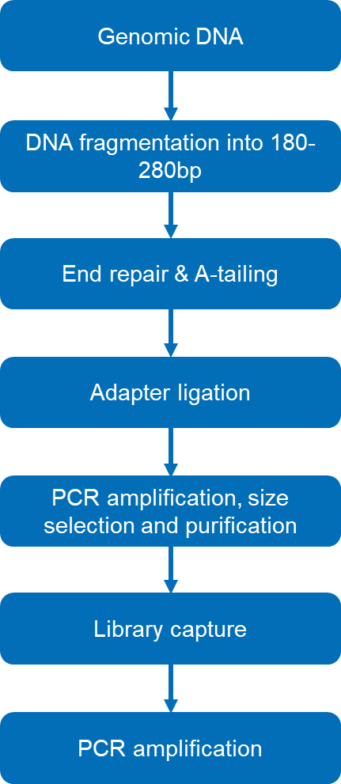
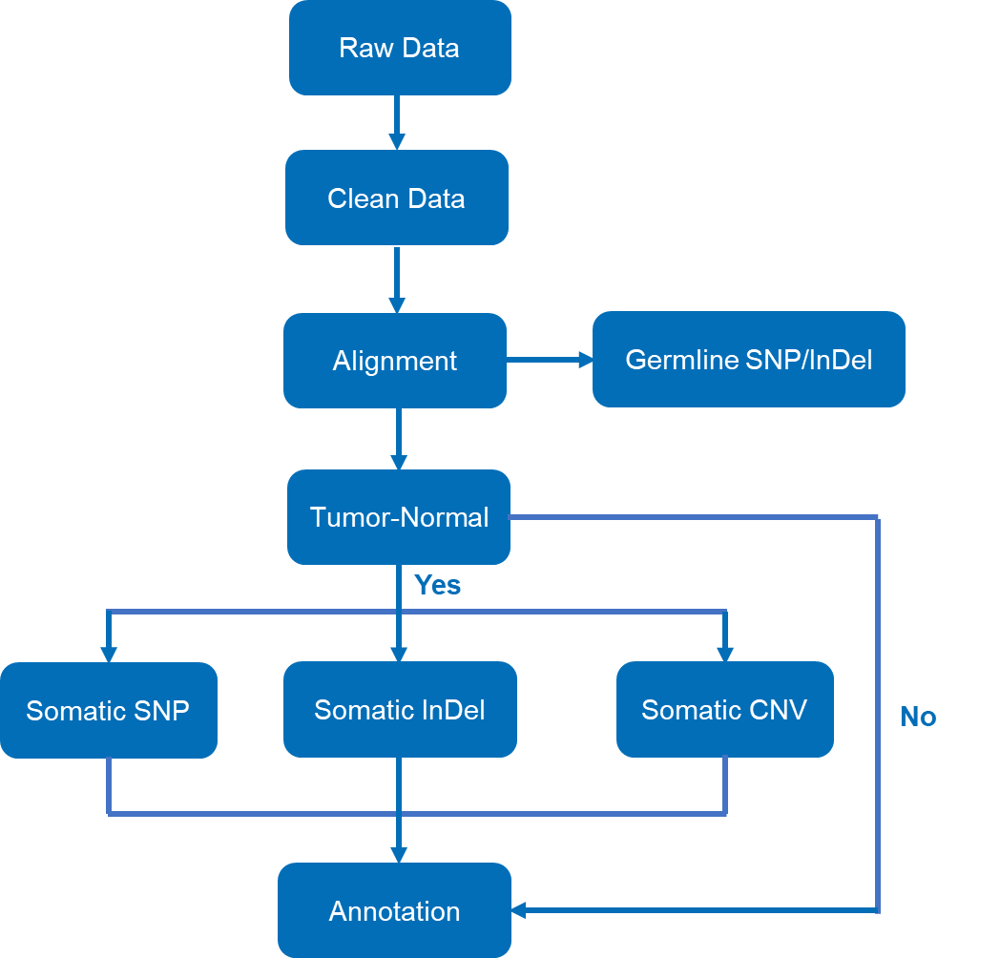
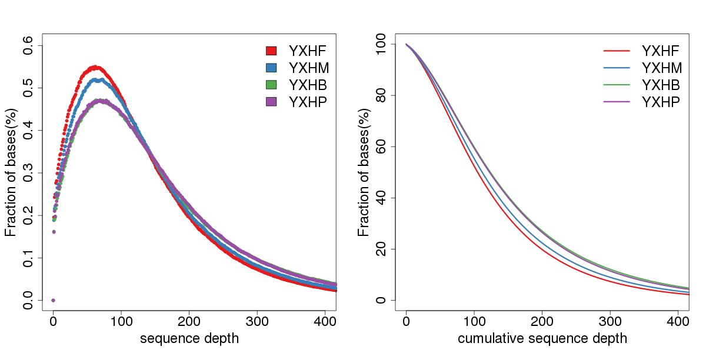
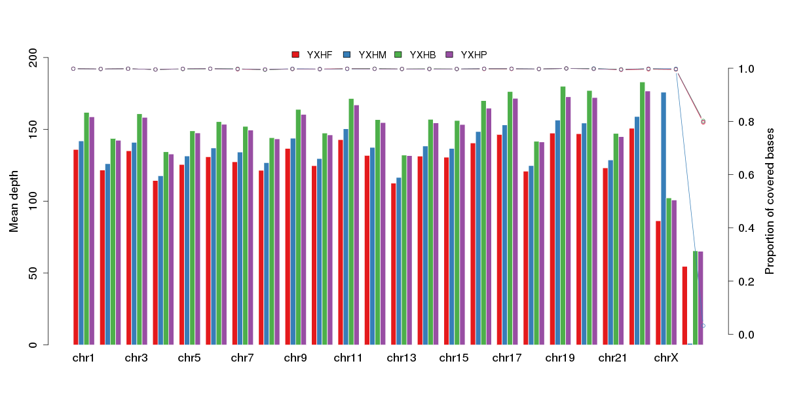
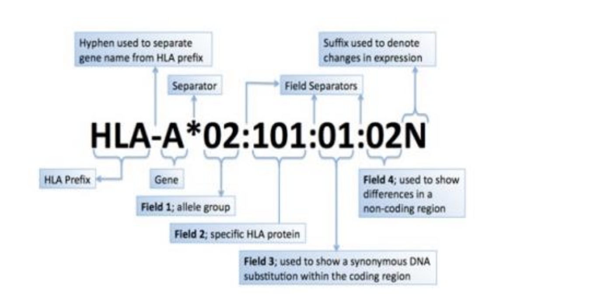

Human WES Standard Analysis Report
| Contract ID | H20XXXXX |
| Contract Name | TESTXXXXXXXXXX |
| Batch ID | X202XXXXXX-Z01-F001 |
| Reference Genome and Version | hg38 |
| Report Time | 20250106 |
| Reminder | Partial results are presented in this report, while full results will be delivered in data release.Hyperlink of results in this report will be only valid in data release, after statement confirmation. |
1 Introduction
1.1 Background
Exome sequencing provides a cost-effective alternative to whole genome sequencing as it targets only coding region of the human genome responsible for a majority of known diseases and their related variants. Whether you are conducting studies in rare Mendelian disorders, complex diseases, cancer research, or human population studies, our company's comprehensive human whole exome sequencing provides a high-quality, affordable and convenient solution.
Our company's bioinformatics analysis includes data QC, mapping with reference genome, SNP/InDel, somatic SNP/InDel/CNV Calling, statistics and annotation. Our company utilizes prevalent software in bioinformatics analysis, e.g. BWA, Sambamba, GATK, etc.
In particular, the bioinformatics pipeline applies the exome aggregation consortium (ExAC). ExAC dataset spans 60,706 unrelated individuals representing various specific diseases, for tremendous genetic studies across human population. The scalable database greatly facilitates the research of disease pathogenesis.
Workflow is shown as follows:
Figure 1 Project workflow
2 Library Construction and Sequencing
2.1 Sample Quality Control
Methods of sample quality control refer to QC report.
2.2 Library Construction, Quality Control and Sequencing
The genomic DNA was randomly sheared into short fragments with the size of 180-280 bp. The obtained fragments were end repaired, A-tailed, and further ligated with Illumina adapters. The fragments with adapters were PCR amplified, size selected, and purified. Hybridization capture of libraries was proceeded according to the following procedures. Briefly, the prepped libraries were hybridized in the buffer with biotin-labeled probes, and magnetic beads with streptavidin were used to capture the exons of genes. Subsequently, non-hybridized fragments were washed out and probes were digested. The captured libraries were enriched by PCR amplification.
The experimental procedures of DNA library preparation are shown in Figure 2.

Figure 2 Workflow of library construction
The library was checked with Qubit and real-time PCR for quantification and bioanalyzer for size distribution detection. Quantified libraries were pooled and sequenced on Illumina platforms with PE150 strategy, according to the effective library concentration and data amount required.
Method details involved in the project are available at method.
3 Bioinformatics Analysis Pipeline
Bioinformatics analysis includes:
1) Data quality control: filtering out reads containing adapters or with low quality;
2) Alignment with reference genome, statistics of sequencing depth and coverage;
3) SNP/InDel calling, annotation and statistics;
The flowchart below depicts the pipeline of data QC and bioinformatics analysis we used.

Figure 3 Bioinformatics analysis pipeline
Method details involved in the project are available at method.
4 Analysis Result
4.1 Raw Data
The original fluorescence image files obtained from sequencing platform are transformed to short reads (Raw data) by base calling. These short reads are recorded in FASTQ (.fq) format files, which contain sequence information (reads) and corresponding base quality.
Each read in FASTQ format is stored in four lines as follows:
@EAS139:136:FC706VJ:2:2104:15343:197393 1:Y:18:ATCACG
GCTCTTTGCCCTTCTCGTCGAAAATTGTCTCCTCATTCGAAACTTCTCTGT
+
@@CFFFDEHHHHFIJJJ@FHGIIIEHIIJBHHHIJJEGIIJJIGHIGHCCF
Line 1 begins with a '@' character which is followed by a sequence identifier and an optional description.
Line 2 shows the sequenced bases.
Line 3 begins with a '+' character and is optionally followed by the same sequence identifier.
Line 4 encodes the sequencing quality for each base in line 2, and contains the same number of characters as bases in line 2.
Illumina sequence identifier details:
| EAS139 | Unique instrument name |
| 136 | Run ID |
| FC706VJ | Flowcell ID |
| 2 | Flowcell lane |
| 2104 | Tile number within the flowcell lane |
| 15343 | 'x'-coordinate of the cluster within the tile |
| 197393 | 'y'-coordinate of the cluster within the tile |
| 1 | Member of a pair, 1 or 2 (paired-end or mate-pair reads only) |
| Y | Y if the read fails filter (read is bad), otherwise N |
| 18 | 0 when none of the control bits are on, Otherwise it is an even number |
| ATCACG | Index sequence |
The ASCII value of each character at the fourth line minus 33 equals to the Phred-scaled quality value of the corresponding sequenced base in the second line. The relationship between sequencing error rate (e) and base quality value (Qphred) can be expressed by the following equation:
Qphred = -10log10(e)
The table below shows examples of corresponding values among sequencing error rate (e), base quality value (Qphred) and characters.
| Sequencing error rate | Sequencing quality value | Corresponding character |
|---|---|---|
| 5% | 13 | . |
| 1% | 20 | 5 |
| 0.1% | 30 | ? |
| 0.01% | 40 | I |
4.2 Quality Control
4.2.1 Sequencing Data Filtration
Sequencing artifacts, including reads containing adapter contamination, low-quality nucleotides and unrecognizable nucleotides (N), apparently brings ambiguity for the subsequent bioinformatics analysis. Hence quality control is an essential step and applied to guarantee the meaningful analysis. All of downstream analysis will be based on clean reads that pass quality control.
Our company performed quality control according to following procedures:
1) Discard paired-end reads if either one
read contains adapter contamination (>10 nucleotides aligned to the adapter, allowing ≤ 10% mismatches);
2) Discard paired-end reads if more than 10% of bases are
uncertain (read as N) in either one read;
3) Discard paired-end reads if the proportion of
low-quality (Phred quality < 5) bases is over 50% in either one read.
DNA-Seq Adapter (Adapter, Oligonucleotide sequences for DNA Sample Prep Kits) information:
P5 adapter:
P5→P7’(5’→3’)
AATGATACGGCGACCACCGAGATCTACAC[i5]ACACTCTTTCCCTACACGACGCTCTTCCGATCT
P7 adapter:
P5→P7’(5’→3’)
GATCGGAAGAGCACACGTCTGAACTCCAGTCAC[i7]ATCTCGTATGCCGTCTTCTGCTTG

Figure 4.1 Raw data filtration result
4.2.2 Examination of Sequencing Error Rate
Sequencing error rate and base quality can be affected by various factors such as sequencing platform, chemical reagent and sample quality. Due to the consumption of chemical reagents, error rate is increasing with the read extension, which is a common feature of the high throughput sequencing platform.


Figure 4.2 Sequencing error rate distribution
The x-axis represents position in reads, and the y-axis represents the average error rate of bases of all reads at a position.
4.2.3 GC Content Distribution
Evaluation of GC content distribution aims to check the potential of AT/GC separation phenomenon, which maybe resulted from sample contamination, sequencing bias or errors in library preparation.
In theory, GC or AT content should be constant along read positions. But it is common to see that the first 6 to 7 bases in both reads (read1 & read2) fluctuate in GC content, due to primer amplification bias and some other reasons.


Figure 4.3 GC content distribution
The x-axis represents the position in reads, and the y-axis represents the percentage of each type of bases (A, T, G, C); different bases can be distinguished by different colors.
4.2.4 Sequencing Quality Distribution
The Phred-scaled quality scores of most bases should be greater than 20, it is also required for downstream analysis. Base quality decreases along reads is common, which is an inherent circumstance of next generation sequencing.
Figure 4.4 Sequencing quality distribution
The x-axis represents the position in reads, and the y-axis represents the average quality score of bases of all reads at a position.
4.2.5 Statistics of Sequencing Quality
According to the sequencing feature of sequencing platforms, our company requires the value of Q30 (the percentage of bases with Phred-scaled quality scores is greater than 30) should be above 85% for paired-end sequencing data.
Table 4.1 Overview of data production quality
| Sample name | NovoID | Flowcell/Lane | Raw reads | Raw data(G) | Effective(%) | Error(%) | Q20(%) | Q30(%) | GC(%) |
|---|---|---|---|---|---|---|---|---|---|
| YXHF | FKDO230317194-1A | AH5LKHDSX7-new_L3 | 13730012 | 11.4 | 99.01 | 0.02 | 98.09 | 94.65 | 51.73 |
| YXHF | FKDO230317194-1A | AH5MH2DSX7-new_L3 | 24204995 | 99.01 | 0.03 | 97.36 | 92.87 | 51.75 | |
| YXHM | FKDO230317193-1A | AH5LKHDSX7-new_L3 | 15469255 | 12.6 | 99.32 | 0.03 | 97.83 | 94.08 | 51.78 |
| YXHM | FKDO230317193-1A | AH5MH2DSX7-new_L3 | 26500880 | 99.34 | 0.03 | 97.06 | 92.32 | 51.71 | |
| YXHB | FKDO230317195-1A | AH5LKHDSX7-new_L3 | 16948091 | 13.8 | 99.17 | 0.03 | 97.89 | 94.22 | 51.98 |
| YXHB | FKDO230317195-1A | AH5MH2DSX7-new_L3 | 29033087 | 99.19 | 0.03 | 97.12 | 92.47 | 51.99 | |
| YXHP | FKDO230317192-1A | AH5MH2DSX7-new_L3 | 27629338 | 13.1 | 98.79 | 0.03 | 97.02 | 92.26 | 51.80 |
| YXHP | FKDO230317192-1A | AH5LKHDSX7-new_L3 | 16139292 | 98.76 | 0.03 | 97.73 | 93.87 | 51.84 |
4.3 Sequence Alignment
Burrows-Wheeler Aligner (BWA) (Li et al., 2018) was utilized to map the paired-end clean reads to the human reference genome. The original mapping result can be obtained in BAM format. Sambamba (Tarasov et al., 2015) is used for sorting the BAM files, and Picard (The Quick Start is available online: https://broadinstitute.github.io/picard/) is utilized to mark duplicate reads.
Final BAM files can be obtained after these steps. Then the coverage and depth will be computed based on BAM.
4.3.1 Sequencing Depth & Coverage Distribution

Figure 4.5 Sequencing depth
The left figure shows sequencing depth distribution of all bases in each sample. The
x-axis represents the sequencing depth, and the y-axis represents the fraction of bases with the given
sequencing depth.
The right figure shows accumulative sequencing depth distribution of all bases in each sample. The
x-axis represents the accumulative sequencing depth, and the y-axis represents the fraction of bases
above the given sequencing depth.

Figure 4.6 Average sequencing depth (bar plot) and coverage (dot-line plot) in each chromosome
The x-axis represents the chromosome; the left y-axis represents the average depth; the right y-axis represents the coverage (proportion of covered bases).
4.3.2 Statistics of Mapping, Coverage and Depth
Table 4.2 Statistics of mapping, coverage and depth in each sample
| Sample name | YXHF | YXHM | YXHB | YXHP |
|---|---|---|---|---|
| Total | 75117166 (100%) | 83379130 (100%) | 91208202 (100%) | 86468072 (100%) |
| Duplicate | 12603157 (16.79%) | 14238608 (17.09%) | 17425030 (19.12%) | 16695122 (19.32%) |
| Mapped | 75064562 (99.93%) | 83303349 (99.91%) | 91122763 (99.91%) | 86391770 (99.91%) |
| Properly mapped | 74577914 (99.28%) | 82793532 (99.30%) | 90518948 (99.24%) | 85844730 (99.28%) |
| PE mapped | 75021104 (99.87%) | 83245290 (99.84%) | 91057834 (99.84%) | 86331616 (99.84%) |
| SE mapped | 86916 (0.12%) | 116118 (0.14%) | 129858 (0.14%) | 120308 (0.14%) |
| With mate mapped to a different chr | 302504 (0.40%) | 285474 (0.34%) | 357050 (0.39%) | 342464 (0.40%) |
| With mate mapped to a different chr ((mapQ>=5)) | 256605 (0.34%) | 240879 (0.29%) | 303003 (0.33%) | 295809 (0.34%) |
| Initial_bases_on_target | 60507855 | 60507855 | 60507855 | 60507855 |
| Initial_bases_on_or_near_target | 136466827 | 136466827 | 136466827 | 136466827 |
| Total_effective_yield(Mb) | 11220.79 | 12448.90 | 13617.07 | 12909.63 |
| Effective_yield_on_target(Mb) | 7934.30 | 8483.89 | 9475.07 | 9295.33 |
| Fraction_of_effective_bases_on_target | 70.71% | 68.15% | 69.58% | 72.00% |
| Fraction_of_effective_bases_on_or_near_target | 91.67% | 91.23% | 91.64% | 92.18% |
| Average_sequencing_depth_on_target | 131.13 | 140.21 | 156.59 | 153.62 |
| Bases_covered_on_target | 60292701 | 60170337 | 60320486 | 60308717 |
| Coverage_of_target_region | 99.64% | 99.44% | 99.69% | 99.67% |
| Fraction_of_target_covered_with_at_least_100x | 52.38% | 55.30% | 59.81% | 59.38% |
| Fraction_of_target_covered_with_at_least_50x | 78.70% | 80.44% | 82.74% | 82.36% |
| Fraction_of_target_covered_with_at_least_20x | 93.39% | 93.85% | 94.72% | 94.52% |
| Fraction_of_target_covered_with_at_least_10x | 97.15% | 97.21% | 97.71% | 97.62% |
| Fraction_of_target_covered_with_at_least_4x | 98.96% | 98.82% | 99.14% | 99.10% |
4.4 Germline Mutation Detection
4.4.1 SNP Detection Result
Single nucleotide polymorphisms (SNPs), also known as single nucleotide variants (SNVs), constitute the largest class of genetic variants in genome. A typical human genome has about 3.6 million SNPs (DePristo et al., 2011). Statistics of detected SNPs are shown below.
Table 4.3 The number of SNPs in various genomic regions
| Sample name | YXHF | YXHM | YXHB | YXHP |
|---|---|---|---|---|
| CDS | 22549 | 22828 | 22995 | 22494 |
| synonymous_SNP | 11540 | 11632 | 11678 | 11540 |
| missense_SNP | 10625 | 10857 | 10944 | 10598 |
| stopgain | 89 | 86 | 90 | 83 |
| stoploss | 14 | 11 | 15 | 15 |
| startloss | 29 | 20 | 23 | 24 |
| unknown | 230 | 213 | 236 | 223 |
| intronic | 72902 | 84278 | 82375 | 73098 |
| UTR3 | 4493 | 5222 | 5064 | 4505 |
| UTR5 | 2529 | 2729 | 2734 | 2554 |
| splicing | 532 | 529 | 536 | 525 |
| ncRNA_exonic | 2888 | 3227 | 3158 | 2922 |
| ncRNA_intronic | 5258 | 6208 | 6182 | 5199 |
| ncRNA_splicing | 40 | 39 | 38 | 37 |
| upstream | 2536 | 3055 | 3023 | 2564 |
| downstream | 1004 | 1140 | 1133 | 985 |
| intergenic | 13302 | 14183 | 15566 | 14288 |
| Total | 127838 | 143218 | 142581 | 128966 |
Figure 4.7 Number of SNPs in various genomic regions (left pie plot); number of different types of SNPs in coding region (right pie plot)
Table 4.4 Feature of SNPs
| Sample name | YXHF | YXHM | YXHB | YXHP |
|---|---|---|---|---|
| Total | 127838 | 143218 | 142581 | 128966 |
| Het | 79693 | 89766 | 88349 | 80505 |
| Hom | 48145 | 53452 | 54232 | 48461 |
| ts | 88675 | 99049 | 98550 | 89324 |
| tv | 39163 | 44169 | 44031 | 39642 |
| ts/tv | 2.26 | 2.24 | 2.24 | 2.25 |
| dbSNP percentage | 124781(97.61%) | 139989(97.75%) | 139157(97.60%) | 125974(97.68%) |
| novel | 3057 | 3229 | 3424 | 2992 |
| novel_ts | 1727 | 1764 | 1923 | 1635 |
| novel_tv | 1330 | 1465 | 1501 | 1357 |
| novel_ts/tv | 1.30 | 1.20 | 1.28 | 1.20 |
4.4.2 InDel Detection Result
Small insertions and deletions (InDels) that are less than 50 bp in length constitute another class of genetic variants in human genome.
The InDels occurred in coding region or splicing sites may cause changes in transcripts and proteins. If the number of inserted or deleted nucleotides is not in frame of three or multiples of three, the entire reading frame would be altered. The statistics of InDels (DePristo et al., 2011) called in the samples are listed below:
Table 4.5 The number of InDels in various genomic regions
| Sample name | YXHF | YXHM | YXHB | YXHP |
|---|---|---|---|---|
| CDS | 661 | 690 | 698 | 659 |
| frameshift deletion | 130 | 136 | 143 | 124 |
| frameshift insertion | 85 | 95 | 103 | 81 |
| nonframeshift deletion | 233 | 238 | 227 | 234 |
| nonframeshift insertion | 176 | 185 | 189 | 179 |
| stopgain | 17 | 19 | 17 | 15 |
| stoploss | 2 | 3 | 1 | 4 |
| startloss | 3 | 3 | 4 | 4 |
| unknown | 12 | 10 | 10 | 15 |
| intronic | 15947 | 18586 | 18016 | 15981 |
| UTR3 | 994 | 1168 | 1117 | 984 |
| UTR5 | 426 | 455 | 463 | 400 |
| splicing | 225 | 233 | 236 | 228 |
| ncRNA_exonic | 354 | 376 | 395 | 344 |
| ncRNA_intronic | 1018 | 1187 | 1185 | 1022 |
| ncRNA_splicing | 7 | 5 | 9 | 7 |
| upstream | 449 | 501 | 530 | 448 |
| downstream | 180 | 217 | 223 | 180 |
| intergenic | 1711 | 1783 | 1963 | 1774 |
| Total | 21935 | 25162 | 24783 | 21976 |
Figure 4.8 Number of InDels in various genomic regions (left); number ofdifferent types of InDels in coding region (right)
Table 4.6 Feature of InDels in genome
| Sample name | YXHF | YXHM | YXHB | YXHP |
|---|---|---|---|---|
| Total | 21935 | 25162 | 24783 | 21976 |
| Het | 16493 | 18847 | 18505 | 16460 |
| Hom | 5442 | 6315 | 6278 | 5516 |
| dbSNP percentage | 19202(87.54%) | 21958(87.27%) | 21627(87.27%) | 19284(87.75%) |
| novel | 2733 | 3204 | 3156 | 2692 |
4.4.3 Variant Annotation
Following genomic variant detection, annotation of variants with the tool ANNOVAR (Wang et
al., 2010) in multiple aspects are performed, including protein coding changes, genomic regions affected by
the variants, allele frequency, deleteriousness prediction, etc. The main databases used are as
follows:
- RefSeq (O'Leary et al., 2016) and Gencode (Frankish et al., 2021) databases were used to find genomic regions affected by the variant and possible changes in protein.
- We annotated the features of the genomic regions affected by the variants, such as cytoband, small RNA, conserved mammalian microRNA regulatory target sites, conservative regions of vertebrates, transcription factor binding sites, repeats, etc.
- SIFT (Ng et al., 2003), PolyPhen (Adzhubei et al., 2013), MutationAssessor (Reva et al., 2011), LRT (Chun et al., 2009) and CADD (Rentzsch et al., 2019) scores were used to predict the deleteriousness of mutations. GERP++ (Huber et al., 2020) scores were used to access the conservation of mutations.
- The established databases, such as 1000 Human Genome (Abecasis et al., 2012), Exome Aggregation Consortium (ExAC) (Kobayashi et al., 2017), Genome Aggregation Database (gnomAD) (Pio et al., 2021) and exome sequencing project (ESP), were used to find alternative allele frequencies in populations that are reported.
- Databases dbSNP (Sherry et al., 2001), COSMIC (Tate et al., 2019), OMIM (Hamosh et al., 2005), GWAS Catalog (Buniello et al., 2019) and HGMD (Stenson et al., 2020) were used to find reported information of the variant, such as top SNPs in GWAS and cancer/disease associations.
- Databases including Gene Ontology (Lee et al., 2004), KEGG (Kanehisa et al., 2000), Reactome (Jassal et al., 2020), Biocarta and PID (Schaefer et al., 2009) were applied to provide functional or pathway annotation.
Table 4.7 Example of annotation result
| Priority | CHROM | POS | ID | REF | ALT | QUAL | FILTER | GeneName | Description | Func | Gene | GeneDetail | ExonicFunc | AAChange | Gencode | cpgIslandExt | cytoBand | wgRna | genomicSuperDups | Repeat | avsnp | CLNALLELEID | CLNDN | CLNDISDB | CLNREVSTAT | CLNSIG | cosmic | gwasCatalog | 1000g_SAS | 1000g_EUR | 1000g_AFR | 1000g_AMR | 1000g_EAS | 1000g_ALL | esp6500siv2_all | gnomad_exome_AF | gnomad_exome_AF_raw | gnomad_exome_AF_afr | gnomad_exome_AF_sas | gnomad_exome_AF_amr | gnomad_exome_AF_eas | gnomad_exome_AF_nfe | gnomad_exome_AF_fin | gnomad_exome_AF_asj | gnomad_exome_AF_oth | gnomad_genome_AF | gnomad_genome_AF_raw | gnomad_genome_AF_afr | gnomad_genome_AF_sas | gnomad_genome_AF_amr | gnomad_genome_AF_eas | gnomad_genome_AF_nfe | gnomad_genome_AF_fin | gnomad_genome_AF_asj | gnomad_genome_AF_oth | ExAC_ALL | ExAC_AFR | ExAC_AMR | ExAC_EAS | ExAC_FIN | ExAC_NFE | ExAC_OTH | ExAC_SAS | dbscSNV_ADA_SCORE | dbscSNV_RF_SCORE | Interpro_domain | SIFT | Polyphen2_HDIV | Polyphen2_HVAR | LRT | MutationTaster | MutationAssessor | FATHMM | phyloP100way_vertebrate | phyloP30way_mammalian | SiPhy_29way_logOdds | CADD | gerp++gt2 | REVEL | INFO | FORMAT | YXHP | Ori_REF | Ori_ALT | shared_hom | shared_het | OMIM | GWAS_Pubmed_pValue | HGMD_Disease_ID | HGMD_Mutation_URL | PubMedID | GO_BP | GO_CC | GO_MF | KEGG_PATHWAY | PID_PATHWAY | BIOCARTA_PATHWAY | REACTOME_PATHWAY | Expression_summary | RNA tissue specificity | RNA tissue distribution | Subcellular_Location | RNA tissue specific nTPM |
|---|---|---|---|---|---|---|---|---|---|---|---|---|---|---|---|---|---|---|---|---|---|---|---|---|---|---|---|---|---|---|---|---|---|---|---|---|---|---|---|---|---|---|---|---|---|---|---|---|---|---|---|---|---|---|---|---|---|---|---|---|---|---|---|---|---|---|---|---|---|---|---|---|---|---|---|---|---|---|---|---|---|---|---|---|---|---|---|---|---|---|---|---|---|---|---|---|---|---|---|---|---|---|---|
| L | chr1 | 17398 | rs200784459 | C | A | 138.64 | PASS | MIR6859-3,MIR6859-1,MIR6859-4,MIR6859-2 | . | ncRNA_exonic | NR_106918,NR_107062,NR_107063,NR_128720 | . | . | . | ENST00000619216.1,ENST00000488147.1 | . | 1p36.33 | hsa-mir-6859-1 | Score=0.993729;Name=chr9:10843 | . | rs200784459 | . | . | . | . | . | . | . | . | . | . | . | . | . | . | 0.0007 | 0.0022 | 0.0107 | 0.0004 | 0.0030 | 0.0031 | 0.0002 | 0 | 0.0004 | 0.0010 | 0.0054 | 0.0179 | 0.0173 | 0.0012 | 0.0058 | 0.0022 | 0.0003 | 0 | 0.0003 | 0.0054 | 0.0193 | 0.0714 | 0.0180 | 0.0271 | 0 | 0.0058 | 0 | 0.0025 | . | . | . | . | . | . | . | . | . | . | . | . | . | 0.881754,10.24 | . | . | AC=1;AF=0.5;AN=2;BaseQRankSum=-0.987;DP=12;ExcessHet=0;FS=0;MLEAC=1;MLEAF=0.5;MQ=41.36;MQRankSum=-1.663;QD=11.55;ReadPosRankSum=0.618;SOR=0.693 | GT:AD:DP:GQ:PL | 0/1:6,6:12:99:146,0,180 | C | A | 0 | 1 | . | . | . | . | . | . | . | . | . | . | . | . | . | . | . | . | . |
| L | chr1 | 69511 | rs2691305 | A | G | 8792.06 | PASS | OR4F5 | . | exonic | NM_001005484 | . | missense SNV | OR4F5:NM_001005484:exon1:c.A421G:p.T141A | ENST00000641515.2 | . | 1p36.33 | . | Score=0.994828;Name=chr19:60000 | . | rs2691305 | . | . | . | . | . | ID=COSM4144171;OCCURENCE=1(thyroid) | . | . | . | . | . | . | . | 0.7598 | 0.9616 | 0.7768 | 0.6019 | 0.9847 | 0.9484 | 0.9999 | 0.9707 | 0.9900 | 0.9766 | 0.9418 | 0.8457 | 0.8612 | 0.5948 | 0.9776 | 0.8953 | 0.9998 | 0.9674 | 0.9907 | 0.9784 | 0.8655 | 0.9394 | 0.5942 | 0.9507 | 0.9994 | 0.9907 | 0.9716 | 0.9597 | 0.9832 | . | . | GPCR, rhodopsin-like, 7TM;GPCR, rhodopsin-like, 7TM | 0.652,T | 0.0,B | 0.0,B | 0.000,N | 1.000,P | -0.855,N | 1.26,T | -0.684 | -0.327 | 4.198 | . | . | 0.053 | AC=2;AF=1;AN=2;DP=295;ExcessHet=0;FS=0;MLEAC=2;MLEAF=1;MQ=46.47;QD=30.96;SOR=0.892 | GT:AD:DP:GQ:PL | 1/1:0,284:284:99:8806,850,0 | A | G | 1 | 0 | . | . | . | . | . | GOBP_G_PROTEIN_COUPLED_RECEPTOR_SIGNALING_PATHWAY;GOBP_SENSORY_PERCEPTION;GOBP_SENSORY_PERCEPTION_OF_CHEMICAL_STIMULUS;GOBP_SENSORY_PERCEPTION_OF_SMELL;GOBP_DETECTION_OF_CHEMICAL_STIMULUS;GOBP_NERVOUS_SYSTEM_PROCESS;GOBP_DETECTION_OF_STIMULUS_INVOLVED_IN_SENSORY_PERCEPTION;GOBP_DETECTION_OF_STIMULUS | . | GOMF_G_PROTEIN_COUPLED_RECEPTOR_ACTIVITY;GOMF_MOLECULAR_TRANSDUCER_ACTIVITY | KEGG_OLFACTORY_TRANSDUCTION | . | . | REACTOME_OLFACTORY_SIGNALING_PATHWAY;REACTOME_SENSORY_PERCEPTION;REACTOME_GPCR_DOWNSTREAM_SIGNALING | . | Not detected | Not detected | . | . |
| L | chr1 | 88169 | rs940550 | C | T | 68.64 | PASS | . | . | intergenic | NM_001005484,NR_039983 | dist=18161;dist=46604 | . | . | . | . | 1p36.33 | . | Score=0.992727;Name=chr1:265774 | Score=811;Name="118:L2(LINE)" | rs940550 | . | . | . | . | . | . | . | 0.2342 | 0.1571 | 0.4085 | 0.3919 | 0.2976 | 0.299321 | . | . | . | . | . | . | . | . | . | . | . | 0.2674 | 0.2730 | 0.4092 | 0.2671 | 0.4123 | 0.3670 | 0.1335 | 0.1449 | 0.1312 | 0.2768 | . | . | . | . | . | . | . | . | . | . | . | . | . | . | . | . | . | . | . | . | . | . | . | . | AC=1;AF=0.5;AN=2;BaseQRankSum=0.524;DP=5;ExcessHet=0;FS=0;MLEAC=1;MLEAF=0.5;MQ=50.85;MQRankSum=0.253;QD=13.73;ReadPosRankSum=1.65;SOR=1.179 | GT:AD:DP:GQ:PL | 0/1:2,3:5:34:76,0,34 | C | T | 0 | 1 | . | . | . | . | . | . | . | . | . | . | . | . | . | Not detected | Not detected | . | . |
| L | chr1 | 183598 | . | C | G | 239.64 | PASS | DDX11L17 | . | ncRNA_intronic | NR_148357 | . | . | . | ENST00000624431.2 | . | 1p36.33 | . | Score=0.988896;Name=chr1:10169 | . | . | . | . | . | . | . | . | . | . | . | . | . | . | . | . | 0.0715 | 0.0980 | 0.2889 | 0.0826 | 0.0922 | 0.3868 | 0.0429 | 0.0860 | 0.0305 | 0.0834 | 0.2182 | 0.3027 | 0.4216 | 0.2056 | 0.2243 | 0.3983 | 0.0863 | 0.2185 | 0.0664 | 0.1652 | . | . | . | . | . | . | . | . | . | . | . | . | . | . | . | . | . | . | . | . | . | . | . | . | AC=1;AF=0.5;AN=2;BaseQRankSum=1.11;DP=15;ExcessHet=0;FS=0;MLEAC=1;MLEAF=0.5;MQ=41.72;MQRankSum=-1.458;QD=15.98;ReadPosRankSum=0.112;SOR=1.179 | GT:AD:DP:GQ:PL | 0/1:8,7:15:99:247,0,231 | C | G | 0 | 1 | . | . | . | . | . | . | . | . | . | . | . | . | . | . | . | . | . |
Result:03.Result_Homo_sapiens/result/Mutation/SNP/Annotation
4.5 Advance Analysis Result
There are so many mutations detected from our samples, but only few of them are related to the specific disease. In order to identify mutations that are truly associated with the disease being studied, we need to use existing databases, software and other tools, combined with sample information, to screen the mutations from detection results step by step, and get the final candidate disease-causing mutations.The specific analysis method is as follows:
(1)SNP and InDel filtering and deleterious classification; (2)Screening mutations according to dominant/recessive genetic pattern or screening common mutations in sporadic samples; (3)Denovo mutation detection for trio samples with normal parents and sick children; (4)Linkage analysis for families with at least three generations; (5)Taken pathogenic and likely pathogenic genes obtained from step (1) as candidate genes to do GO and KEGG pathway analysis, gene-disease phenotypic association analysis and PPI analysis.Figure 4.5.3 Screening process for candidate pathogenic mutations
4.5.1 Comprehensive Quality Control of Sequencing Data
4.5.1.1 Comprehensive Evaluation of Sequencing Data Quality
According to the summary results of sample sequencing quality, statistical results of sequencing depth and coverage, and statistical results of variation detection, the comprehensive judgment shows that the sample data meets the analysis requirements, and subsequent analysis can be conducted.
4.5.1.2 Sample Gender Judgment
The gender identified by the analysis process of the sequencing sample was consistent with the gender filled in the information collection form (BIF), which could be used for subsequent analysis.
4.5.1.3 IBD Analysis (Sample kinship judgment)
The IBD analysis results of the samples were consistent with the family information of the samples, and subsequent analysis could be carried out.
4.5.2 Variant filtering based on deleteriousness
4.5.2.1 Variant filtering using known databases
The specific filtering SNP/InDel process in the standard analysis is as follows:
(1) Removing mutations with the allele frequency >1% in at least one of the 1000 Genomes Project (1000g_all), ESP6500 database (esp6500si_all), and gnomAD database (gnomAD_ALL and gnomAD_EAS), in order to remove the diversity mutations between individuals to obtain rare mutations that may cause disease;
(2) Retaining mutations in the coding region (exonic) or splicing site region (up and down 10bp);
(3) Removing synonymous SNP mutations that are not located in the highly conserved region and are not predicted by the software to affect splicing (the sites with GERP++ score >2 are in the highly conserved region; It is considered that mutation affects splicing if at least one of the two predicted dbscSNV scores is greater than 0.6). Remove small fragments (<10bp) in the Repeat region and non-frameshift InDels;
(4)Retaining mutations that meet one of the following conditions: a) Mutations are predicted to be deleterious: Mutations are screened according to the scores of SIFT, Polyphen, MutationTaster, and CADD. It is required that at least half of the softwares with scores in these four softwares supports that the mutation may be deleterious, and then the site is retained;
b) Mutations are predicted to affect splicing: mutations in splicing site regions that are not more than 2bp (±1~2bp) away from exons are retained; Retaining mutations predicted by dbscSNV to affect splicing (there is at least one of the two predicted scores of dbscSNV greater than 0.6). (e.g., the prediction results of one site were 'SIFT=.', 'Polyphen=.', 'MutationTaster=1.000,N', 'CADD=.', 'dbscSNV_score=0.5589,0.636', and 4 deleterious prediction softwares did not support the deleterious results of this site. But one of the dbscSNV scores was higher than 0.6, meaning the software predicted that the mutation would affect splicing, and that site was also preserved.)
The mutations obtained through the above four steps are listed in Table 4.5.6:
Table 4.5.6 Statistics of mutations filtering result
| Total | Freq | Func | ExonicFunc | Deleterious |
|---|---|---|---|---|
| 219136 | 14947 | 2734 | 1706 | 1008 |
The annotation of variations obtained after screening through the above four steps is shown in Table 4.5.7 (only the first few lines are shown):
Table 4.5.7 The annotation result of mutations filtering
| Priority | CHROM | POS | ID | REF | ALT | QUAL | GeneName | Description | Func | GeneDetail | ExonicFunc | AAChange | Gencode | cytoBand | genomicSuperDups | Repeat | FORMAT | YXHB | YXHF | YXHM | YXHP | Ori_REF | Ori_ALT | 1000g_ALL | esp6500siv2_all | gnomad_exome_AF | gnomad_exome_AF_raw | gnomad_exome_AF_afr | gnomad_exome_AF_sas | gnomad_exome_AF_amr | gnomad_exome_AF_eas | gnomad_exome_AF_nfe | gnomad_exome_AF_fin | gnomad_exome_AF_asj | gnomad_exome_AF_oth | gnomad_genome_AF | gnomad_genome_AF_raw | gnomad_genome_AF_afr | gnomad_genome_AF_sas | gnomad_genome_AF_amr | gnomad_genome_AF_eas | gnomad_genome_AF_nfe | gnomad_genome_AF_fin | gnomad_genome_AF_asj | gnomad_genome_AF_oth | ExAC_ALL | ExAC_AFR | ExAC_AMR | ExAC_EAS | ExAC_FIN | ExAC_NFE | ExAC_OTH | ExAC_SAS | dbscSNV_ADA_SCORE | dbscSNV_RF_SCORE | Interpro_domain | SIFT | Polyphen2_HDIV | Polyphen2_HVAR | CADD | gerp++gt2 | REVEL | CLNALLELEID | CLNDN | CLNDISDB | CLNREVSTAT | CLNSIG | OMIM | HGMD_Disease_ID | HGMD_Mutation_URL | PubMedID | GO_BP | GO_CC | GO_MF | KEGG_PATHWAY | PID_PATHWAY | BIOCARTA_PATHWAY | REACTOME_PATHWAY | Expression_summary | RNA tissue specificity | RNA tissue distribution | Subcellular_Location | RNA tissue specific nTPM |
|---|---|---|---|---|---|---|---|---|---|---|---|---|---|---|---|---|---|---|---|---|---|---|---|---|---|---|---|---|---|---|---|---|---|---|---|---|---|---|---|---|---|---|---|---|---|---|---|---|---|---|---|---|---|---|---|---|---|---|---|---|---|---|---|---|---|---|---|---|---|---|---|---|---|---|---|---|---|---|---|---|---|---|---|
| H | chr1 | 974054 | rs544341319 | G | A | 321.75 | PLEKHN1 | . | splicing | NM_001160184:exon13:c.1548+3G>A;NM_001367552:exon14:c.1689+3G>A;NM_032129:exon14:c.1653+3G>A | . | . | ENST00000379410.8,ENST00000379409.6,ENST00000491024.1,ENST00000379407.7 | 1p36.33 | . | . | GT:AD:DP:GQ:PL | 0/0:37,0:37:99:0,101,1254 | 0/0:26,0:26:75:0,75,957 | 0/1:9,11:20:99:331,0,270 | 0/0:18,0:18:51:0,51,765 | G | A | 0.000199681 | . | 1.334e-05 | 1.368e-05 | 0 | 4.819e-05 | 2.498e-05 | 0.0003 | 0 | 0 | 0 | 3.393e-05 | 3.282e-05 | 3.281e-05 | 0 | 0.0006 | 0 | 0.0004 | 0 | 0 | 0 | 0 | 2.657e-05 | 0 | 0 | 0.0005 | 0 | 0 | 0 | 0 | 0.0001 | 0 | . | . | . | . | 0.946700,10.96 | . | . | . | . | . | . | . | . | . | . | . | GOBP_RNA_CATABOLIC_PROCESS;GOBP_MRNA_CATABOLIC_PROCESS;GOBP_PEPTIDE_METABOLIC_PROCESS;GOBP_APOPTOTIC_PROCESS;GOBP_MACROMOLECULE_CATABOLIC_PROCESS;GOBP_RESPONSE_TO_ABIOTIC_STIMULUS;GOBP_NEGATIVE_REGULATION_OF_BIOSYNTHETIC_PROCESS;GOBP_REGULATION_OF_CATABOLIC_PROCESS;GOBP_POSITIVE_REGULATION_OF_CATABOLIC_PROCESS;GOBP_POST_TRANSCRIPTIONAL_REGULATION_OF_GENE_EXPRESSION;GOBP_NEGATIVE_REGULATION_OF_GENE_EXPRESSION;GOBP_REGULATION_OF_CELL_DEATH;GOBP_POSITIVE_REGULATION_OF_CELL_DEATH;GOBP_MRNA_METABOLIC_PROCESS;GOBP_REGULATION_OF_CELLULAR_CATABOLIC_PROCESS;GOBP_POSITIVE_REGULATION_OF_CELLULAR_CATABOLIC_PROCESS;GOBP_REGULATION_OF_AMIDE_METABOLIC_PROCESS;GOBP_NEGATIVE_REGULATION_OF_AMIDE_METABOLIC_PROCESS;GOBP_CELLULAR_MACROMOLECULE_BIOSYNTHETIC_PROCESS;GOBP_PEPTIDE_BIOSYNTHETIC_PROCESS;GOBP_AMIDE_METABOLIC_PROCESS;GOBP_AMIDE_BIOSYNTHETIC_PROCESS;GOBP_CELLULAR_MACROMOLECULE_CATABOLIC_PROCESS;GOBP_HETEROCYCLE_CATABOLIC_PROCESS;GOBP_RNA_DESTABILIZATION;GOBP_NEGATIVE_REGULATION_OF_PROTEIN_METABOLIC_PROCESS;GOBP_POSITIVE_REGULATION_OF_RNA_METABOLIC_PROCESS;GOBP_REGULATION_OF_MRNA_CATABOLIC_PROCESS;GOBP_3_UTR_MEDIATED_MRNA_DESTABILIZATION;GOBP_RESPONSE_TO_OXYGEN_LEVELS;GOBP_ORGANIC_CYCLIC_COMPOUND_CATABOLIC_PROCESS;GOBP_ORGANONITROGEN_COMPOUND_BIOSYNTHETIC_PROCESS;GOBP_REGULATION_OF_MRNA_METABOLIC_PROCESS;GOBP_POSITIVE_REGULATION_OF_MRNA_METABOLIC_PROCESS;GOBP_REGULATION_OF_CELLULAR_MACROMOLECULE_BIOSYNTHETIC_PROCESS | GOCC_MITOCHONDRION;GOCC_MITOCHONDRIAL_ENVELOPE;GOCC_ENVELOPE | GOMF_PHOSPHATIDYLSERINE_BINDING;GOMF_PHOSPHOLIPID_BINDING;GOMF_LIPID_BINDING;GOMF_PHOSPHATIDYLINOSITOL_BINDING;GOMF_PHOSPHATIDIC_ACID_BINDING;GOMF_MODIFIED_AMINO_ACID_BINDING;GOMF_PHOSPHATIDYLGLYCEROL_BINDING;GOMF_CARDIOLIPIN_BINDING;GOMF_PHOSPHATIDYLINOSITOL_PHOSPHATE_BINDING | . | . | . | . | Nuclear expression in several tissues. | Tissue enhanced | Detected in at least a third but not all tissues. | Nuclear speckles | esophagus: 54.9;skin 1: 46.0;vagina: 24.2 |
| H | chr1 | 1974098 | rs779021655 | G | A | 4054.11 | CFAP74 | . | exonic | . | missense SNV | CFAP74:NM_001304360:exon7:c.C601T:p.R201C | ENST00000468610.5,ENST00000270720.11,ENST00000493964.5,ENST00000682832.2 | 1p36.33 | . | . | GT:AD:DP:GQ:PL | 0/1:37,45:82:99:1449,0,1219 | 0/0:34,0:34:99:0,99,1485 | 0/1:34,52:86:99:1730,0,942 | 0/1:42,31:73:99:887,0,1180 | G | A | . | . | 4.726e-05 | 4.857e-05 | 0.0001 | 6.97e-05 | 0.0004 | 2.524e-05 | 3.15e-05 | 0 | 0 | 6.631e-05 | 5.263e-05 | 5.254e-05 | 7.251e-05 | 0 | 0.0003 | 0 | 0 | 0 | 0 | 0.0005 | 8.578e-05 | 0.0001 | 0.0004 | 0 | 0 | 4.648e-05 | 0 | 6.215e-05 | . | . | . | . | 0.998,D | 0.736,P | 2.562482,22.6 | 3.4 | 0.160 | . | . | . | . | . | . | . | . | . | GOBP_MICROTUBULE_CYTOSKELETON_ORGANIZATION;GOBP_MICROTUBULE_BUNDLE_FORMATION;GOBP_CYTOSKELETON_ORGANIZATION;GOBP_MICROTUBULE_BASED_PROCESS;GOBP_CELL_PROJECTION_ORGANIZATION;GOBP_CELL_PROJECTION_ASSEMBLY;GOBP_AXONEME_ASSEMBLY;GOBP_CILIUM_ORGANIZATION;GOBP_ORGANELLE_ASSEMBLY | GOCC_CILIUM;GOCC_AXONEME;GOCC_CYTOPLASMIC_REGION | . | . | . | . | . | Expression in ciliated cells in fallopian tube and respiratory epithelia. Additional expression in testis. | Tissue enhanced | Detected in more than one but less than one third of tissues. | . | fallopian tube: 7.1;testis: 5.2 |
| H | chr1 | 2502334 | rs181993963 | G | A | 1210 | PLCH2 | PHOSPHOLIPASE C, ETA-2; PLCH2 | exonic | . | missense SNV | PLCH2:NM_001303012:exon21:c.G2803A:p.D935N,PLCH2:NM_001303013:exon21:c.G2944A:p.D982N,PLCH2:NM_014638:exon21:c.G2884A:p.D962N | ENST00000278878.6,ENST00000343889.8,ENST00000419816.6,ENST00000462379.1,ENST00000473964.5,ENST00000378486.8,ENST00000449969.5 | 1p36.32 | . | . | GT:AD:DP:GQ:PL | 0/0:33,0:33:99:0,99,1294 | 0/1:22,19:41:99:637,0,615 | 0/0:40,0:40:99:0,108,1344 | 0/1:14,20:34:99:585,0,414 | G | A | 0.00179712 | . | 0.0010 | 0.0010 | 0 | 0.0001 | 2.947e-05 | 0.0348 | 3.818e-05 | 0.0020 | 0 | 0.0006 | 0.0006 | 0.0006 | 0 | 0.0002 | 0 | 0.0118 | 0.0001 | 0.0023 | 0 | 0 | 0.0002 | 0 | 0 | 0.0052 | 0 | 0 | 0 | 0.0002 | . | . | . | 0.003,D | 0.01,B | 0.002,B | 1.449541,15.41 | . | 0.078 | . | . | . | . | . | PHOSPHOLIPASE C, ETA-2; PLCH2, 612836 | . | . | 15899900| 15583837| 16107206 | GOBP_LIPID_METABOLIC_PROCESS;GOBP_PHOSPHOLIPID_METABOLIC_PROCESS;GOBP_GLYCEROPHOSPHOLIPID_METABOLIC_PROCESS;GOBP_MONOATOMIC_ION_TRANSPORT;GOBP_MONOATOMIC_CATION_TRANSPORT;GOBP_CALCIUM_ION_TRANSPORT;GOBP_INTRACELLULAR_MONOATOMIC_ION_HOMEOSTASIS;GOBP_LIPID_CATABOLIC_PROCESS;GOBP_ORGANOPHOSPHATE_METABOLIC_PROCESS;GOBP_CELLULAR_HOMEOSTASIS;GOBP_MONOATOMIC_ION_TRANSMEMBRANE_TRANSPORT;GOBP_HOMEOSTATIC_PROCESS;GOBP_CELLULAR_LIPID_METABOLIC_PROCESS;GOBP_GLYCEROLIPID_METABOLIC_PROCESS;GOBP_PHOSPHATIDYLINOSITOL_METABOLIC_PROCESS;GOBP_INOSITOL_LIPID_MEDIATED_SIGNALING;GOBP_CHEMICAL_HOMEOSTASIS;GOBP_MONOATOMIC_ION_HOMEOSTASIS;GOBP_SEQUESTERING_OF_CALCIUM_ION;GOBP_MAINTENANCE_OF_LOCATION;GOBP_MAINTENANCE_OF_LOCATION_IN_CELL;GOBP_CALCIUM_ION_HOMEOSTASIS;GOBP_TRANSMEMBRANE_TRANSPORT;GOBP_CALCIUM_ION_TRANSMEMBRANE_TRANSPORT;GOBP_CALCIUM_ION_TRANSMEMBRANE_IMPORT_INTO_CYTOSOL;GOBP_MONOATOMIC_CATION_TRANSMEMBRANE_TRANSPORT;GOBP_INORGANIC_ION_HOMEOSTASIS | . | GOMF_PHOSPHOLIPASE_ACTIVITY;GOMF_PHOSPHOLIPASE_C_ACTIVITY;GOMF_CALCIUM_ION_BINDING;GOMF_PHOSPHORIC_DIESTER_HYDROLASE_ACTIVITY;GOMF_LIPASE_ACTIVITY;GOMF_HYDROLASE_ACTIVITY_ACTING_ON_ESTER_BONDS;GOMF_PHOSPHORIC_ESTER_HYDROLASE_ACTIVITY | . | . | . | REACTOME_INOSITOL_PHOSPHATE_METABOLISM;REACTOME_SYNTHESIS_OF_IP3_AND_IP4_IN_THE_CYTOSOL | Cytoplasmic expression in neuronal cells, spermatogonia and in secretory cells of sweat glands. | Tissue enhanced | Detected in at least a third but not all tissues. | . | retina: 44.8;skin 1: 59.6 |
| H | chr1 | 6213171 | rs372508886 | G | A | 12224.1 | RNF207 | RING FINGER PROTEIN 207; RNF207 | exonic | . | missense SNV | RNF207:NM_207396:exon16:c.G1640A:p.R547Q | ENST00000496676.5,ENST00000377939.5,ENST00000483336.1 | 1p36.31 | . | . | GT:AD:DP:GQ:PL | 0/1:147,175:322:99:4820,0,3884 | 0/0:38,0:38:99:0,99,1363 | 0/1:109,127:236:99:3508,0,3038 | 0/1:167,152:319:99:3908,0,4125 | G | A | 0.000199681 | 8.2e-05 | 1.165e-05 | 1.231e-05 | 0 | 0 | 0 | 0.0001 | 9.908e-06 | 0 | 0 | 1.658e-05 | 1.315e-05 | 1.313e-05 | 4.818e-05 | 0 | 0 | 0 | 0 | 0 | 0 | 0 | 1.688e-05 | 0.0001 | 0 | 0.0001 | 0 | 0 | 0 | 0 | . | . | . | 0.104,T | 0.987,D | 0.531,P | 3.573441,24.9 | 3.88 | 0.159 | . | . | . | . | . | RING FINGER PROTEIN 207; RNF207, 616923 | . | . | 25281747 | GOBP_ACTION_POTENTIAL;GOBP_MORPHOGENESIS_OF_AN_EPITHELIUM;GOBP_HEART_MORPHOGENESIS;GOBP_MUSCLE_SYSTEM_PROCESS;GOBP_CIRCULATORY_SYSTEM_PROCESS;GOBP_HEART_PROCESS;GOBP_EMBRYONIC_HEART_TUBE_MORPHOGENESIS;GOBP_MONOATOMIC_ION_TRANSPORT;GOBP_MONOATOMIC_CATION_TRANSPORT;GOBP_POTASSIUM_ION_TRANSPORT;GOBP_MUSCLE_CONTRACTION;GOBP_REGULATION_OF_MUSCLE_CONTRACTION;GOBP_STRIATED_MUSCLE_CONTRACTION;GOBP_REGULATION_OF_STRIATED_MUSCLE_CONTRACTION;GOBP_CELL_CELL_SIGNALING;GOBP_PATTERN_SPECIFICATION_PROCESS;GOBP_HEART_DEVELOPMENT;GOBP_REGULATION_OF_HEART_CONTRACTION;GOBP_EMBRYO_DEVELOPMENT;GOBP_SPECIFICATION_OF_SYMMETRY;GOBP_ANIMAL_ORGAN_MORPHOGENESIS;GOBP_POSITIVE_REGULATION_OF_GENE_EXPRESSION;GOBP_REGULATION_OF_METAL_ION_TRANSPORT;GOBP_REGULATION_OF_ANATOMICAL_STRUCTURE_MORPHOGENESIS;GOBP_ACTIN_FILAMENT_BASED_PROCESS;GOBP_ACTIN_FILAMENT_BASED_MOVEMENT;GOBP_REGULATION_OF_TRANSPORTER_ACTIVITY;GOBP_POSITIVE_REGULATION_OF_TRANSPORTER_ACTIVITY;GOBP_MONOATOMIC_ION_TRANSMEMBRANE_TRANSPORT;GOBP_REGULATION_OF_TRANSMEMBRANE_TRANSPORT;GOBP_POSITIVE_REGULATION_OF_TRANSMEMBRANE_TRANSPORT;GOBP_REGULATION_OF_MONOATOMIC_ION_TRANSMEMBRANE_TRANSPORT;GOBP_POSITIVE_REGULATION_OF_MONOATOMIC_ION_TRANSMEMBRANE_TRANSPORT;GOBP_EMBRYONIC_HEART_TUBE_DEVELOPMENT;GOBP_TUBE_MORPHOGENESIS;GOBP_TUBE_DEVELOPMENT;GOBP_REGULATION_OF_MEMBRANE_POTENTIAL;GOBP_REGULATION_OF_POTASSIUM_ION_TRANSPORT;GOBP_POSITIVE_REGULATION_OF_POTASSIUM_ION_TRANSPORT;GOBP_REGULATION_OF_MONOATOMIC_ION_TRANSPORT;GOBP_POSITIVE_REGULATION_OF_MONOATOMIC_ION_TRANSPORT;GOBP_REGULATION_OF_SYSTEM_PROCESS;GOBP_POSITIVE_REGULATION_OF_MOLECULAR_FUNCTION;GOBP_EMBRYONIC_ORGAN_MORPHOGENESIS;GOBP_EMBRYONIC_ORGAN_DEVELOPMENT;GOBP_EMBRYONIC_MORPHOGENESIS;GOBP_TISSUE_MORPHOGENESIS;GOBP_REGULATION_OF_TRANSPORT;GOBP_POSITIVE_REGULATION_OF_TRANSPORT;GOBP_TRANSMEMBRANE_TRANSPORT;GOBP_REGULATION_OF_CARDIAC_MUSCLE_CONTRACTION;GOBP_CARDIAC_MUSCLE_CONTRACTION;GOBP_REGULATION_OF_MEMBRANE_REPOLARIZATION;GOBP_REGULATION_OF_VENTRICULAR_CARDIAC_MUSCLE_CELL_MEMBRANE_REPOLARIZATION;GOBP_EPITHELIUM_DEVELOPMENT;GOBP_EPITHELIAL_TUBE_MORPHOGENESIS;GOBP_CARDIAC_CONDUCTION;GOBP_ACTIN_MEDIATED_CELL_CONTRACTION;GOBP_CIRCULATORY_SYSTEM_DEVELOPMENT;GOBP_CARDIAC_MUSCLE_CELL_ACTION_POTENTIAL;GOBP_CARDIAC_MUSCLE_CELL_ACTION_POTENTIAL_INVOLVED_IN_CONTRACTION;GOBP_CARDIAC_MUSCLE_CELL_CONTRACTION;GOBP_VENTRICULAR_CARDIAC_MUSCLE_CELL_ACTION_POTENTIAL;GOBP_MEMBRANE_REPOLARIZATION;GOBP_MEMBRANE_REPOLARIZATION_DURING_ACTION_POTENTIAL;GOBP_MEMBRANE_REPOLARIZATION_DURING_CARDIAC_MUSCLE_CELL_ACTION_POTENTIAL;GOBP_CELL_CELL_SIGNALING_INVOLVED_IN_CARDIAC_CONDUCTION;GOBP_CELL_COMMUNICATION_INVOLVED_IN_CARDIAC_CONDUCTION;GOBP_REGULATION_OF_MUSCLE_SYSTEM_PROCESS;GOBP_MONOATOMIC_CATION_TRANSMEMBRANE_TRANSPORT;GOBP_REGULATION_OF_ACTION_POTENTIAL;GOBP_REGULATION_OF_MEMBRANE_REPOLARIZATION_DURING_ACTION_POTENTIAL;GOBP_MEMBRANE_REPOLARIZATION_DURING_VENTRICULAR_CARDIAC_MUSCLE_CELL_ACTION_POTENTIAL;GOBP_CARDIAC_MUSCLE_CELL_MEMBRANE_REPOLARIZATION;GOBP_REGULATION_OF_CARDIAC_MUSCLE_CELL_MEMBRANE_REPOLARIZATION;GOBP_VENTRICULAR_CARDIAC_MUSCLE_CELL_MEMBRANE_REPOLARIZATION;GOBP_REGULATION_OF_POTASSIUM_ION_TRANSMEMBRANE_TRANSPORTER_ACTIVITY;GOBP_POSITIVE_REGULATION_OF_POTASSIUM_ION_TRANSMEMBRANE_TRANSPORTER_ACTIVITY;GOBP_REGULATION_OF_DELAYED_RECTIFIER_POTASSIUM_CHANNEL_ACTIVITY;GOBP_REGULATION_OF_BLOOD_CIRCULATION;GOBP_REGULATION_OF_VOLTAGE_GATED_POTASSIUM_CHANNEL_ACTIVITY_INVOLVED_IN_VENTRICULAR_CARDIAC_MUSCLE_CELL_ACTION_POTENTIAL_REPOLARIZATION;GOBP_POSITIVE_REGULATION_OF_VOLTAGE_GATED_POTASSIUM_CHANNEL_ACTIVITY;GOBP_REGULATION_OF_MONOATOMIC_CATION_TRANSMEMBRANE_TRANSPORT;GOBP_REGULATION_OF_MEMBRANE_REPOLARIZATION_DURING_VENTRICULAR_CARDIAC_MUSCLE_CELL_ACTION_POTENTIAL;GOBP_REGULATION_OF_MEMBRANE_REPOLARIZATION_DURING_CARDIAC_MUSCLE_CELL_ACTION_POTENTIAL;GOBP_REGULATION_OF_MORPHOGENESIS_OF_AN_EPITHELIUM;GOBP_REGULATION_OF_CATION_CHANNEL_ACTIVITY;GOBP_POSITIVE_REGULATION_OF_CATION_CHANNEL_ACTIVITY | GOCC_PERINUCLEAR_REGION_OF_CYTOPLASM | GOMF_ZINC_ION_BINDING;GOMF_HSP70_PROTEIN_BINDING;GOMF_HEAT_SHOCK_PROTEIN_BINDING;GOMF_TRANSMEMBRANE_TRANSPORTER_BINDING;GOMF_TRANSITION_METAL_ION_BINDING;GOMF_CHAPERONE_BINDING | . | . | . | . | Estimation of protein expression could not be performed. View primary data. | Tissue enhanced | Detected in at least a third but not all tissues. | Cytosol | heart muscle: 34.7 |
| L | chr1 | 6451996 | rs754878916 | C | T | 832.75 | ESPN | ESPIN; ESPN | exonic | . | missense SNV | ESPN:NM_031475:exon10:c.C2225T:p.T742M,ESPN:NM_001367473:exon11:c.C2135T:p.T712M,ESPN:NM_001367474:exon12:c.C2162T:p.T721M | ENST00000434576.2,ENST00000633239.1,ENST00000636644.1,ENST00000461727.6,ENST00000636330.1,ENST00000477679.2,ENST00000645284.1,ENST00000475228.6 | 1p36.31 | Score=0.952198;Name=chr1:16689054 | . | GT:AD:DP:GQ:PL | 0/0:36,0:36:99:0,102,1376 | 0/0:33,0:33:99:0,99,1358 | 0/1:33,29:62:99:842,0,1059 | 0/0:33,0:33:99:0,99,1272 | C | T | . | . | 5.018e-05 | 5.062e-05 | 0 | 0 | 0 | 0.0005 | 4.51e-05 | 0 | 0 | 3.328e-05 | 2.628e-05 | 2.627e-05 | 2.413e-05 | 0 | 0 | 0 | 4.41e-05 | 0 | 0 | 0 | 4.106e-05 | 0 | 0 | 0.0005 | 0 | 0 | 0 | 0 | . | . | . | 0.024,D | 1.0,D | 0.997,D | 3.366850,24.3 | 4.23 | 0.339 | 1295842 | not_provided | MedGen:CN517202 | criteria_provided,_single_submitter | Uncertain_significance | ?Usher syndrome, type 1M, 618632 (3), AR;Deafness, autosomal recessive 36, 609006 (3), AR;Deafness, neurosensory, without vestibular involvement, autosomal dominant, 609006 (3), AR | . | . | 29572253| 8799813| 9763424| 18973245| 10588661| 15930085| 15286153| 10980526| 10975527 | GOBP_CYTOSKELETON_ORGANIZATION;GOBP_ACTIN_FILAMENT_ORGANIZATION;GOBP_SENSORY_PERCEPTION;GOBP_ACTIN_FILAMENT_BASED_PROCESS;GOBP_CELL_PROJECTION_ORGANIZATION;GOBP_CELL_PROJECTION_ASSEMBLY;GOBP_MICROVILLUS_ASSEMBLY;GOBP_PARALLEL_ACTIN_FILAMENT_BUNDLE_ASSEMBLY;GOBP_MICROVILLUS_ORGANIZATION;GOBP_NERVOUS_SYSTEM_PROCESS;GOBP_SENSORY_PERCEPTION_OF_MECHANICAL_STIMULUS;GOBP_ACTIN_FILAMENT_BUNDLE_ORGANIZATION;GOBP_SUPRAMOLECULAR_FIBER_ORGANIZATION | GOCC_ACTIN_FILAMENT;GOCC_MICROVILLUS;GOCC_BRUSH_BORDER;GOCC_ACTIN_CYTOSKELETON;GOCC_FILAMENTOUS_ACTIN;GOCC_STEREOCILIUM_BUNDLE;GOCC_STEREOCILIUM_TIP;GOCC_NEURON_PROJECTION;GOCC_ACTIN_BASED_CELL_PROJECTION;GOCC_CLUSTER_OF_ACTIN_BASED_CELL_PROJECTIONS;GOCC_SUPRAMOLECULAR_COMPLEX;GOCC_SUPRAMOLECULAR_POLYMER;GOCC_POLYMERIC_CYTOSKELETAL_FIBER | GOMF_ACTIN_BINDING;GOMF_CYTOSKELETAL_PROTEIN_BINDING;GOMF_SH3_DOMAIN_BINDING;GOMF_PROTEIN_DOMAIN_SPECIFIC_BINDING;GOMF_PROTEIN_CONTAINING_COMPLEX_BINDING;GOMF_ACTIN_FILAMENT_BINDING | . | . | . | REACTOME_SENSORY_PROCESSING_OF_SOUND;REACTOME_SENSORY_PROCESSING_OF_SOUND_BY_OUTER_HAIR_CELLS_OF_THE_COCHLEA;REACTOME_SENSORY_PERCEPTION | Distinct microvilli expression in several tissues including gastrointestinal tract, kidney and epididymal stereocilia. | Tissue enhanced | Detected in at least a third but not all tissues. | Vesicles | liver: 129.1;retina: 117.8;testis: 145.3 |
Result: /result/Pro/FilterDB
4.5.2.2 Mutation Deleterious Classification
In 2015, the American Society for Medical Genetics and Genomics (ACMG) developed standards and guidelines for the interpretation of sequence variation, which became the gold standard for the interpretation of high-throughput sequenced data (Sue Richards et al,2015). ACMG developed a variation classification system and recommended the use of specific standard terms. The system classifies variations as pathogenic, likely pathogenic, uncertain significance, likely benign, benign describes mutations found in the genes that cause Mendelian diseases. ACMG's variation classification system has a total of 28 evidence categories, and the harmfulness of variations is classified according to the combination form of 28 evidence. The specific description is shown in Table 4.5.8.
Table 4.5.8 ACMG evidence and classification
| Pathogenic | PVS1+ | >=1 PS(PS1 -PS4) or |
| >=2 PM(PM1 -PM6) or | ||
| 1PM(PM1 -PM6)+1PP(PP1 -PP5)or | ||
| >=2 PP(PP1 -PP5) or | ||
| >=2 PS(PS1 -PS4) or | ||
| 1 PS(PS1 -PS4) + | >=3 PM(PM1 -PM6) or | |
| 2 PM(PM1 -PM6) + >=2 PP or | ||
| 1PM(PM1 -PM6) + >=4PP (PP1 -PP5) | ||
| Likely pathogenic | 1 PVS + 1 PM(PM1 -PM6) or | |
| 1 PS(PS1 -PS4) + 1 -2 PM(PM1 -PM6) or | ||
| >=3 PM(PM1 -PM6) or | ||
| 2 PM(PM1 -PM6) + >=2PP(PP1 -PP5)or | ||
| 1 PM(PM1 -PM6) + >=4PP(PP1 -PP5) | ||
| Benign | 1 BA or | |
| >=2 BS(BS1 -BS4) or | ||
| Likely benign | 1 BS(BS1 -BS4)+ 1 BP(BP1 -BP7) or | |
| >=2 BP(BP1 -BP7) | ||
| Uncertain significance | Not fit any of the above categories or | |
| The pathogenic and the benign contradict each other | ||
Note: Among the 28 evidences in the table, deleterious categories of variation can be obtained according to different combination forms. The relationship between different columns is directly "or", while the relationship between different columns is "and". However, there are some evidence that cannot be confirmed by biological information alone, which is detailed in Appendix D.
Based on the existing information analysis methods, we classified the deleteriousness of mutations with reference to the evidence of ACMG. Taking p1 families as an example, the number of mutations of each deleterious category obtained according to the results of biological information analysis is shown in the table 4.5.9. Deleteriousness annotation for each variation are shown in the table 4.5.10.
Table 4.5.9 The result of deleterious classification screening
| Total | Pathogenic | LikelyPathogenic | VUS | LikelyBenign | Benign |
|---|---|---|---|---|---|
| 25151 | 2 | 12 | 3389 | 348 | 21400 |
Table 4.5.10 Annotation of pathogenic mutations
| ACMG | Heredity | Priority | CHROM | POS | ID | REF | ALT | QUAL | FILTER | GeneName | Description | Func | Gene | GeneDetail | ExonicFunc | AAChange | Gencode | cpgIslandExt | cytoBand | wgRna | genomicSuperDups | Repeat | CLNALLELEID | CLNDN | CLNDISDB | CLNREVSTAT | CLNSIG | cosmic | gwasCatalog | 1000g_SAS | 1000g_EUR | 1000g_AFR | 1000g_AMR | 1000g_EAS | 1000g_ALL | esp6500siv2_all | gnomad_exome_AF | gnomad_exome_AF_raw | gnomad_exome_AF_afr | gnomad_exome_AF_sas | gnomad_exome_AF_amr | gnomad_exome_AF_eas | gnomad_exome_AF_nfe | gnomad_exome_AF_fin | gnomad_exome_AF_asj | gnomad_exome_AF_oth | gnomad_genome_AF | gnomad_genome_AF_raw | gnomad_genome_AF_afr | gnomad_genome_AF_sas | gnomad_genome_AF_amr | gnomad_genome_AF_eas | gnomad_genome_AF_nfe | gnomad_genome_AF_fin | gnomad_genome_AF_asj | gnomad_genome_AF_oth | ExAC_ALL | ExAC_AFR | ExAC_AMR | ExAC_EAS | ExAC_FIN | ExAC_NFE | ExAC_OTH | ExAC_SAS | dbscSNV_ADA_SCORE | dbscSNV_RF_SCORE | Interpro_domain | SIFT | Polyphen2_HDIV | Polyphen2_HVAR | LRT | MutationTaster | MutationAssessor | FATHMM | phyloP100way_vertebrate | phyloP30way_mammalian | SiPhy_29way_logOdds | CADD | gerp++gt2 | REVEL | INFO | FORMAT | YXHB | YXHF | YXHM | YXHP | Ori_REF | Ori_ALT | shared_hom | shared_het | OMIM | GWAS_Pubmed_pValue | HGMD_Disease_ID | HGMD_Mutation_URL | PubMedID | GO_BP | GO_CC | GO_MF | KEGG_PATHWAY | PID_PATHWAY | BIOCARTA_PATHWAY | REACTOME_PATHWAY | Expression_summary | RNA tissue specificity | RNA tissue distribution | Subcellular_Location | RNA tissue specific nTPM | CLNDN | CLNDISDB | CLNREVSTAT | CLNSIG | cosmic | gwasCatalog | 1000g_SAS | 1000g_EUR | 1000g_AFR | 1000g_AMR | 1000g_EAS | 1000g_ALL | esp6500siv2_all | gnomad_exome_AF | gnomad_exome_AF_raw | gnomad_exome_AF_afr | gnomad_exome_AF_sas | gnomad_exome_AF_amr | gnomad_exome_AF_eas | gnomad_exome_AF_nfe | gnomad_exome_AF_fin | gnomad_exome_AF_asj | gnomad_exome_AF_oth | gnomad_genome_AF | gnomad_genome_AF_raw | gnomad_genome_AF_afr | gnomad_genome_AF_sas | gnomad_genome_AF_amr | gnomad_genome_AF_eas | gnomad_genome_AF_nfe | gnomad_genome_AF_fin | gnomad_genome_AF_asj | gnomad_genome_AF_oth | ExAC_ALL | ExAC_AFR | ExAC_AMR | ExAC_EAS | ExAC_FIN | ExAC_NFE | ExAC_OTH | ExAC_SAS | dbscSNV_ADA_SCORE | dbscSNV_RF_SCORE | Interpro_domain | SIFT | Polyphen2_HDIV | Polyphen2_HVAR | LRT | MutationTaster | MutationAssessor | FATHMM | phyloP100way_vertebrate | phyloP30way_mammalian | SiPhy_29way_logOdds | CADD | gerp++gt2 | REVEL | INFO | FORMAT | YXHB | YXHF | YXHM | YXHP | Ori_REF | Ori_ALT | shared_hom | shared_het | OMIM | GWAS_Pubmed_pValue | HGMD_Disease_ID | HGMD_Mutation_URL | PubMedID | GO_BP | GO_CC | GO_MF | KEGG_PATHWAY | PID_PATHWAY | BIOCARTA_PATHWAY | REACTOME_PATHWAY | Expression_summary | RNA tissue specificity | RNA tissue distribution | Subcellular_Location | RNA tissue specific nTPM | CLNDISDB | CLNREVSTAT | CLNSIG | cosmic | gwasCatalog | 1000g_SAS | 1000g_EUR | 1000g_AFR | 1000g_AMR | 1000g_EAS | 1000g_ALL | esp6500siv2_all | gnomad_exome_AF | gnomad_exome_AF_raw | gnomad_exome_AF_afr | gnomad_exome_AF_sas | gnomad_exome_AF_amr | gnomad_exome_AF_eas | gnomad_exome_AF_nfe | gnomad_exome_AF_fin | gnomad_exome_AF_asj | gnomad_exome_AF_oth | gnomad_genome_AF | gnomad_genome_AF_raw | gnomad_genome_AF_afr | gnomad_genome_AF_sas | gnomad_genome_AF_amr | gnomad_genome_AF_eas | gnomad_genome_AF_nfe | gnomad_genome_AF_fin | gnomad_genome_AF_asj | gnomad_genome_AF_oth | ExAC_ALL | ExAC_AFR | ExAC_AMR | ExAC_EAS | ExAC_FIN | ExAC_NFE | ExAC_OTH | ExAC_SAS | dbscSNV_ADA_SCORE | dbscSNV_RF_SCORE | Interpro_domain | SIFT | Polyphen2_HDIV | Polyphen2_HVAR | LRT | MutationTaster | MutationAssessor | FATHMM | phyloP100way_vertebrate | phyloP30way_mammalian | SiPhy_29way_logOdds | CADD | gerp++gt2 | REVEL | INFO | FORMAT | YXHB | YXHF | YXHM | YXHP | Ori_REF | Ori_ALT | shared_hom | shared_het | OMIM | GWAS_Pubmed_pValue | HGMD_Disease_ID | HGMD_Mutation_URL | PubMedID | GO_BP | GO_CC | GO_MF | KEGG_PATHWAY | PID_PATHWAY | BIOCARTA_PATHWAY | REACTOME_PATHWAY | Expression_summary | RNA tissue specificity | RNA tissue distribution | Subcellular_Location | RNA tissue specific nTPM | CLNREVSTAT | CLNSIG | cosmic | gwasCatalog | 1000g_SAS | 1000g_EUR | 1000g_AFR | 1000g_AMR | 1000g_EAS | 1000g_ALL | esp6500siv2_all | gnomad_exome_AF | gnomad_exome_AF_raw | gnomad_exome_AF_afr | gnomad_exome_AF_sas | gnomad_exome_AF_amr | gnomad_exome_AF_eas | gnomad_exome_AF_nfe | gnomad_exome_AF_fin | gnomad_exome_AF_asj | gnomad_exome_AF_oth | gnomad_genome_AF | gnomad_genome_AF_raw | gnomad_genome_AF_afr | gnomad_genome_AF_sas | gnomad_genome_AF_amr | gnomad_genome_AF_eas | gnomad_genome_AF_nfe | gnomad_genome_AF_fin | gnomad_genome_AF_asj | gnomad_genome_AF_oth | ExAC_ALL | ExAC_AFR | ExAC_AMR | ExAC_EAS | ExAC_FIN | ExAC_NFE | ExAC_OTH | ExAC_SAS | dbscSNV_ADA_SCORE | dbscSNV_RF_SCORE | Interpro_domain | SIFT | Polyphen2_HDIV | Polyphen2_HVAR | LRT | MutationTaster | MutationAssessor | FATHMM | phyloP100way_vertebrate | phyloP30way_mammalian | SiPhy_29way_logOdds | CADD | gerp++gt2 | REVEL | INFO | FORMAT | YXHB | YXHF | YXHM | YXHP | Ori_REF | Ori_ALT | shared_hom | shared_het | OMIM | GWAS_Pubmed_pValue | HGMD_Disease_ID | HGMD_Mutation_URL | PubMedID | GO_BP | GO_CC | GO_MF | KEGG_PATHWAY | PID_PATHWAY | BIOCARTA_PATHWAY | REACTOME_PATHWAY | Expression_summary | RNA tissue specificity | RNA tissue distribution | Subcellular_Location | RNA tissue specific nTPM | CLNSIG | cosmic | gwasCatalog | 1000g_SAS | 1000g_EUR | 1000g_AFR | 1000g_AMR | 1000g_EAS | 1000g_ALL | esp6500siv2_all | gnomad_exome_AF | gnomad_exome_AF_raw | gnomad_exome_AF_afr | gnomad_exome_AF_sas | gnomad_exome_AF_amr | gnomad_exome_AF_eas | gnomad_exome_AF_nfe | gnomad_exome_AF_fin | gnomad_exome_AF_asj | gnomad_exome_AF_oth | gnomad_genome_AF | gnomad_genome_AF_raw | gnomad_genome_AF_afr | gnomad_genome_AF_sas | gnomad_genome_AF_amr | gnomad_genome_AF_eas | gnomad_genome_AF_nfe | gnomad_genome_AF_fin | gnomad_genome_AF_asj | gnomad_genome_AF_oth | ExAC_ALL | ExAC_AFR | ExAC_AMR | ExAC_EAS | ExAC_FIN | ExAC_NFE | ExAC_OTH | ExAC_SAS | dbscSNV_ADA_SCORE | dbscSNV_RF_SCORE | Interpro_domain | SIFT | Polyphen2_HDIV | Polyphen2_HVAR | LRT | MutationTaster | MutationAssessor | FATHMM | phyloP100way_vertebrate | phyloP30way_mammalian | SiPhy_29way_logOdds | CADD | gerp++gt2 | REVEL | INFO | FORMAT | YXHB | YXHF | YXHM | YXHP | Ori_REF | Ori_ALT | shared_hom | shared_het | OMIM | GWAS_Pubmed_pValue | HGMD_Disease_ID | HGMD_Mutation_URL | PubMedID | GO_BP | GO_CC | GO_MF | KEGG_PATHWAY | PID_PATHWAY | BIOCARTA_PATHWAY | REACTOME_PATHWAY | Expression_summary | RNA tissue specificity | RNA tissue distribution | Subcellular_Location | RNA tissue specific nTPM |
|---|---|---|---|---|---|---|---|---|---|---|---|---|---|---|---|---|---|---|---|---|---|---|---|---|---|---|---|---|---|---|---|---|---|---|---|---|---|---|---|---|---|---|---|---|---|---|---|---|---|---|---|---|---|---|---|---|---|---|---|---|---|---|---|---|---|---|---|---|---|---|---|---|---|---|---|---|---|---|---|---|---|---|---|---|---|---|---|---|---|---|---|---|---|---|---|---|---|---|---|---|---|---|---|---|---|---|---|---|---|---|---|---|---|---|---|---|---|---|---|---|---|---|---|---|---|---|---|---|---|---|---|---|---|---|---|---|---|---|---|---|---|---|---|---|---|---|---|---|---|---|---|---|---|---|---|---|---|---|---|---|---|---|---|---|---|---|---|---|---|---|---|---|---|---|---|---|---|---|---|---|---|---|---|---|---|---|---|---|---|---|---|---|---|---|---|---|---|---|---|---|---|---|---|---|---|---|---|---|---|---|---|---|---|---|---|---|---|---|---|---|---|---|---|---|---|---|---|---|---|---|---|---|---|---|---|---|---|---|---|---|---|---|---|---|---|---|---|---|---|---|---|---|---|---|---|---|---|---|---|---|---|---|---|---|---|---|---|---|---|---|---|---|---|---|---|---|---|---|---|---|---|---|---|---|---|---|---|---|---|---|---|---|---|---|---|---|---|---|---|---|---|---|---|---|---|---|---|---|---|---|---|---|---|---|---|---|---|---|---|---|---|---|---|---|---|---|---|---|---|---|---|---|---|---|---|---|---|---|---|---|---|---|---|---|---|---|---|---|---|---|---|---|---|---|---|---|---|---|---|---|---|---|---|---|---|---|---|---|---|---|---|---|---|---|---|---|---|---|---|---|---|---|---|---|---|---|---|---|---|---|---|---|---|---|---|---|---|---|---|---|---|---|---|---|---|---|---|---|---|---|---|---|---|---|---|---|---|---|---|---|---|---|---|---|---|---|---|---|---|---|---|---|---|---|---|---|---|
| PVS1, PM2, PP3, PP5 | . | H | chr3 | 48592773 | . | A | G | 12647.1 | . | COL7A1 | COLLAGEN, TYPE VII, ALPHA-1; COL7A1 | splicing | NM_000094 | NM_000094:exon7:c.846+2T>C | . | . | ENST00000681320.1,ENST00000328333.12 | . | 3p21.31 | . | . | . | 939945 | Epidermolysis_bullosa_dystrophica|not_provided | MONDO:MONDO:0006543,MedGen:C0079294,Orphanet:ORPHA303,SNOMED_CT:254185007|MedGen:CN517202 | criteria_provided,_single_submitter | Likely_pathogenic | . | . | . | . | . | . | . | . | . | 1.2e-06 | 1.2e-06 | 0 | 0 | 0 | 0.0003 | 0 | 0 | 0 | 0 | . | . | . | . | . | . | . | . | . | . | . | . | . | . | . | . | . | . | 0.9832 | 0.602 | . | . | . | . | . | 1,D | . | . | 4.527 | 1.307 | 12.773 | 4.705513,32 | 4.31 | . | AC=3;AF=0.375;AN=8;BaseQRankSum=-0.994;DP=900;ExcessHet=2.4304;FS=0.523;MLEAC=3;MLEAF=0.375;MQ=60;MQRankSum=0;QD=15.24;ReadPosRankSum=0.914;SOR=0.772 | GT:AD:DP:GQ:PL | 0/1:148,161:309:99:4952,0,4702 | 0/0:33,0:33:99:0,99,1206 | 0/1:145,135:280:99:4235,0,4504 | 0/1:128,113:241:99:3472,0,4187 | A | G | 0 | 3 | EBD inversa, 226600 (3), AR;EBD, Bart type, 132000 (3), AD;EBD, localisata variant, (3), ;Epidermolysis bullosa dystrophica, AD, 131750 (3), AD;Epidermolysis bullosa dystrophica, AR, 226600 (3), AR;Epidermolysis bullosa pruriginosa, 604129 (3), AD, AR;Epidermolysis bullosa, pretibial, 131850 (3), AD, AR;Toenail dystrophy, isolated, 607523 (3), AD;Transient bullous of the newborn, 131705 (3), AD, AR | . | . | . | 12874109| 5910871| 6574478| 10583163| 3868959| 8088783| 8644730| 8618021| 9406826| 8513326| 8051117| 8088784| 8541842| 8644729| 8170945| 7883979| 9881948| 16965329| 17434045| 16225626| 2653224| 8345225| 18382769| 8755915| 12485454| 8499916| 8422754| 9856844| 9668111| 7577595| 8037207| 9326325| 9375848| 12787275| 9347800| 9740253| 8288900| 7691888| 9182828| 8325648| 11874498| 10084325| 10383749| 9892921| 11167698| 15774758| 10886525| 1871109| 15365990| 9856843| 1729268| 1680286| 9718359| 11843659| 16557343| 10469344| 1567409| 9804332| 18030675| 21113014| 16971478| 9215684 | GOBP_FORMATION_OF_PRIMARY_GERM_LAYER;GOBP_ENDODERM_FORMATION;GOBP_PROTEOLYSIS;GOBP_CELL_ADHESION;GOBP_GASTRULATION;GOBP_ENDODERM_DEVELOPMENT;GOBP_EPIDERMIS_DEVELOPMENT;GOBP_EMBRYO_DEVELOPMENT;GOBP_NEGATIVE_REGULATION_OF_PEPTIDASE_ACTIVITY;GOBP_REGULATION_OF_PROTEOLYSIS;GOBP_ENDODERMAL_CELL_DIFFERENTIATION;GOBP_NEGATIVE_REGULATION_OF_CATALYTIC_ACTIVITY;GOBP_NEGATIVE_REGULATION_OF_MOLECULAR_FUNCTION;GOBP_EXTERNAL_ENCAPSULATING_STRUCTURE_ORGANIZATION;GOBP_NEGATIVE_REGULATION_OF_PROTEOLYSIS;GOBP_EMBRYONIC_MORPHOGENESIS;GOBP_ANATOMICAL_STRUCTURE_FORMATION_INVOLVED_IN_MORPHOGENESIS;GOBP_REGULATION_OF_CATALYTIC_ACTIVITY;GOBP_NEGATIVE_REGULATION_OF_PROTEIN_METABOLIC_PROCESS;GOBP_REGULATION_OF_HYDROLASE_ACTIVITY;GOBP_NEGATIVE_REGULATION_OF_HYDROLASE_ACTIVITY;GOBP_REGULATION_OF_PEPTIDASE_ACTIVITY | GOCC_COLLAGEN_TRIMER;GOCC_BASEMENT_MEMBRANE;GOCC_ENDOPLASMIC_RETICULUM_LUMEN;GOCC_ENDOPLASMIC_RETICULUM_GOLGI_INTERMEDIATE_COMPARTMENT;GOCC_COPII_COATED_ER_TO_GOLGI_TRANSPORT_VESICLE;GOCC_COATED_VESICLE;GOCC_EXTERNAL_ENCAPSULATING_STRUCTURE;GOCC_ENDOPLASMIC_RETICULUM_GOLGI_INTERMEDIATE_COMPARTMENT_MEMBRANE;GOCC_COLLAGEN_CONTAINING_EXTRACELLULAR_MATRIX;GOCC_COMPLEX_OF_COLLAGEN_TRIMERS;GOCC_SUPRAMOLECULAR_COMPLEX | GOMF_ENZYME_INHIBITOR_ACTIVITY;GOMF_SERINE_TYPE_ENDOPEPTIDASE_INHIBITOR_ACTIVITY;GOMF_STRUCTURAL_MOLECULE_ACTIVITY;GOMF_EXTRACELLULAR_MATRIX_STRUCTURAL_CONSTITUENT;GOMF_EXTRACELLULAR_MATRIX_STRUCTURAL_CONSTITUENT_CONFERRING_TENSILE_STRENGTH;GOMF_ENZYME_REGULATOR_ACTIVITY;GOMF_PEPTIDASE_REGULATOR_ACTIVITY;GOMF_ENDOPEPTIDASE_REGULATOR_ACTIVITY;GOMF_MOLECULAR_FUNCTION_REGULATOR_ACTIVITY;GOMF_MOLECULAR_FUNCTION_INHIBITOR_ACTIVITY | . | PID_INTEGRIN1_PATHWAY;PID_AVB3_INTEGRIN_PATHWAY;PID_SYNDECAN_1_PATHWAY | . | REACTOME_COLLAGEN_DEGRADATION;REACTOME_DEGRADATION_OF_THE_EXTRACELLULAR_MATRIX;REACTOME_EXTRACELLULAR_MATRIX_ORGANIZATION;REACTOME_COLLAGEN_FORMATION;REACTOME_COLLAGEN_BIOSYNTHESIS_AND_MODIFYING_ENZYMES;REACTOME_ER_TO_GOLGI_ANTEROGRADE_TRANSPORT;REACTOME_MEMBRANE_TRAFFICKING;REACTOME_ASSEMBLY_OF_COLLAGEN_FIBRILS_AND_OTHER_MULTIMERIC_STRUCTURES;REACTOME_COPII_MEDIATED_VESICLE_TRANSPORT;REACTOME_INTEGRIN_CELL_SURFACE_INTERACTIONS;REACTOME_ANCHORING_FIBRIL_FORMATION;REACTOME_LAMININ_INTERACTIONS;REACTOME_ASPARAGINE_N_LINKED_GLYCOSYLATION;REACTOME_VESICLE_MEDIATED_TRANSPORT;REACTOME_CARGO_CONCENTRATION_IN_THE_ER;REACTOME_POST_TRANSLATIONAL_PROTEIN_MODIFICATION;REACTOME_COLLAGEN_CHAIN_TRIMERIZATION;REACTOME_TRANSPORT_TO_THE_GOLGI_AND_SUBSEQUENT_MODIFICATION | Expression in basal membranes of squamous epithelia. | Tissue enhanced | Detected in at least a third but not all tissues. | Endoplasmic reticulum,Vesicles | skin 1: 98.2 | Epidermolysis_bullosa_dystrophica|not_provided | MONDO:MONDO:0006543,MedGen:C0079294,Orphanet:ORPHA303,SNOMED_CT:254185007|MedGen:CN517202 | criteria_provided,_single_submitter | Likely_pathogenic | . | . | . | . | . | . | . | . | . | 1.2e-06 | 1.2e-06 | 0 | 0 | 0 | 0.0003 | 0 | 0 | 0 | 0 | . | . | . | . | . | . | . | . | . | . | . | . | . | . | . | . | . | . | 0.9832 | 0.602 | . | . | . | . | . | 1,D | . | . | 4.527 | 1.307 | 12.773 | 4.705513,32 | 4.31 | . | AC=3;AF=0.375;AN=8;BaseQRankSum=-0.994;DP=900;ExcessHet=2.4304;FS=0.523;MLEAC=3;MLEAF=0.375;MQ=60;MQRankSum=0;QD=15.24;ReadPosRankSum=0.914;SOR=0.772 | GT:AD:DP:GQ:PL | 0/1:148,161:309:99:4952,0,4702 | 0/0:33,0:33:99:0,99,1206 | 0/1:145,135:280:99:4235,0,4504 | 0/1:128,113:241:99:3472,0,4187 | A | G | 0 | 3 | EBD inversa, 226600 (3), AR;EBD, Bart type, 132000 (3), AD;EBD, localisata variant, (3), ;Epidermolysis bullosa dystrophica, AD, 131750 (3), AD;Epidermolysis bullosa dystrophica, AR, 226600 (3), AR;Epidermolysis bullosa pruriginosa, 604129 (3), AD, AR;Epidermolysis bullosa, pretibial, 131850 (3), AD, AR;Toenail dystrophy, isolated, 607523 (3), AD;Transient bullous of the newborn, 131705 (3), AD, AR | . | . | . | 12874109| 5910871| 6574478| 10583163| 3868959| 8088783| 8644730| 8618021| 9406826| 8513326| 8051117| 8088784| 8541842| 8644729| 8170945| 7883979| 9881948| 16965329| 17434045| 16225626| 2653224| 8345225| 18382769| 8755915| 12485454| 8499916| 8422754| 9856844| 9668111| 7577595| 8037207| 9326325| 9375848| 12787275| 9347800| 9740253| 8288900| 7691888| 9182828| 8325648| 11874498| 10084325| 10383749| 9892921| 11167698| 15774758| 10886525| 1871109| 15365990| 9856843| 1729268| 1680286| 9718359| 11843659| 16557343| 10469344| 1567409| 9804332| 18030675| 21113014| 16971478| 9215684 | GOBP_FORMATION_OF_PRIMARY_GERM_LAYER;GOBP_ENDODERM_FORMATION;GOBP_PROTEOLYSIS;GOBP_CELL_ADHESION;GOBP_GASTRULATION;GOBP_ENDODERM_DEVELOPMENT;GOBP_EPIDERMIS_DEVELOPMENT;GOBP_EMBRYO_DEVELOPMENT;GOBP_NEGATIVE_REGULATION_OF_PEPTIDASE_ACTIVITY;GOBP_REGULATION_OF_PROTEOLYSIS;GOBP_ENDODERMAL_CELL_DIFFERENTIATION;GOBP_NEGATIVE_REGULATION_OF_CATALYTIC_ACTIVITY;GOBP_NEGATIVE_REGULATION_OF_MOLECULAR_FUNCTION;GOBP_EXTERNAL_ENCAPSULATING_STRUCTURE_ORGANIZATION;GOBP_NEGATIVE_REGULATION_OF_PROTEOLYSIS;GOBP_EMBRYONIC_MORPHOGENESIS;GOBP_ANATOMICAL_STRUCTURE_FORMATION_INVOLVED_IN_MORPHOGENESIS;GOBP_REGULATION_OF_CATALYTIC_ACTIVITY;GOBP_NEGATIVE_REGULATION_OF_PROTEIN_METABOLIC_PROCESS;GOBP_REGULATION_OF_HYDROLASE_ACTIVITY;GOBP_NEGATIVE_REGULATION_OF_HYDROLASE_ACTIVITY;GOBP_REGULATION_OF_PEPTIDASE_ACTIVITY | GOCC_COLLAGEN_TRIMER;GOCC_BASEMENT_MEMBRANE;GOCC_ENDOPLASMIC_RETICULUM_LUMEN;GOCC_ENDOPLASMIC_RETICULUM_GOLGI_INTERMEDIATE_COMPARTMENT;GOCC_COPII_COATED_ER_TO_GOLGI_TRANSPORT_VESICLE;GOCC_COATED_VESICLE;GOCC_EXTERNAL_ENCAPSULATING_STRUCTURE;GOCC_ENDOPLASMIC_RETICULUM_GOLGI_INTERMEDIATE_COMPARTMENT_MEMBRANE;GOCC_COLLAGEN_CONTAINING_EXTRACELLULAR_MATRIX;GOCC_COMPLEX_OF_COLLAGEN_TRIMERS;GOCC_SUPRAMOLECULAR_COMPLEX | GOMF_ENZYME_INHIBITOR_ACTIVITY;GOMF_SERINE_TYPE_ENDOPEPTIDASE_INHIBITOR_ACTIVITY;GOMF_STRUCTURAL_MOLECULE_ACTIVITY;GOMF_EXTRACELLULAR_MATRIX_STRUCTURAL_CONSTITUENT;GOMF_EXTRACELLULAR_MATRIX_STRUCTURAL_CONSTITUENT_CONFERRING_TENSILE_STRENGTH;GOMF_ENZYME_REGULATOR_ACTIVITY;GOMF_PEPTIDASE_REGULATOR_ACTIVITY;GOMF_ENDOPEPTIDASE_REGULATOR_ACTIVITY;GOMF_MOLECULAR_FUNCTION_REGULATOR_ACTIVITY;GOMF_MOLECULAR_FUNCTION_INHIBITOR_ACTIVITY | . | PID_INTEGRIN1_PATHWAY;PID_AVB3_INTEGRIN_PATHWAY;PID_SYNDECAN_1_PATHWAY | . | REACTOME_COLLAGEN_DEGRADATION;REACTOME_DEGRADATION_OF_THE_EXTRACELLULAR_MATRIX;REACTOME_EXTRACELLULAR_MATRIX_ORGANIZATION;REACTOME_COLLAGEN_FORMATION;REACTOME_COLLAGEN_BIOSYNTHESIS_AND_MODIFYING_ENZYMES;REACTOME_ER_TO_GOLGI_ANTEROGRADE_TRANSPORT;REACTOME_MEMBRANE_TRAFFICKING;REACTOME_ASSEMBLY_OF_COLLAGEN_FIBRILS_AND_OTHER_MULTIMERIC_STRUCTURES;REACTOME_COPII_MEDIATED_VESICLE_TRANSPORT;REACTOME_INTEGRIN_CELL_SURFACE_INTERACTIONS;REACTOME_ANCHORING_FIBRIL_FORMATION;REACTOME_LAMININ_INTERACTIONS;REACTOME_ASPARAGINE_N_LINKED_GLYCOSYLATION;REACTOME_VESICLE_MEDIATED_TRANSPORT;REACTOME_CARGO_CONCENTRATION_IN_THE_ER;REACTOME_POST_TRANSLATIONAL_PROTEIN_MODIFICATION;REACTOME_COLLAGEN_CHAIN_TRIMERIZATION;REACTOME_TRANSPORT_TO_THE_GOLGI_AND_SUBSEQUENT_MODIFICATION | Expression in basal membranes of squamous epithelia. | Tissue enhanced | Detected in at least a third but not all tissues. | Endoplasmic reticulum,Vesicles | skin 1: 98.2 | MONDO:MONDO:0006543,MedGen:C0079294,Orphanet:ORPHA303,SNOMED_CT:254185007|MedGen:CN517202 | criteria_provided,_single_submitter | Likely_pathogenic | . | . | . | . | . | . | . | . | . | 1.2e-06 | 1.2e-06 | 0 | 0 | 0 | 0.0003 | 0 | 0 | 0 | 0 | . | . | . | . | . | . | . | . | . | . | . | . | . | . | . | . | . | . | 0.9832 | 0.602 | . | . | . | . | . | 1,D | . | . | 4.527 | 1.307 | 12.773 | 4.705513,32 | 4.31 | . | AC=3;AF=0.375;AN=8;BaseQRankSum=-0.994;DP=900;ExcessHet=2.4304;FS=0.523;MLEAC=3;MLEAF=0.375;MQ=60;MQRankSum=0;QD=15.24;ReadPosRankSum=0.914;SOR=0.772 | GT:AD:DP:GQ:PL | 0/1:148,161:309:99:4952,0,4702 | 0/0:33,0:33:99:0,99,1206 | 0/1:145,135:280:99:4235,0,4504 | 0/1:128,113:241:99:3472,0,4187 | A | G | 0 | 3 | EBD inversa, 226600 (3), AR;EBD, Bart type, 132000 (3), AD;EBD, localisata variant, (3), ;Epidermolysis bullosa dystrophica, AD, 131750 (3), AD;Epidermolysis bullosa dystrophica, AR, 226600 (3), AR;Epidermolysis bullosa pruriginosa, 604129 (3), AD, AR;Epidermolysis bullosa, pretibial, 131850 (3), AD, AR;Toenail dystrophy, isolated, 607523 (3), AD;Transient bullous of the newborn, 131705 (3), AD, AR | . | . | . | 12874109| 5910871| 6574478| 10583163| 3868959| 8088783| 8644730| 8618021| 9406826| 8513326| 8051117| 8088784| 8541842| 8644729| 8170945| 7883979| 9881948| 16965329| 17434045| 16225626| 2653224| 8345225| 18382769| 8755915| 12485454| 8499916| 8422754| 9856844| 9668111| 7577595| 8037207| 9326325| 9375848| 12787275| 9347800| 9740253| 8288900| 7691888| 9182828| 8325648| 11874498| 10084325| 10383749| 9892921| 11167698| 15774758| 10886525| 1871109| 15365990| 9856843| 1729268| 1680286| 9718359| 11843659| 16557343| 10469344| 1567409| 9804332| 18030675| 21113014| 16971478| 9215684 | GOBP_FORMATION_OF_PRIMARY_GERM_LAYER;GOBP_ENDODERM_FORMATION;GOBP_PROTEOLYSIS;GOBP_CELL_ADHESION;GOBP_GASTRULATION;GOBP_ENDODERM_DEVELOPMENT;GOBP_EPIDERMIS_DEVELOPMENT;GOBP_EMBRYO_DEVELOPMENT;GOBP_NEGATIVE_REGULATION_OF_PEPTIDASE_ACTIVITY;GOBP_REGULATION_OF_PROTEOLYSIS;GOBP_ENDODERMAL_CELL_DIFFERENTIATION;GOBP_NEGATIVE_REGULATION_OF_CATALYTIC_ACTIVITY;GOBP_NEGATIVE_REGULATION_OF_MOLECULAR_FUNCTION;GOBP_EXTERNAL_ENCAPSULATING_STRUCTURE_ORGANIZATION;GOBP_NEGATIVE_REGULATION_OF_PROTEOLYSIS;GOBP_EMBRYONIC_MORPHOGENESIS;GOBP_ANATOMICAL_STRUCTURE_FORMATION_INVOLVED_IN_MORPHOGENESIS;GOBP_REGULATION_OF_CATALYTIC_ACTIVITY;GOBP_NEGATIVE_REGULATION_OF_PROTEIN_METABOLIC_PROCESS;GOBP_REGULATION_OF_HYDROLASE_ACTIVITY;GOBP_NEGATIVE_REGULATION_OF_HYDROLASE_ACTIVITY;GOBP_REGULATION_OF_PEPTIDASE_ACTIVITY | GOCC_COLLAGEN_TRIMER;GOCC_BASEMENT_MEMBRANE;GOCC_ENDOPLASMIC_RETICULUM_LUMEN;GOCC_ENDOPLASMIC_RETICULUM_GOLGI_INTERMEDIATE_COMPARTMENT;GOCC_COPII_COATED_ER_TO_GOLGI_TRANSPORT_VESICLE;GOCC_COATED_VESICLE;GOCC_EXTERNAL_ENCAPSULATING_STRUCTURE;GOCC_ENDOPLASMIC_RETICULUM_GOLGI_INTERMEDIATE_COMPARTMENT_MEMBRANE;GOCC_COLLAGEN_CONTAINING_EXTRACELLULAR_MATRIX;GOCC_COMPLEX_OF_COLLAGEN_TRIMERS;GOCC_SUPRAMOLECULAR_COMPLEX | GOMF_ENZYME_INHIBITOR_ACTIVITY;GOMF_SERINE_TYPE_ENDOPEPTIDASE_INHIBITOR_ACTIVITY;GOMF_STRUCTURAL_MOLECULE_ACTIVITY;GOMF_EXTRACELLULAR_MATRIX_STRUCTURAL_CONSTITUENT;GOMF_EXTRACELLULAR_MATRIX_STRUCTURAL_CONSTITUENT_CONFERRING_TENSILE_STRENGTH;GOMF_ENZYME_REGULATOR_ACTIVITY;GOMF_PEPTIDASE_REGULATOR_ACTIVITY;GOMF_ENDOPEPTIDASE_REGULATOR_ACTIVITY;GOMF_MOLECULAR_FUNCTION_REGULATOR_ACTIVITY;GOMF_MOLECULAR_FUNCTION_INHIBITOR_ACTIVITY | . | PID_INTEGRIN1_PATHWAY;PID_AVB3_INTEGRIN_PATHWAY;PID_SYNDECAN_1_PATHWAY | . | REACTOME_COLLAGEN_DEGRADATION;REACTOME_DEGRADATION_OF_THE_EXTRACELLULAR_MATRIX;REACTOME_EXTRACELLULAR_MATRIX_ORGANIZATION;REACTOME_COLLAGEN_FORMATION;REACTOME_COLLAGEN_BIOSYNTHESIS_AND_MODIFYING_ENZYMES;REACTOME_ER_TO_GOLGI_ANTEROGRADE_TRANSPORT;REACTOME_MEMBRANE_TRAFFICKING;REACTOME_ASSEMBLY_OF_COLLAGEN_FIBRILS_AND_OTHER_MULTIMERIC_STRUCTURES;REACTOME_COPII_MEDIATED_VESICLE_TRANSPORT;REACTOME_INTEGRIN_CELL_SURFACE_INTERACTIONS;REACTOME_ANCHORING_FIBRIL_FORMATION;REACTOME_LAMININ_INTERACTIONS;REACTOME_ASPARAGINE_N_LINKED_GLYCOSYLATION;REACTOME_VESICLE_MEDIATED_TRANSPORT;REACTOME_CARGO_CONCENTRATION_IN_THE_ER;REACTOME_POST_TRANSLATIONAL_PROTEIN_MODIFICATION;REACTOME_COLLAGEN_CHAIN_TRIMERIZATION;REACTOME_TRANSPORT_TO_THE_GOLGI_AND_SUBSEQUENT_MODIFICATION | Expression in basal membranes of squamous epithelia. | Tissue enhanced | Detected in at least a third but not all tissues. | Endoplasmic reticulum,Vesicles | skin 1: 98.2 | criteria_provided,_single_submitter | Likely_pathogenic | . | . | . | . | . | . | . | . | . | 1.2e-06 | 1.2e-06 | 0 | 0 | 0 | 0.0003 | 0 | 0 | 0 | 0 | . | . | . | . | . | . | . | . | . | . | . | . | . | . | . | . | . | . | 0.9832 | 0.602 | . | . | . | . | . | 1,D | . | . | 4.527 | 1.307 | 12.773 | 4.705513,32 | 4.31 | . | AC=3;AF=0.375;AN=8;BaseQRankSum=-0.994;DP=900;ExcessHet=2.4304;FS=0.523;MLEAC=3;MLEAF=0.375;MQ=60;MQRankSum=0;QD=15.24;ReadPosRankSum=0.914;SOR=0.772 | GT:AD:DP:GQ:PL | 0/1:148,161:309:99:4952,0,4702 | 0/0:33,0:33:99:0,99,1206 | 0/1:145,135:280:99:4235,0,4504 | 0/1:128,113:241:99:3472,0,4187 | A | G | 0 | 3 | EBD inversa, 226600 (3), AR;EBD, Bart type, 132000 (3), AD;EBD, localisata variant, (3), ;Epidermolysis bullosa dystrophica, AD, 131750 (3), AD;Epidermolysis bullosa dystrophica, AR, 226600 (3), AR;Epidermolysis bullosa pruriginosa, 604129 (3), AD, AR;Epidermolysis bullosa, pretibial, 131850 (3), AD, AR;Toenail dystrophy, isolated, 607523 (3), AD;Transient bullous of the newborn, 131705 (3), AD, AR | . | . | . | 12874109| 5910871| 6574478| 10583163| 3868959| 8088783| 8644730| 8618021| 9406826| 8513326| 8051117| 8088784| 8541842| 8644729| 8170945| 7883979| 9881948| 16965329| 17434045| 16225626| 2653224| 8345225| 18382769| 8755915| 12485454| 8499916| 8422754| 9856844| 9668111| 7577595| 8037207| 9326325| 9375848| 12787275| 9347800| 9740253| 8288900| 7691888| 9182828| 8325648| 11874498| 10084325| 10383749| 9892921| 11167698| 15774758| 10886525| 1871109| 15365990| 9856843| 1729268| 1680286| 9718359| 11843659| 16557343| 10469344| 1567409| 9804332| 18030675| 21113014| 16971478| 9215684 | GOBP_FORMATION_OF_PRIMARY_GERM_LAYER;GOBP_ENDODERM_FORMATION;GOBP_PROTEOLYSIS;GOBP_CELL_ADHESION;GOBP_GASTRULATION;GOBP_ENDODERM_DEVELOPMENT;GOBP_EPIDERMIS_DEVELOPMENT;GOBP_EMBRYO_DEVELOPMENT;GOBP_NEGATIVE_REGULATION_OF_PEPTIDASE_ACTIVITY;GOBP_REGULATION_OF_PROTEOLYSIS;GOBP_ENDODERMAL_CELL_DIFFERENTIATION;GOBP_NEGATIVE_REGULATION_OF_CATALYTIC_ACTIVITY;GOBP_NEGATIVE_REGULATION_OF_MOLECULAR_FUNCTION;GOBP_EXTERNAL_ENCAPSULATING_STRUCTURE_ORGANIZATION;GOBP_NEGATIVE_REGULATION_OF_PROTEOLYSIS;GOBP_EMBRYONIC_MORPHOGENESIS;GOBP_ANATOMICAL_STRUCTURE_FORMATION_INVOLVED_IN_MORPHOGENESIS;GOBP_REGULATION_OF_CATALYTIC_ACTIVITY;GOBP_NEGATIVE_REGULATION_OF_PROTEIN_METABOLIC_PROCESS;GOBP_REGULATION_OF_HYDROLASE_ACTIVITY;GOBP_NEGATIVE_REGULATION_OF_HYDROLASE_ACTIVITY;GOBP_REGULATION_OF_PEPTIDASE_ACTIVITY | GOCC_COLLAGEN_TRIMER;GOCC_BASEMENT_MEMBRANE;GOCC_ENDOPLASMIC_RETICULUM_LUMEN;GOCC_ENDOPLASMIC_RETICULUM_GOLGI_INTERMEDIATE_COMPARTMENT;GOCC_COPII_COATED_ER_TO_GOLGI_TRANSPORT_VESICLE;GOCC_COATED_VESICLE;GOCC_EXTERNAL_ENCAPSULATING_STRUCTURE;GOCC_ENDOPLASMIC_RETICULUM_GOLGI_INTERMEDIATE_COMPARTMENT_MEMBRANE;GOCC_COLLAGEN_CONTAINING_EXTRACELLULAR_MATRIX;GOCC_COMPLEX_OF_COLLAGEN_TRIMERS;GOCC_SUPRAMOLECULAR_COMPLEX | GOMF_ENZYME_INHIBITOR_ACTIVITY;GOMF_SERINE_TYPE_ENDOPEPTIDASE_INHIBITOR_ACTIVITY;GOMF_STRUCTURAL_MOLECULE_ACTIVITY;GOMF_EXTRACELLULAR_MATRIX_STRUCTURAL_CONSTITUENT;GOMF_EXTRACELLULAR_MATRIX_STRUCTURAL_CONSTITUENT_CONFERRING_TENSILE_STRENGTH;GOMF_ENZYME_REGULATOR_ACTIVITY;GOMF_PEPTIDASE_REGULATOR_ACTIVITY;GOMF_ENDOPEPTIDASE_REGULATOR_ACTIVITY;GOMF_MOLECULAR_FUNCTION_REGULATOR_ACTIVITY;GOMF_MOLECULAR_FUNCTION_INHIBITOR_ACTIVITY | . | PID_INTEGRIN1_PATHWAY;PID_AVB3_INTEGRIN_PATHWAY;PID_SYNDECAN_1_PATHWAY | . | REACTOME_COLLAGEN_DEGRADATION;REACTOME_DEGRADATION_OF_THE_EXTRACELLULAR_MATRIX;REACTOME_EXTRACELLULAR_MATRIX_ORGANIZATION;REACTOME_COLLAGEN_FORMATION;REACTOME_COLLAGEN_BIOSYNTHESIS_AND_MODIFYING_ENZYMES;REACTOME_ER_TO_GOLGI_ANTEROGRADE_TRANSPORT;REACTOME_MEMBRANE_TRAFFICKING;REACTOME_ASSEMBLY_OF_COLLAGEN_FIBRILS_AND_OTHER_MULTIMERIC_STRUCTURES;REACTOME_COPII_MEDIATED_VESICLE_TRANSPORT;REACTOME_INTEGRIN_CELL_SURFACE_INTERACTIONS;REACTOME_ANCHORING_FIBRIL_FORMATION;REACTOME_LAMININ_INTERACTIONS;REACTOME_ASPARAGINE_N_LINKED_GLYCOSYLATION;REACTOME_VESICLE_MEDIATED_TRANSPORT;REACTOME_CARGO_CONCENTRATION_IN_THE_ER;REACTOME_POST_TRANSLATIONAL_PROTEIN_MODIFICATION;REACTOME_COLLAGEN_CHAIN_TRIMERIZATION;REACTOME_TRANSPORT_TO_THE_GOLGI_AND_SUBSEQUENT_MODIFICATION | Expression in basal membranes of squamous epithelia. | Tissue enhanced | Detected in at least a third but not all tissues. | Endoplasmic reticulum,Vesicles | skin 1: 98.2 | Likely_pathogenic | . | . | . | . | . | . | . | . | . | 1.2e-06 | 1.2e-06 | 0 | 0 | 0 | 0.0003 | 0 | 0 | 0 | 0 | . | . | . | . | . | . | . | . | . | . | . | . | . | . | . | . | . | . | 0.9832 | 0.602 | . | . | . | . | . | 1,D | . | . | 4.527 | 1.307 | 12.773 | 4.705513,32 | 4.31 | . | AC=3;AF=0.375;AN=8;BaseQRankSum=-0.994;DP=900;ExcessHet=2.4304;FS=0.523;MLEAC=3;MLEAF=0.375;MQ=60;MQRankSum=0;QD=15.24;ReadPosRankSum=0.914;SOR=0.772 | GT:AD:DP:GQ:PL | 0/1:148,161:309:99:4952,0,4702 | 0/0:33,0:33:99:0,99,1206 | 0/1:145,135:280:99:4235,0,4504 | 0/1:128,113:241:99:3472,0,4187 | A | G | 0 | 3 | EBD inversa, 226600 (3), AR;EBD, Bart type, 132000 (3), AD;EBD, localisata variant, (3), ;Epidermolysis bullosa dystrophica, AD, 131750 (3), AD;Epidermolysis bullosa dystrophica, AR, 226600 (3), AR;Epidermolysis bullosa pruriginosa, 604129 (3), AD, AR;Epidermolysis bullosa, pretibial, 131850 (3), AD, AR;Toenail dystrophy, isolated, 607523 (3), AD;Transient bullous of the newborn, 131705 (3), AD, AR | . | . | . | 12874109| 5910871| 6574478| 10583163| 3868959| 8088783| 8644730| 8618021| 9406826| 8513326| 8051117| 8088784| 8541842| 8644729| 8170945| 7883979| 9881948| 16965329| 17434045| 16225626| 2653224| 8345225| 18382769| 8755915| 12485454| 8499916| 8422754| 9856844| 9668111| 7577595| 8037207| 9326325| 9375848| 12787275| 9347800| 9740253| 8288900| 7691888| 9182828| 8325648| 11874498| 10084325| 10383749| 9892921| 11167698| 15774758| 10886525| 1871109| 15365990| 9856843| 1729268| 1680286| 9718359| 11843659| 16557343| 10469344| 1567409| 9804332| 18030675| 21113014| 16971478| 9215684 | GOBP_FORMATION_OF_PRIMARY_GERM_LAYER;GOBP_ENDODERM_FORMATION;GOBP_PROTEOLYSIS;GOBP_CELL_ADHESION;GOBP_GASTRULATION;GOBP_ENDODERM_DEVELOPMENT;GOBP_EPIDERMIS_DEVELOPMENT;GOBP_EMBRYO_DEVELOPMENT;GOBP_NEGATIVE_REGULATION_OF_PEPTIDASE_ACTIVITY;GOBP_REGULATION_OF_PROTEOLYSIS;GOBP_ENDODERMAL_CELL_DIFFERENTIATION;GOBP_NEGATIVE_REGULATION_OF_CATALYTIC_ACTIVITY;GOBP_NEGATIVE_REGULATION_OF_MOLECULAR_FUNCTION;GOBP_EXTERNAL_ENCAPSULATING_STRUCTURE_ORGANIZATION;GOBP_NEGATIVE_REGULATION_OF_PROTEOLYSIS;GOBP_EMBRYONIC_MORPHOGENESIS;GOBP_ANATOMICAL_STRUCTURE_FORMATION_INVOLVED_IN_MORPHOGENESIS;GOBP_REGULATION_OF_CATALYTIC_ACTIVITY;GOBP_NEGATIVE_REGULATION_OF_PROTEIN_METABOLIC_PROCESS;GOBP_REGULATION_OF_HYDROLASE_ACTIVITY;GOBP_NEGATIVE_REGULATION_OF_HYDROLASE_ACTIVITY;GOBP_REGULATION_OF_PEPTIDASE_ACTIVITY | GOCC_COLLAGEN_TRIMER;GOCC_BASEMENT_MEMBRANE;GOCC_ENDOPLASMIC_RETICULUM_LUMEN;GOCC_ENDOPLASMIC_RETICULUM_GOLGI_INTERMEDIATE_COMPARTMENT;GOCC_COPII_COATED_ER_TO_GOLGI_TRANSPORT_VESICLE;GOCC_COATED_VESICLE;GOCC_EXTERNAL_ENCAPSULATING_STRUCTURE;GOCC_ENDOPLASMIC_RETICULUM_GOLGI_INTERMEDIATE_COMPARTMENT_MEMBRANE;GOCC_COLLAGEN_CONTAINING_EXTRACELLULAR_MATRIX;GOCC_COMPLEX_OF_COLLAGEN_TRIMERS;GOCC_SUPRAMOLECULAR_COMPLEX | GOMF_ENZYME_INHIBITOR_ACTIVITY;GOMF_SERINE_TYPE_ENDOPEPTIDASE_INHIBITOR_ACTIVITY;GOMF_STRUCTURAL_MOLECULE_ACTIVITY;GOMF_EXTRACELLULAR_MATRIX_STRUCTURAL_CONSTITUENT;GOMF_EXTRACELLULAR_MATRIX_STRUCTURAL_CONSTITUENT_CONFERRING_TENSILE_STRENGTH;GOMF_ENZYME_REGULATOR_ACTIVITY;GOMF_PEPTIDASE_REGULATOR_ACTIVITY;GOMF_ENDOPEPTIDASE_REGULATOR_ACTIVITY;GOMF_MOLECULAR_FUNCTION_REGULATOR_ACTIVITY;GOMF_MOLECULAR_FUNCTION_INHIBITOR_ACTIVITY | . | PID_INTEGRIN1_PATHWAY;PID_AVB3_INTEGRIN_PATHWAY;PID_SYNDECAN_1_PATHWAY | . | REACTOME_COLLAGEN_DEGRADATION;REACTOME_DEGRADATION_OF_THE_EXTRACELLULAR_MATRIX;REACTOME_EXTRACELLULAR_MATRIX_ORGANIZATION;REACTOME_COLLAGEN_FORMATION;REACTOME_COLLAGEN_BIOSYNTHESIS_AND_MODIFYING_ENZYMES;REACTOME_ER_TO_GOLGI_ANTEROGRADE_TRANSPORT;REACTOME_MEMBRANE_TRAFFICKING;REACTOME_ASSEMBLY_OF_COLLAGEN_FIBRILS_AND_OTHER_MULTIMERIC_STRUCTURES;REACTOME_COPII_MEDIATED_VESICLE_TRANSPORT;REACTOME_INTEGRIN_CELL_SURFACE_INTERACTIONS;REACTOME_ANCHORING_FIBRIL_FORMATION;REACTOME_LAMININ_INTERACTIONS;REACTOME_ASPARAGINE_N_LINKED_GLYCOSYLATION;REACTOME_VESICLE_MEDIATED_TRANSPORT;REACTOME_CARGO_CONCENTRATION_IN_THE_ER;REACTOME_POST_TRANSLATIONAL_PROTEIN_MODIFICATION;REACTOME_COLLAGEN_CHAIN_TRIMERIZATION;REACTOME_TRANSPORT_TO_THE_GOLGI_AND_SUBSEQUENT_MODIFICATION | Expression in basal membranes of squamous epithelia. | Tissue enhanced | Detected in at least a third but not all tissues. | Endoplasmic reticulum,Vesicles | skin 1: 98.2 |
| PVS1, PM2, PP3 | . | H | chr5 | 60928960 | . | C | T | 501 | . | ERCC8 | EXCISION REPAIR CROSS-COMPLEMENTING, GROUP 8; ERCC8 | splicing | NM_000082,NM_001007233,NM_001007234,NM_001290285 | NM_000082:exon2:c.78-1G>A;NM_001007233:exon2:UTR5;NM_001007234:exon2:c.78-1G>A;NM_001290285:exon2:UTR5 | . | . | ENST00000675378.1,ENST00000643034.1,ENST00000675229.1,ENST00000265038.10,ENST00000682418.1,ENST00000682217.1,ENST00000676185.1,ENST00000675920.1,ENST00000682246.1,ENST00000684453.1,ENST00000439176.6,ENST00000682380.1,ENST00000675042.2,ENST00000682041.1,ENST00000497892.6,ENST00000381118.7,ENST00000643708.1,ENST00000683460.1,ENST00000675452.2,ENST00000683052.1,ENST00000683199.1,ENST00000647431.2,ENST00000684621.1,ENST00000647486.2,ENST00000684394.1,ENST00000682375.1,ENST00000477893.1,ENST00000682874.1 | . | 5q12.1 | . | . | . | . | . | . | . | . | . | . | . | . | . | . | . | . | . | . | . | . | . | . | . | . | . | . | . | . | . | . | . | . | . | . | . | . | . | . | . | . | . | . | . | . | . | 1.0000 | 0.932 | . | . | . | . | . | 1,D | . | . | 6.816 | 1.026 | 10.811 | 5.411997,34 | 4.06 | . | AC=2;AF=0.25;AN=8;BaseQRankSum=1.49;DP=95;ExcessHet=0.6695;FS=0;MLEAC=2;MLEAF=0.25;MQ=60;MQRankSum=0;QD=14.31;ReadPosRankSum=1.68;SOR=0.776 | GT:AD:DP:GQ:PL | 0/0:33,0:33:99:0,99,1129 | 0/1:10,10:20:99:324,0,258 | 0/0:26,0:26:72:0,72,1080 | 0/1:7,8:15:99:189,0,185 | C | T | 0 | 2 | Cockayne syndrome, type A, 216400 (3), AR;UV-sensitive syndrome 2, 614621 (3), AR | . | . | . | 16865293| 8876179| 14661080| 10447254| 16916636| 12732143| 7664335| 21108394| 9338586| 19329487| 8090199| 15744458| 1339317| 9250659 | GOBP_SINGLE_STRAND_BREAK_REPAIR;GOBP_PROTEIN_POLYUBIQUITINATION;GOBP_DNA_METABOLIC_PROCESS;GOBP_DNA_REPAIR;GOBP_REGULATION_OF_DNA_REPAIR;GOBP_TRANSCRIPTION_COUPLED_NUCLEOTIDE_EXCISION_REPAIR;GOBP_NUCLEOTIDE_EXCISION_REPAIR;GOBP_DOUBLE_STRAND_BREAK_REPAIR;GOBP_DOUBLE_STRAND_BREAK_REPAIR_VIA_NONHOMOLOGOUS_END_JOINING;GOBP_PROTEOLYSIS;GOBP_CELLULAR_RESPONSE_TO_DNA_DAMAGE_STIMULUS;GOBP_RESPONSE_TO_OXIDATIVE_STRESS;GOBP_MACROMOLECULE_CATABOLIC_PROCESS;GOBP_RESPONSE_TO_RADIATION;GOBP_RESPONSE_TO_UV;GOBP_RESPONSE_TO_LIGHT_STIMULUS;GOBP_RESPONSE_TO_ABIOTIC_STIMULUS;GOBP_RESPONSE_TO_X_RAY;GOBP_RESPONSE_TO_IONIZING_RADIATION;GOBP_PROTEASOMAL_PROTEIN_CATABOLIC_PROCESS;GOBP_PROTEIN_CATABOLIC_PROCESS;GOBP_PROTEIN_MODIFICATION_BY_SMALL_PROTEIN_CONJUGATION;GOBP_CELLULAR_RESPONSE_TO_STRESS;GOBP_CELLULAR_MACROMOLECULE_CATABOLIC_PROCESS;GOBP_REGULATION_OF_DNA_METABOLIC_PROCESS;GOBP_PROTEOLYSIS_INVOLVED_IN_PROTEIN_CATABOLIC_PROCESS;GOBP_PROTEIN_AUTOUBIQUITINATION;GOBP_PROTEIN_MODIFICATION_BY_SMALL_PROTEIN_CONJUGATION_OR_REMOVAL;GOBP_REGULATION_OF_RESPONSE_TO_STRESS;GOBP_REGULATION_OF_CELLULAR_RESPONSE_TO_STRESS;GOBP_DOUBLE_STRAND_BREAK_REPAIR_VIA_CLASSICAL_NONHOMOLOGOUS_END_JOINING;GOBP_ORGANONITROGEN_COMPOUND_CATABOLIC_PROCESS;GOBP_REGULATION_OF_NUCLEOTIDE_EXCISION_REPAIR;GOBP_REGULATION_OF_RESPONSE_TO_DNA_DAMAGE_STIMULUS | GOCC_NUCLEOTIDE_EXCISION_REPAIR_COMPLEX;GOCC_UBIQUITIN_LIGASE_COMPLEX;GOCC_CULLIN_RING_UBIQUITIN_LIGASE_COMPLEX;GOCC_CUL4A_RING_E3_UBIQUITIN_LIGASE_COMPLEX;GOCC_NUCLEAR_PERIPHERY;GOCC_CUL4_RING_E3_UBIQUITIN_LIGASE_COMPLEX;GOCC_NUCLEAR_PROTEIN_CONTAINING_COMPLEX;GOCC_INTRACELLULAR_PROTEIN_CONTAINING_COMPLEX;GOCC_CATALYTIC_COMPLEX;GOCC_TRANSFERASE_COMPLEX | GOMF_UBIQUITIN_LIKE_PROTEIN_TRANSFERASE_ACTIVITY;GOMF_PROTEIN_CONTAINING_COMPLEX_BINDING | KEGG_NUCLEOTIDE_EXCISION_REPAIR;KEGG_UBIQUITIN_MEDIATED_PROTEOLYSIS | . | . | REACTOME_NUCLEOTIDE_EXCISION_REPAIR;REACTOME_POST_TRANSLATIONAL_PROTEIN_MODIFICATION;REACTOME_FORMATION_OF_TC_NER_PRE_INCISION_COMPLEX;REACTOME_TRANSCRIPTION_COUPLED_NUCLEOTIDE_EXCISION_REPAIR_TC_NER;REACTOME_DUAL_INCISION_IN_TC_NER;REACTOME_DNA_REPAIR;REACTOME_NEDDYLATION;REACTOME_TRANSCRIPTION_COUPLED_NER_TC_NER;REACTOME_FORMATION_OF_TRANSCRIPTION_COUPLED_NER_TC_NER_REPAIR_COMPLEX | . | Low tissue specificity | Detected in all tissues. | Nuclear speckles | . | . | . | . | . | . | . | . | . | . | . | . | . | . | . | . | . | . | . | . | . | . | . | . | . | . | . | . | . | . | . | . | . | . | . | . | . | . | . | . | . | . | 1.0000 | 0.932 | . | . | . | . | . | 1,D | . | . | 6.816 | 1.026 | 10.811 | 5.411997,34 | 4.06 | . | AC=2;AF=0.25;AN=8;BaseQRankSum=1.49;DP=95;ExcessHet=0.6695;FS=0;MLEAC=2;MLEAF=0.25;MQ=60;MQRankSum=0;QD=14.31;ReadPosRankSum=1.68;SOR=0.776 | GT:AD:DP:GQ:PL | 0/0:33,0:33:99:0,99,1129 | 0/1:10,10:20:99:324,0,258 | 0/0:26,0:26:72:0,72,1080 | 0/1:7,8:15:99:189,0,185 | C | T | 0 | 2 | Cockayne syndrome, type A, 216400 (3), AR;UV-sensitive syndrome 2, 614621 (3), AR | . | . | . | 16865293| 8876179| 14661080| 10447254| 16916636| 12732143| 7664335| 21108394| 9338586| 19329487| 8090199| 15744458| 1339317| 9250659 | GOBP_SINGLE_STRAND_BREAK_REPAIR;GOBP_PROTEIN_POLYUBIQUITINATION;GOBP_DNA_METABOLIC_PROCESS;GOBP_DNA_REPAIR;GOBP_REGULATION_OF_DNA_REPAIR;GOBP_TRANSCRIPTION_COUPLED_NUCLEOTIDE_EXCISION_REPAIR;GOBP_NUCLEOTIDE_EXCISION_REPAIR;GOBP_DOUBLE_STRAND_BREAK_REPAIR;GOBP_DOUBLE_STRAND_BREAK_REPAIR_VIA_NONHOMOLOGOUS_END_JOINING;GOBP_PROTEOLYSIS;GOBP_CELLULAR_RESPONSE_TO_DNA_DAMAGE_STIMULUS;GOBP_RESPONSE_TO_OXIDATIVE_STRESS;GOBP_MACROMOLECULE_CATABOLIC_PROCESS;GOBP_RESPONSE_TO_RADIATION;GOBP_RESPONSE_TO_UV;GOBP_RESPONSE_TO_LIGHT_STIMULUS;GOBP_RESPONSE_TO_ABIOTIC_STIMULUS;GOBP_RESPONSE_TO_X_RAY;GOBP_RESPONSE_TO_IONIZING_RADIATION;GOBP_PROTEASOMAL_PROTEIN_CATABOLIC_PROCESS;GOBP_PROTEIN_CATABOLIC_PROCESS;GOBP_PROTEIN_MODIFICATION_BY_SMALL_PROTEIN_CONJUGATION;GOBP_CELLULAR_RESPONSE_TO_STRESS;GOBP_CELLULAR_MACROMOLECULE_CATABOLIC_PROCESS;GOBP_REGULATION_OF_DNA_METABOLIC_PROCESS;GOBP_PROTEOLYSIS_INVOLVED_IN_PROTEIN_CATABOLIC_PROCESS;GOBP_PROTEIN_AUTOUBIQUITINATION;GOBP_PROTEIN_MODIFICATION_BY_SMALL_PROTEIN_CONJUGATION_OR_REMOVAL;GOBP_REGULATION_OF_RESPONSE_TO_STRESS;GOBP_REGULATION_OF_CELLULAR_RESPONSE_TO_STRESS;GOBP_DOUBLE_STRAND_BREAK_REPAIR_VIA_CLASSICAL_NONHOMOLOGOUS_END_JOINING;GOBP_ORGANONITROGEN_COMPOUND_CATABOLIC_PROCESS;GOBP_REGULATION_OF_NUCLEOTIDE_EXCISION_REPAIR;GOBP_REGULATION_OF_RESPONSE_TO_DNA_DAMAGE_STIMULUS | GOCC_NUCLEOTIDE_EXCISION_REPAIR_COMPLEX;GOCC_UBIQUITIN_LIGASE_COMPLEX;GOCC_CULLIN_RING_UBIQUITIN_LIGASE_COMPLEX;GOCC_CUL4A_RING_E3_UBIQUITIN_LIGASE_COMPLEX;GOCC_NUCLEAR_PERIPHERY;GOCC_CUL4_RING_E3_UBIQUITIN_LIGASE_COMPLEX;GOCC_NUCLEAR_PROTEIN_CONTAINING_COMPLEX;GOCC_INTRACELLULAR_PROTEIN_CONTAINING_COMPLEX;GOCC_CATALYTIC_COMPLEX;GOCC_TRANSFERASE_COMPLEX | GOMF_UBIQUITIN_LIKE_PROTEIN_TRANSFERASE_ACTIVITY;GOMF_PROTEIN_CONTAINING_COMPLEX_BINDING | KEGG_NUCLEOTIDE_EXCISION_REPAIR;KEGG_UBIQUITIN_MEDIATED_PROTEOLYSIS | . | . | REACTOME_NUCLEOTIDE_EXCISION_REPAIR;REACTOME_POST_TRANSLATIONAL_PROTEIN_MODIFICATION;REACTOME_FORMATION_OF_TC_NER_PRE_INCISION_COMPLEX;REACTOME_TRANSCRIPTION_COUPLED_NUCLEOTIDE_EXCISION_REPAIR_TC_NER;REACTOME_DUAL_INCISION_IN_TC_NER;REACTOME_DNA_REPAIR;REACTOME_NEDDYLATION;REACTOME_TRANSCRIPTION_COUPLED_NER_TC_NER;REACTOME_FORMATION_OF_TRANSCRIPTION_COUPLED_NER_TC_NER_REPAIR_COMPLEX | . | Low tissue specificity | Detected in all tissues. | Nuclear speckles | . | . | . | . | . | . | . | . | . | . | . | . | . | . | . | . | . | . | . | . | . | . | . | . | . | . | . | . | . | . | . | . | . | . | . | . | . | . | . | . | . | 1.0000 | 0.932 | . | . | . | . | . | 1,D | . | . | 6.816 | 1.026 | 10.811 | 5.411997,34 | 4.06 | . | AC=2;AF=0.25;AN=8;BaseQRankSum=1.49;DP=95;ExcessHet=0.6695;FS=0;MLEAC=2;MLEAF=0.25;MQ=60;MQRankSum=0;QD=14.31;ReadPosRankSum=1.68;SOR=0.776 | GT:AD:DP:GQ:PL | 0/0:33,0:33:99:0,99,1129 | 0/1:10,10:20:99:324,0,258 | 0/0:26,0:26:72:0,72,1080 | 0/1:7,8:15:99:189,0,185 | C | T | 0 | 2 | Cockayne syndrome, type A, 216400 (3), AR;UV-sensitive syndrome 2, 614621 (3), AR | . | . | . | 16865293| 8876179| 14661080| 10447254| 16916636| 12732143| 7664335| 21108394| 9338586| 19329487| 8090199| 15744458| 1339317| 9250659 | GOBP_SINGLE_STRAND_BREAK_REPAIR;GOBP_PROTEIN_POLYUBIQUITINATION;GOBP_DNA_METABOLIC_PROCESS;GOBP_DNA_REPAIR;GOBP_REGULATION_OF_DNA_REPAIR;GOBP_TRANSCRIPTION_COUPLED_NUCLEOTIDE_EXCISION_REPAIR;GOBP_NUCLEOTIDE_EXCISION_REPAIR;GOBP_DOUBLE_STRAND_BREAK_REPAIR;GOBP_DOUBLE_STRAND_BREAK_REPAIR_VIA_NONHOMOLOGOUS_END_JOINING;GOBP_PROTEOLYSIS;GOBP_CELLULAR_RESPONSE_TO_DNA_DAMAGE_STIMULUS;GOBP_RESPONSE_TO_OXIDATIVE_STRESS;GOBP_MACROMOLECULE_CATABOLIC_PROCESS;GOBP_RESPONSE_TO_RADIATION;GOBP_RESPONSE_TO_UV;GOBP_RESPONSE_TO_LIGHT_STIMULUS;GOBP_RESPONSE_TO_ABIOTIC_STIMULUS;GOBP_RESPONSE_TO_X_RAY;GOBP_RESPONSE_TO_IONIZING_RADIATION;GOBP_PROTEASOMAL_PROTEIN_CATABOLIC_PROCESS;GOBP_PROTEIN_CATABOLIC_PROCESS;GOBP_PROTEIN_MODIFICATION_BY_SMALL_PROTEIN_CONJUGATION;GOBP_CELLULAR_RESPONSE_TO_STRESS;GOBP_CELLULAR_MACROMOLECULE_CATABOLIC_PROCESS;GOBP_REGULATION_OF_DNA_METABOLIC_PROCESS;GOBP_PROTEOLYSIS_INVOLVED_IN_PROTEIN_CATABOLIC_PROCESS;GOBP_PROTEIN_AUTOUBIQUITINATION;GOBP_PROTEIN_MODIFICATION_BY_SMALL_PROTEIN_CONJUGATION_OR_REMOVAL;GOBP_REGULATION_OF_RESPONSE_TO_STRESS;GOBP_REGULATION_OF_CELLULAR_RESPONSE_TO_STRESS;GOBP_DOUBLE_STRAND_BREAK_REPAIR_VIA_CLASSICAL_NONHOMOLOGOUS_END_JOINING;GOBP_ORGANONITROGEN_COMPOUND_CATABOLIC_PROCESS;GOBP_REGULATION_OF_NUCLEOTIDE_EXCISION_REPAIR;GOBP_REGULATION_OF_RESPONSE_TO_DNA_DAMAGE_STIMULUS | GOCC_NUCLEOTIDE_EXCISION_REPAIR_COMPLEX;GOCC_UBIQUITIN_LIGASE_COMPLEX;GOCC_CULLIN_RING_UBIQUITIN_LIGASE_COMPLEX;GOCC_CUL4A_RING_E3_UBIQUITIN_LIGASE_COMPLEX;GOCC_NUCLEAR_PERIPHERY;GOCC_CUL4_RING_E3_UBIQUITIN_LIGASE_COMPLEX;GOCC_NUCLEAR_PROTEIN_CONTAINING_COMPLEX;GOCC_INTRACELLULAR_PROTEIN_CONTAINING_COMPLEX;GOCC_CATALYTIC_COMPLEX;GOCC_TRANSFERASE_COMPLEX | GOMF_UBIQUITIN_LIKE_PROTEIN_TRANSFERASE_ACTIVITY;GOMF_PROTEIN_CONTAINING_COMPLEX_BINDING | KEGG_NUCLEOTIDE_EXCISION_REPAIR;KEGG_UBIQUITIN_MEDIATED_PROTEOLYSIS | . | . | REACTOME_NUCLEOTIDE_EXCISION_REPAIR;REACTOME_POST_TRANSLATIONAL_PROTEIN_MODIFICATION;REACTOME_FORMATION_OF_TC_NER_PRE_INCISION_COMPLEX;REACTOME_TRANSCRIPTION_COUPLED_NUCLEOTIDE_EXCISION_REPAIR_TC_NER;REACTOME_DUAL_INCISION_IN_TC_NER;REACTOME_DNA_REPAIR;REACTOME_NEDDYLATION;REACTOME_TRANSCRIPTION_COUPLED_NER_TC_NER;REACTOME_FORMATION_OF_TRANSCRIPTION_COUPLED_NER_TC_NER_REPAIR_COMPLEX | . | Low tissue specificity | Detected in all tissues. | Nuclear speckles | . | . | . | . | . | . | . | . | . | . | . | . | . | . | . | . | . | . | . | . | . | . | . | . | . | . | . | . | . | . | . | . | . | . | . | . | . | . | . | . | 1.0000 | 0.932 | . | . | . | . | . | 1,D | . | . | 6.816 | 1.026 | 10.811 | 5.411997,34 | 4.06 | . | AC=2;AF=0.25;AN=8;BaseQRankSum=1.49;DP=95;ExcessHet=0.6695;FS=0;MLEAC=2;MLEAF=0.25;MQ=60;MQRankSum=0;QD=14.31;ReadPosRankSum=1.68;SOR=0.776 | GT:AD:DP:GQ:PL | 0/0:33,0:33:99:0,99,1129 | 0/1:10,10:20:99:324,0,258 | 0/0:26,0:26:72:0,72,1080 | 0/1:7,8:15:99:189,0,185 | C | T | 0 | 2 | Cockayne syndrome, type A, 216400 (3), AR;UV-sensitive syndrome 2, 614621 (3), AR | . | . | . | 16865293| 8876179| 14661080| 10447254| 16916636| 12732143| 7664335| 21108394| 9338586| 19329487| 8090199| 15744458| 1339317| 9250659 | GOBP_SINGLE_STRAND_BREAK_REPAIR;GOBP_PROTEIN_POLYUBIQUITINATION;GOBP_DNA_METABOLIC_PROCESS;GOBP_DNA_REPAIR;GOBP_REGULATION_OF_DNA_REPAIR;GOBP_TRANSCRIPTION_COUPLED_NUCLEOTIDE_EXCISION_REPAIR;GOBP_NUCLEOTIDE_EXCISION_REPAIR;GOBP_DOUBLE_STRAND_BREAK_REPAIR;GOBP_DOUBLE_STRAND_BREAK_REPAIR_VIA_NONHOMOLOGOUS_END_JOINING;GOBP_PROTEOLYSIS;GOBP_CELLULAR_RESPONSE_TO_DNA_DAMAGE_STIMULUS;GOBP_RESPONSE_TO_OXIDATIVE_STRESS;GOBP_MACROMOLECULE_CATABOLIC_PROCESS;GOBP_RESPONSE_TO_RADIATION;GOBP_RESPONSE_TO_UV;GOBP_RESPONSE_TO_LIGHT_STIMULUS;GOBP_RESPONSE_TO_ABIOTIC_STIMULUS;GOBP_RESPONSE_TO_X_RAY;GOBP_RESPONSE_TO_IONIZING_RADIATION;GOBP_PROTEASOMAL_PROTEIN_CATABOLIC_PROCESS;GOBP_PROTEIN_CATABOLIC_PROCESS;GOBP_PROTEIN_MODIFICATION_BY_SMALL_PROTEIN_CONJUGATION;GOBP_CELLULAR_RESPONSE_TO_STRESS;GOBP_CELLULAR_MACROMOLECULE_CATABOLIC_PROCESS;GOBP_REGULATION_OF_DNA_METABOLIC_PROCESS;GOBP_PROTEOLYSIS_INVOLVED_IN_PROTEIN_CATABOLIC_PROCESS;GOBP_PROTEIN_AUTOUBIQUITINATION;GOBP_PROTEIN_MODIFICATION_BY_SMALL_PROTEIN_CONJUGATION_OR_REMOVAL;GOBP_REGULATION_OF_RESPONSE_TO_STRESS;GOBP_REGULATION_OF_CELLULAR_RESPONSE_TO_STRESS;GOBP_DOUBLE_STRAND_BREAK_REPAIR_VIA_CLASSICAL_NONHOMOLOGOUS_END_JOINING;GOBP_ORGANONITROGEN_COMPOUND_CATABOLIC_PROCESS;GOBP_REGULATION_OF_NUCLEOTIDE_EXCISION_REPAIR;GOBP_REGULATION_OF_RESPONSE_TO_DNA_DAMAGE_STIMULUS | GOCC_NUCLEOTIDE_EXCISION_REPAIR_COMPLEX;GOCC_UBIQUITIN_LIGASE_COMPLEX;GOCC_CULLIN_RING_UBIQUITIN_LIGASE_COMPLEX;GOCC_CUL4A_RING_E3_UBIQUITIN_LIGASE_COMPLEX;GOCC_NUCLEAR_PERIPHERY;GOCC_CUL4_RING_E3_UBIQUITIN_LIGASE_COMPLEX;GOCC_NUCLEAR_PROTEIN_CONTAINING_COMPLEX;GOCC_INTRACELLULAR_PROTEIN_CONTAINING_COMPLEX;GOCC_CATALYTIC_COMPLEX;GOCC_TRANSFERASE_COMPLEX | GOMF_UBIQUITIN_LIKE_PROTEIN_TRANSFERASE_ACTIVITY;GOMF_PROTEIN_CONTAINING_COMPLEX_BINDING | KEGG_NUCLEOTIDE_EXCISION_REPAIR;KEGG_UBIQUITIN_MEDIATED_PROTEOLYSIS | . | . | REACTOME_NUCLEOTIDE_EXCISION_REPAIR;REACTOME_POST_TRANSLATIONAL_PROTEIN_MODIFICATION;REACTOME_FORMATION_OF_TC_NER_PRE_INCISION_COMPLEX;REACTOME_TRANSCRIPTION_COUPLED_NUCLEOTIDE_EXCISION_REPAIR_TC_NER;REACTOME_DUAL_INCISION_IN_TC_NER;REACTOME_DNA_REPAIR;REACTOME_NEDDYLATION;REACTOME_TRANSCRIPTION_COUPLED_NER_TC_NER;REACTOME_FORMATION_OF_TRANSCRIPTION_COUPLED_NER_TC_NER_REPAIR_COMPLEX | . | Low tissue specificity | Detected in all tissues. | Nuclear speckles | . | . | . | . | . | . | . | . | . | . | . | . | . | . | . | . | . | . | . | . | . | . | . | . | . | . | . | . | . | . | . | . | . | . | . | . | . | . | . | 1.0000 | 0.932 | . | . | . | . | . | 1,D | . | . | 6.816 | 1.026 | 10.811 | 5.411997,34 | 4.06 | . | AC=2;AF=0.25;AN=8;BaseQRankSum=1.49;DP=95;ExcessHet=0.6695;FS=0;MLEAC=2;MLEAF=0.25;MQ=60;MQRankSum=0;QD=14.31;ReadPosRankSum=1.68;SOR=0.776 | GT:AD:DP:GQ:PL | 0/0:33,0:33:99:0,99,1129 | 0/1:10,10:20:99:324,0,258 | 0/0:26,0:26:72:0,72,1080 | 0/1:7,8:15:99:189,0,185 | C | T | 0 | 2 | Cockayne syndrome, type A, 216400 (3), AR;UV-sensitive syndrome 2, 614621 (3), AR | . | . | . | 16865293| 8876179| 14661080| 10447254| 16916636| 12732143| 7664335| 21108394| 9338586| 19329487| 8090199| 15744458| 1339317| 9250659 | GOBP_SINGLE_STRAND_BREAK_REPAIR;GOBP_PROTEIN_POLYUBIQUITINATION;GOBP_DNA_METABOLIC_PROCESS;GOBP_DNA_REPAIR;GOBP_REGULATION_OF_DNA_REPAIR;GOBP_TRANSCRIPTION_COUPLED_NUCLEOTIDE_EXCISION_REPAIR;GOBP_NUCLEOTIDE_EXCISION_REPAIR;GOBP_DOUBLE_STRAND_BREAK_REPAIR;GOBP_DOUBLE_STRAND_BREAK_REPAIR_VIA_NONHOMOLOGOUS_END_JOINING;GOBP_PROTEOLYSIS;GOBP_CELLULAR_RESPONSE_TO_DNA_DAMAGE_STIMULUS;GOBP_RESPONSE_TO_OXIDATIVE_STRESS;GOBP_MACROMOLECULE_CATABOLIC_PROCESS;GOBP_RESPONSE_TO_RADIATION;GOBP_RESPONSE_TO_UV;GOBP_RESPONSE_TO_LIGHT_STIMULUS;GOBP_RESPONSE_TO_ABIOTIC_STIMULUS;GOBP_RESPONSE_TO_X_RAY;GOBP_RESPONSE_TO_IONIZING_RADIATION;GOBP_PROTEASOMAL_PROTEIN_CATABOLIC_PROCESS;GOBP_PROTEIN_CATABOLIC_PROCESS;GOBP_PROTEIN_MODIFICATION_BY_SMALL_PROTEIN_CONJUGATION;GOBP_CELLULAR_RESPONSE_TO_STRESS;GOBP_CELLULAR_MACROMOLECULE_CATABOLIC_PROCESS;GOBP_REGULATION_OF_DNA_METABOLIC_PROCESS;GOBP_PROTEOLYSIS_INVOLVED_IN_PROTEIN_CATABOLIC_PROCESS;GOBP_PROTEIN_AUTOUBIQUITINATION;GOBP_PROTEIN_MODIFICATION_BY_SMALL_PROTEIN_CONJUGATION_OR_REMOVAL;GOBP_REGULATION_OF_RESPONSE_TO_STRESS;GOBP_REGULATION_OF_CELLULAR_RESPONSE_TO_STRESS;GOBP_DOUBLE_STRAND_BREAK_REPAIR_VIA_CLASSICAL_NONHOMOLOGOUS_END_JOINING;GOBP_ORGANONITROGEN_COMPOUND_CATABOLIC_PROCESS;GOBP_REGULATION_OF_NUCLEOTIDE_EXCISION_REPAIR;GOBP_REGULATION_OF_RESPONSE_TO_DNA_DAMAGE_STIMULUS | GOCC_NUCLEOTIDE_EXCISION_REPAIR_COMPLEX;GOCC_UBIQUITIN_LIGASE_COMPLEX;GOCC_CULLIN_RING_UBIQUITIN_LIGASE_COMPLEX;GOCC_CUL4A_RING_E3_UBIQUITIN_LIGASE_COMPLEX;GOCC_NUCLEAR_PERIPHERY;GOCC_CUL4_RING_E3_UBIQUITIN_LIGASE_COMPLEX;GOCC_NUCLEAR_PROTEIN_CONTAINING_COMPLEX;GOCC_INTRACELLULAR_PROTEIN_CONTAINING_COMPLEX;GOCC_CATALYTIC_COMPLEX;GOCC_TRANSFERASE_COMPLEX | GOMF_UBIQUITIN_LIKE_PROTEIN_TRANSFERASE_ACTIVITY;GOMF_PROTEIN_CONTAINING_COMPLEX_BINDING | KEGG_NUCLEOTIDE_EXCISION_REPAIR;KEGG_UBIQUITIN_MEDIATED_PROTEOLYSIS | . | . | REACTOME_NUCLEOTIDE_EXCISION_REPAIR;REACTOME_POST_TRANSLATIONAL_PROTEIN_MODIFICATION;REACTOME_FORMATION_OF_TC_NER_PRE_INCISION_COMPLEX;REACTOME_TRANSCRIPTION_COUPLED_NUCLEOTIDE_EXCISION_REPAIR_TC_NER;REACTOME_DUAL_INCISION_IN_TC_NER;REACTOME_DNA_REPAIR;REACTOME_NEDDYLATION;REACTOME_TRANSCRIPTION_COUPLED_NER_TC_NER;REACTOME_FORMATION_OF_TRANSCRIPTION_COUPLED_NER_TC_NER_REPAIR_COMPLEX | . | Low tissue specificity | Detected in all tissues. | Nuclear speckles | . |
Result: /result/Pro/ACMG
4.5.3 Variant filtering based on sample information
4.5.3.1 Variant filtering according to dominant/recessive inheritance pattern (for family samples only)
Mendelian genetic diseases can be divided into dominant genetic diseases and recessive genetic diseases according to the genetic pattern. For dominant inherited diseases, the pathogenic variation comes from the father or mother, which is generally heterozygous, and heterozygous mutations on candidate genes should be considered first (Joshi et al., 2015). For recessive genetic diseases, the pathophysiology is generally homozygous from both parents (Keller et al., 2012; Magi et al., 2014) or compound heterozygous variation. Complex diseases are caused by multiple factors such as susceptibility genes and environment, and the screening of recessive inheritance patterns of these diseases needs family support to be more accurate. Complex diseases may have multiple minor genes that influence each other to cause individual disease. This kind of recessive screening is based on the search of major genes, which is similar to the screening of single gene diseases in local families. This analysis only applicable to family samples. If the genetic pattern is known to be dominant, only the dominant pattern analysis will be performed. And if the genetic pattern is known to be recessive, only the recessive pattern analysis will be performed.
4.5.3.1.1 Variant filtering according to dominant inheritance pattern
On the basis of mutations filtering, if a single gene disease is inherited in a dominant pattern in the family, heterozygous mutations in the patients' autosomes (mutations in the allosomes) in the family are retained. And the mutation that normal person in the family who does not have was considered as a candidate mutation.
Taking p1 family as an example, we detected 20 candidate genes with SNPs and 12 candidate genes with InDels in this family. The filtering and annotation results are shown in the following table.
Table 4.5.11 Genetic heterozygous variation screening and annotation result (only the first few lines of information are shown)
| Priority | CHROM | POS | ID | REF | ALT | QUAL | GeneName | Description | Func | GeneDetail | ExonicFunc | AAChange | Gencode | cytoBand | genomicSuperDups | Repeat | FORMAT | YXHB | YXHF | YXHM | YXHP | Ori_REF | Ori_ALT | 1000g_ALL | esp6500siv2_all | gnomad_exome_AF | gnomad_exome_AF_raw | gnomad_exome_AF_afr | gnomad_exome_AF_sas | gnomad_exome_AF_amr | gnomad_exome_AF_eas | gnomad_exome_AF_nfe | gnomad_exome_AF_fin | gnomad_exome_AF_asj | gnomad_exome_AF_oth | gnomad_genome_AF | gnomad_genome_AF_raw | gnomad_genome_AF_afr | gnomad_genome_AF_sas | gnomad_genome_AF_amr | gnomad_genome_AF_eas | gnomad_genome_AF_nfe | gnomad_genome_AF_fin | gnomad_genome_AF_asj | gnomad_genome_AF_oth | ExAC_ALL | ExAC_AFR | ExAC_AMR | ExAC_EAS | ExAC_FIN | ExAC_NFE | ExAC_OTH | ExAC_SAS | dbscSNV_ADA_SCORE | dbscSNV_RF_SCORE | Interpro_domain | SIFT | Polyphen2_HDIV | Polyphen2_HVAR | CADD | gerp++gt2 | REVEL | CLNALLELEID | CLNDN | CLNDISDB | CLNREVSTAT | CLNSIG | OMIM | HGMD_Disease_ID | HGMD_Mutation_URL | PubMedID | GO_BP | GO_CC | GO_MF | KEGG_PATHWAY | PID_PATHWAY | BIOCARTA_PATHWAY | REACTOME_PATHWAY | Expression_summary | RNA tissue specificity | RNA tissue distribution | Subcellular_Location | RNA tissue specific nTPM |
|---|---|---|---|---|---|---|---|---|---|---|---|---|---|---|---|---|---|---|---|---|---|---|---|---|---|---|---|---|---|---|---|---|---|---|---|---|---|---|---|---|---|---|---|---|---|---|---|---|---|---|---|---|---|---|---|---|---|---|---|---|---|---|---|---|---|---|---|---|---|---|---|---|---|---|---|---|---|---|---|---|---|---|---|
| L | chr1 | 12794207 | rs61775051 | T | C | 55.75 | PRAMEF1 | . | exonic | . | missense SNV | PRAMEF1:NM_023013:exon3:c.T580C:p.Y194H | ENST00000332296.7 | 1p36.21 | Score=0.967478;Name=chr1:13338551 | . | GT:AD:DP:GQ:PL | 0/0:61,0:61:99:0,120,1800 | 0/0:40,0:40:99:0,120,1470 | 0/0:66,0:66:43:0,43,2240 | 0/1:72,9:81:65:65,0,2274 | T | C | . | . | 0.0002 | 0.0013 | 5.988e-05 | 0.0005 | 0.0002 | 0.0009 | 0.0001 | 0.0002 | 0.0001 | 0.0002 | 9.292e-05 | 0.0004 | 7.297e-05 | 0.0004 | 0 | 0 | 0.0001 | 9.54e-05 | 0 | 0 | 0.0067 | 0.0026 | 0.0026 | 0.0156 | 0.0069 | 0.0043 | 0.0101 | 0.0173 | . | . | . | 0.02,D | 0.004,B | 0.006,B | 0.917329,10.62 | . | 0.014 | . | . | . | . | . | . | . | . | . | GOBP_APOPTOTIC_PROCESS;GOBP_POSITIVE_REGULATION_OF_CELL_POPULATION_PROLIFERATION;GOBP_NEGATIVE_REGULATION_OF_BIOSYNTHETIC_PROCESS;GOBP_REGULATION_OF_CELL_DEATH;GOBP_REGULATION_OF_CELL_POPULATION_PROLIFERATION;GOBP_REGULATION_OF_CELL_DIFFERENTIATION;GOBP_NEGATIVE_REGULATION_OF_CELL_DIFFERENTIATION;GOBP_NEGATIVE_REGULATION_OF_NUCLEOBASE_CONTAINING_COMPOUND_METABOLIC_PROCESS;GOBP_NEGATIVE_REGULATION_OF_DEVELOPMENTAL_PROCESS;GOBP_NEGATIVE_REGULATION_OF_CELL_DEATH;GOBP_NEGATIVE_REGULATION_OF_RNA_BIOSYNTHETIC_PROCESS | . | . | . | . | . | . | . | Not detected | Not detected | . | . |
| L | chr1 | 13322125 | . | T | G | 239.75 | PRAMEF15 | . | exonic | . | missense SNV | PRAMEF15:NM_001098376:exon4:c.T1298G:p.F433C | ENST00000376152.2 | 1p36.21 | Score=0.990208;Name=chr1:12855323 | . | GT:AD:DP:GQ:PGT:PID:PL:PS | 0/0:37,0:37:99:.:.:0,102,1422:. | 0/0:80,0:80:31:.:.:0,31,2297:. | 0/0:40,0:40:99:.:.:0,105,1578:. | 0|1:1,6:7:18:0|1:13322125_T_G:249,0,18:13322125 | T | G | . | . | 0.0025 | 0.0184 | 0.0002 | 0.0024 | 0.0007 | 0.0470 | 0.0013 | 0.0038 | 0.0007 | 0.0040 | 0.0073 | 0.0209 | 0.0017 | 0.0098 | 0.0046 | 0.0427 | 0.0090 | 0.0087 | 0.0057 | 0.0096 | . | . | . | . | . | . | . | . | . | . | . | 0.001,D | . | . | 1.723959,17.19 | . | 0.035 | . | . | . | . | . | . | . | . | . | GOBP_APOPTOTIC_PROCESS;GOBP_POSITIVE_REGULATION_OF_CELL_POPULATION_PROLIFERATION;GOBP_NEGATIVE_REGULATION_OF_BIOSYNTHETIC_PROCESS;GOBP_REGULATION_OF_CELL_DEATH;GOBP_REGULATION_OF_CELL_POPULATION_PROLIFERATION;GOBP_REGULATION_OF_CELL_DIFFERENTIATION;GOBP_NEGATIVE_REGULATION_OF_CELL_DIFFERENTIATION;GOBP_NEGATIVE_REGULATION_OF_NUCLEOBASE_CONTAINING_COMPOUND_METABOLIC_PROCESS;GOBP_NEGATIVE_REGULATION_OF_DEVELOPMENTAL_PROCESS;GOBP_NEGATIVE_REGULATION_OF_CELL_DEATH;GOBP_NEGATIVE_REGULATION_OF_RNA_BIOSYNTHETIC_PROCESS | . | . | . | . | . | . | . | Not detected | Not detected | . | . |
| H | chr1 | 27882058 | . | A | C | 243.75 | THEMIS2 | THYMOCYTE SELECTION-ASSOCIATED PROTEIN FAMILY, MEMBER 2; THEMIS2 | exonic | . | missense SNV | THEMIS2:NM_001105556:exon4:c.A734C:p.K245T,THEMIS2:NM_001286113:exon4:c.A734C:p.K245T | ENST00000373921.8,ENST00000328928.11,ENST00000467258.1,ENST00000373925.5,ENST00000456990.1,ENST00000466068.1,ENST00000482828.1,ENST00000373927.7,ENST00000442118.5 | 1p35.3 | . | . | GT:AD:DP:GQ:PL | 0/0:35,0:35:99:0,105,1177 | 0/0:33,0:33:99:0,99,1096 | 0/0:50,0:50:99:0,111,1714 | 0/1:59,23:82:99:253,0,1618 | A | C | . | . | 0.0023 | 0.0073 | 0.0019 | 0.0009 | 0.0001 | 0.0005 | 0.0028 | 5.645e-05 | 0.0009 | 0.0017 | 1.972e-05 | 0.0002 | 2.406e-05 | 0 | 0 | 0 | 2.944e-05 | 0 | 0 | 0 | . | . | . | . | . | . | . | . | . | . | . | 0.005,D | 0.225,B | 0.151,B | 1.400196,15.08 | 5.38 | 0.145 | . | . | . | . | . | THYMOCYTE SELECTION-ASSOCIATED PROTEIN FAMILY, MEMBER 2; THEMIS2, 617856 | . | . | 21455565| 22732588| 9563507 | GOBP_CELL_ACTIVATION;GOBP_ACTIVATION_OF_IMMUNE_RESPONSE;GOBP_REGULATION_OF_IMMUNE_SYSTEM_PROCESS;GOBP_POSITIVE_REGULATION_OF_IMMUNE_SYSTEM_PROCESS;GOBP_IMMUNE_RESPONSE_REGULATING_SIGNALING_PATHWAY;GOBP_IMMUNE_RESPONSE_REGULATING_CELL_SURFACE_RECEPTOR_SIGNALING_PATHWAY;GOBP_DEFENSE_RESPONSE;GOBP_INFLAMMATORY_RESPONSE;GOBP_IMMUNE_RESPONSE;GOBP_CELL_ADHESION;GOBP_B_CELL_ACTIVATION;GOBP_LYMPHOCYTE_ACTIVATION;GOBP_REGULATION_OF_IMMUNE_RESPONSE;GOBP_POSITIVE_REGULATION_OF_IMMUNE_RESPONSE;GOBP_ANTIGEN_RECEPTOR_MEDIATED_SIGNALING_PATHWAY;GOBP_T_CELL_RECEPTOR_SIGNALING_PATHWAY;GOBP_REGULATION_OF_B_CELL_ACTIVATION;GOBP_REGULATION_OF_CELL_ACTIVATION;GOBP_REGULATION_OF_LYMPHOCYTE_ACTIVATION | . | . | . | . | . | . | Cytoplasmic and nuclear expression at variable levels in several different tissues, including immune cells in various tissues. | Tissue enhanced | Detected in at least a third but not all tissues. | Nucleoplasm | bone marrow: 215.5;lymphoid tissue: 126.0 |
| H | chr1 | 52238880 | . | T | G | 182.75 | ZFYVE9 | ZINC FINGER FYVE TYPE-CONTAINING PROTEIN 9; ZFYVE9 | exonic | . | missense SNV | ZFYVE9:NM_004799:exon4:c.T1463G:p.V488G,ZFYVE9:NM_007324:exon4:c.T1463G:p.V488G | ENST00000357206.6,ENST00000371591.2,ENST00000361625.5,ENST00000287727.8 | 1p32.3 | . | . | GT:AD:DP:GQ:PL | 0/0:93,0:93:99:0,120,1800 | 0/0:35,0:35:99:0,99,1485 | 0/0:37,0:37:99:0,99,1485 | 0/1:110,28:138:99:192,0,3068 | T | G | . | . | 0.0005 | 0.0012 | 0.0006 | 0.0002 | 2.238e-05 | 0.0001 | 0.0006 | 5.636e-05 | 0.0001 | 0.0005 | 1.972e-05 | 3.283e-05 | 0 | 0 | 0 | 0.0002 | 2.943e-05 | 0 | 0 | 0 | . | . | . | . | . | . | . | . | . | . | . | 0.0,D | 0.989,D | 0.637,P | 3.359995,24.3 | 3.26 | 0.191 | . | . | . | . | . | ZINC FINGER FYVE TYPE-CONTAINING PROTEIN 9; ZFYVE9, 603755 | . | . | 17110576| 15356634| 9865696| 10615055 | GOBP_ENDOCYTOSIS;GOBP_ENZYME_LINKED_RECEPTOR_PROTEIN_SIGNALING_PATHWAY;GOBP_TRANSMEMBRANE_RECEPTOR_PROTEIN_SERINE_THREONINE_KINASE_SIGNALING_PATHWAY;GOBP_TRANSFORMING_GROWTH_FACTOR_BETA_RECEPTOR_SIGNALING_PATHWAY;GOBP_RESPONSE_TO_ENDOGENOUS_STIMULUS;GOBP_VESICLE_MEDIATED_TRANSPORT;GOBP_ENDOSOMAL_TRANSPORT;GOBP_INTRACELLULAR_TRANSPORT;GOBP_RESPONSE_TO_GROWTH_FACTOR;GOBP_RESPONSE_TO_TRANSFORMING_GROWTH_FACTOR_BETA | GOCC_ENDOSOME;GOCC_EARLY_ENDOSOME;GOCC_ENDOSOME_MEMBRANE;GOCC_VESICLE_MEMBRANE;GOCC_EARLY_ENDOSOME_MEMBRANE | GOMF_PHOSPHOLIPID_BINDING;GOMF_1_PHOSPHATIDYLINOSITOL_BINDING;GOMF_LIPID_BINDING;GOMF_PROTEIN_DOMAIN_SPECIFIC_BINDING;GOMF_PHOSPHATIDYLINOSITOL_BINDING | KEGG_TGF_BETA_SIGNALING_PATHWAY | PID_TGFBR_PATHWAY | BIOCARTA_TGFB_PATHWAY | REACTOME_SIGNALING_BY_TGF_BETA_RECEPTOR_COMPLEX;REACTOME_DOWNREGULATION_OF_TGF_BETA_RECEPTOR_SIGNALING;REACTOME_TGF_BETA_RECEPTOR_SIGNALING_ACTIVATES_SMADS;REACTOME_LOSS_OF_FUNCTION_OF_SMAD2_3_IN_CANCER;REACTOME_SIGNALING_BY_TGF_BETA_RECEPTOR_COMPLEX_IN_CANCER;REACTOME_DISEASES_OF_SIGNAL_TRANSDUCTION_BY_GROWTH_FACTOR_RECEPTORS_AND_SECOND_MESSENGERS;REACTOME_SIGNALING_BY_TGFB_FAMILY_MEMBERS | Cytoplasmic expression in neuronal cells and most glandular epithelia. | Low tissue specificity | Detected in all tissues. | Vesicles,Cytosol | . |
| H | chr1 | 100196426 | . | G | C | 58.87 | DBT | DIHYDROLIPOAMIDE BRANCHED-CHAIN TRANSACYLASE; DBT | splicing | NM_001918:exon11:c.1282-4C>G | . | . | ENST00000681780.1,ENST00000681617.1,ENST00000370132.8 | 1p21.2 | . | . | GT:AD:DP:GQ:PGT:PID:PL:PS | 0/0:15,0:15:15:.:.:0,15,225:. | 0/0:25,0:25:43:.:.:0,43,577:. | 0/0:31,0:31:0:.:.:0,0,444:. | 0|1:8,3:11:67:0|1:100196418_A_C:67,0,265:100196418 | G | C | . | . | 0.0002 | 0.0003 | 0.0001 | 0 | 0 | 0.0002 | 0.0002 | 0.0003 | 0.0004 | 0.0002 | . | . | . | . | . | . | . | . | . | . | . | . | . | . | . | . | . | . | 0.0001 | 0.038 | . | . | . | . | 1.001385,11.64 | . | . | . | . | . | . | . | Maple syrup urine disease, type II, 248600 (3), AR | . | . | 18063578| 14508502| 1943690| 9239422| 14742428| 2708389| 8430702| 1847055| 1990841| 3245861| 3417306| 2004553| 2837277| 1429740| 10915611| 3189339| 2932110| 16203741| 2010537| 2742576| 7672509| 9621512| 1889817 | GOBP_ORGANIC_ACID_METABOLIC_PROCESS;GOBP_AMINO_ACID_METABOLIC_PROCESS;GOBP_AMINO_ACID_CATABOLIC_PROCESS;GOBP_BRANCHED_CHAIN_AMINO_ACID_METABOLIC_PROCESS;GOBP_BRANCHED_CHAIN_AMINO_ACID_CATABOLIC_PROCESS;GOBP_ORGANIC_ACID_CATABOLIC_PROCESS;GOBP_SMALL_MOLECULE_METABOLIC_PROCESS;GOBP_SMALL_MOLECULE_CATABOLIC_PROCESS;GOBP_ORGANONITROGEN_COMPOUND_CATABOLIC_PROCESS | GOCC_MITOCHONDRION;GOCC_MITOCHONDRIAL_MATRIX;GOCC_MITOCHONDRIAL_ALPHA_KETOGLUTARATE_DEHYDROGENASE_COMPLEX;GOCC_NUCLEOID;GOCC_MICROTUBULE_CYTOSKELETON;GOCC_MITOCHONDRIAL_TRICARBOXYLIC_ACID_CYCLE_ENZYME_COMPLEX;GOCC_TRICARBOXYLIC_ACID_CYCLE_ENZYME_COMPLEX;GOCC_DIHYDROLIPOYL_DEHYDROGENASE_COMPLEX;GOCC_MITOCHONDRIAL_PROTEIN_CONTAINING_COMPLEX;GOCC_CATALYTIC_COMPLEX;GOCC_OXIDOREDUCTASE_COMPLEX | GOMF_FATTY_ACID_BINDING;GOMF_LIPID_BINDING;GOMF_ACETYLTRANSFERASE_ACTIVITY;GOMF_ACYLTRANSFERASE_ACTIVITY;GOMF_MONOCARBOXYLIC_ACID_BINDING;GOMF_ORGANIC_ACID_BINDING;GOMF_UBIQUITIN_LIKE_PROTEIN_LIGASE_BINDING;GOMF_SULFUR_COMPOUND_BINDING | KEGG_VALINE_LEUCINE_AND_ISOLEUCINE_DEGRADATION | . | . | REACTOME_GLYOXYLATE_METABOLISM_AND_GLYCINE_DEGRADATION;REACTOME_BRANCHED_CHAIN_AMINO_ACID_CATABOLISM;REACTOME_METABOLISM_OF_AMINO_ACIDS_AND_DERIVATIVES;REACTOME_RHO_GTPASE_CYCLE;REACTOME_RHOH_GTPASE_CYCLE;REACTOME_SIGNALING_BY_RHO_GTPASES_MIRO_GTPASES_AND_RHOBTB3 | Granular cytoplasmic expression in most tissues at variable levels. | Low tissue specificity | Detected in all tissues. | Mitochondria | . |
4.5.3.1.2 Variant filtering according to recessive inheritance pattern
Recessive genetic disease is manifested as normal phenotype of parents, carrying disease-causing mutations, offspring who inherit the disease-causing homozygous mutations from autosomes of parents appear disease. There are two types of mutations that cause recessive disease: homozygous mutation and compound heterozygous mutation. We also take the X-linkage into account when we perform recessive pattern analysis. Recessive pattern analysis means that if a single gene disease is inherited in a recessive pattern in the family, if a mutation is homozygous in the diseased offspring, heterozygous in the normal parent, or the normal parent does not have the mutation, it can be screened as a candidate site. Compound heterozygous mode screening means that if a single gene disease is inherited in a recessive mode in the family, filtering out homozygous mutaitons of patients and normal person, and then screeing the mutation with a person inherits two alleles, one from each parent, and these alleles are located at different positions within the same gene. And the distribution of mutations on this gene cannot be the same as the distribution of that in any normal person (this gene), nor can it be a subset of the mutations on this gene in any normal person.
Taking p1 family as an example, we detected 5 candidate genes with SNPs and 0 candidate genes with InDels in this family. And 19 candidate genes with compound heterozygous mutations. The results of gene homozygous mutation screening and annotation are shown in Table 4.12, and the results of gene compound heterozygous mutation screening and annotation are shown in Table 4.5.13.
Table 4.5.12 Genetic homozygous mutation screening and annotation result (only the first few lines of information are shown)
| Priority | CHROM | POS | ID | REF | ALT | QUAL | GeneName | Description | Func | GeneDetail | ExonicFunc | AAChange | Gencode | cytoBand | genomicSuperDups | Repeat | FORMAT | YXHB | YXHF | YXHM | YXHP | Ori_REF | Ori_ALT | 1000g_ALL | esp6500siv2_all | gnomad_exome_AF | gnomad_exome_AF_raw | gnomad_exome_AF_afr | gnomad_exome_AF_sas | gnomad_exome_AF_amr | gnomad_exome_AF_eas | gnomad_exome_AF_nfe | gnomad_exome_AF_fin | gnomad_exome_AF_asj | gnomad_exome_AF_oth | gnomad_genome_AF | gnomad_genome_AF_raw | gnomad_genome_AF_afr | gnomad_genome_AF_sas | gnomad_genome_AF_amr | gnomad_genome_AF_eas | gnomad_genome_AF_nfe | gnomad_genome_AF_fin | gnomad_genome_AF_asj | gnomad_genome_AF_oth | ExAC_ALL | ExAC_AFR | ExAC_AMR | ExAC_EAS | ExAC_FIN | ExAC_NFE | ExAC_OTH | ExAC_SAS | dbscSNV_ADA_SCORE | dbscSNV_RF_SCORE | Interpro_domain | SIFT | Polyphen2_HDIV | Polyphen2_HVAR | CADD | gerp++gt2 | REVEL | CLNALLELEID | CLNDN | CLNDISDB | CLNREVSTAT | CLNSIG | OMIM | HGMD_Disease_ID | HGMD_Mutation_URL | PubMedID | GO_BP | GO_CC | GO_MF | KEGG_PATHWAY | PID_PATHWAY | BIOCARTA_PATHWAY | REACTOME_PATHWAY | Expression_summary | RNA tissue specificity | RNA tissue distribution | Subcellular_Location | RNA tissue specific nTPM |
|---|---|---|---|---|---|---|---|---|---|---|---|---|---|---|---|---|---|---|---|---|---|---|---|---|---|---|---|---|---|---|---|---|---|---|---|---|---|---|---|---|---|---|---|---|---|---|---|---|---|---|---|---|---|---|---|---|---|---|---|---|---|---|---|---|---|---|---|---|---|---|---|---|---|---|---|---|---|---|---|---|---|---|---|
| H | chr2 | 29143761 | rs138901368 | C | T | 8119.33 | CLIP4 | . | exonic | . | missense SNV | CLIP4:NM_001287527:exon7:c.C701T:p.P234L,CLIP4:NM_001287528:exon7:c.C701T:p.P234L,CLIP4:NM_024692:exon7:c.C701T:p.P234L | ENST00000686125.1,ENST00000693694.1,ENST00000687915.1,ENST00000687166.1,ENST00000693264.1,ENST00000686848.1,ENST00000401617.6,ENST00000320081.10,ENST00000404424.5,ENST00000687104.1,ENST00000687889.1,ENST00000493551.2,ENST00000689070.1,ENST00000687450.1,ENST00000687506.1,ENST00000691509.1,ENST00000685126.1,ENST00000686470.1,ENST00000688724.1,ENST00000401605.5,ENST00000691585.1,ENST00000689045.1,ENST00000456385.5,ENST00000691796.1,ENST00000690063.1,ENST00000693513.1,ENST00000693041.1,ENST00000415891.5,ENST00000690615.1,ENST00000689017.1,ENST00000691341.1,ENST00000693446.1,ENST00000688337.1,ENST00000689605.1,ENST00000691129.1 | 2p23.2 | . | . | GT:AD:DP:GQ:PL | 0/1:58,38:96:99:1095,0,1819 | 0/1:44,45:89:99:1247,0,1250 | 0/1:57,52:109:99:1556,0,1700 | 1/1:0,124:124:99:4233,372,0 | C | T | 0.00119808 | 0.0002 | 0.0004 | 0.0004 | 0.0002 | 0.0004 | 0.0074 | 0.0030 | 1.079e-05 | 0 | 0 | 0.0016 | 0.0006 | 0.0006 | 0.0004 | 0 | 0.0037 | 0.0037 | 0 | 0 | 0 | 0.0005 | 0.0011 | 0.0004 | 0.0087 | 0.0034 | 0 | 1.5e-05 | 0 | 0.0001 | . | . | Ankyrin repeat-containing domain;Ankyrin repeat-containing domain;Ankyrin repeat-containing domain | 0.004,D | 1.0,D | 0.959,D | 3.152850,23.7 | 5.49 | 0.460 | . | . | . | . | . | . | . | . | . | GOBP_MICROTUBULE_CYTOSKELETON_ORGANIZATION;GOBP_CYTOSKELETON_ORGANIZATION;GOBP_MICROTUBULE_BASED_PROCESS;GOBP_CYTOPLASMIC_MICROTUBULE_ORGANIZATION;GOBP_SUPRAMOLECULAR_FIBER_ORGANIZATION | GOCC_MICROTUBULE;GOCC_CELL_CORTEX;GOCC_MICROTUBULE_CYTOSKELETON;GOCC_MICROTUBULE_PLUS_END;GOCC_SUPRAMOLECULAR_COMPLEX;GOCC_SUPRAMOLECULAR_POLYMER;GOCC_POLYMERIC_CYTOSKELETAL_FIBER;GOCC_MICROTUBULE_END | GOMF_MICROTUBULE_BINDING;GOMF_CYTOSKELETAL_PROTEIN_BINDING;GOMF_TUBULIN_BINDING;GOMF_MICROTUBULE_PLUS_END_BINDING | . | . | . | . | Cytoplasmic expression in smooth muscle cells in several tissues. | Low tissue specificity | Detected in all tissues. | Vesicles | . |
| L | chr9 | 34726473 | rs145034991 | G | A | 15245.3 | FAM205A | . | exonic | . | missense SNV | FAM205A:NM_001141917:exon4:c.C767T:p.S256F | ENST00000664167.1,ENST00000378788.4 | 9p13.3 | Score=0.912588;Name=chr9:34832017 | . | GT:AD:DP:GQ:PL | 0/0:38,0:38:99:0,99,1506 | 0/1:183,115:298:99:2768,0,5012 | 0/1:170,124:294:99:3135,0,4982 | 1/1:0,309:309:99:9358,926,0 | G | A | 0.00459265 | . | 0.0012 | 0.0012 | 6.33e-05 | 0.0006 | 5.601e-05 | 0.0408 | 6.673e-05 | 2.027e-05 | 0.0003 | 0.0026 | 0.0014 | 0.0015 | 0.0002 | 0.0006 | 0.0005 | 0.0358 | 7.354e-05 | 0 | 0 | 0.0052 | 0.0011 | 0 | 0 | 0.0257 | 0 | 0.0001 | 0 | 0.0008 | . | . | . | 0.001,D | 0.688,P | 0.332,B | 1.116191,12.93 | . | 0.028 | . | . | . | . | . | . | . | . | . | . | . | . | . | . | . | . | Distinct expression in spermatid acrosomes. | Tissue enriched | Detected in a single tissue. | Nucleoli fibrillar center,Plasma membrane | testis: 24.8 |
| H | chr19 | 50723539 | rs201461602 | G | T | 1271.3 | CLEC11A | C-TYPE LECTIN DOMAIN FAMILY 11, MEMBER A; CLEC11A | exonic | . | missense SNV | CLEC11A:NM_002975:exon1:c.G14T:p.W5L | ENST00000250340.9,ENST00000599973.1 | 19q13.33 | . | . | GT:AD:DP:GQ:PL | 0/0:30,0:30:87:0,87,1305 | 0/1:13,6:19:99:188,0,414 | 0/1:9,14:23:99:457,0,300 | 1/1:0,17:17:51:642,51,0 | G | T | 0.00159744 | . | 0.0003 | 0.0003 | 0 | 6.963e-05 | 0 | 0.0099 | 8.993e-07 | 0 | 0 | 0.0001 | 0.0002 | 0.0002 | 0 | 0 | 0 | 0.0068 | 0 | 0 | 0 | 0 | 0.0004 | 0 | 0 | 0.0057 | 0 | 0 | 0 | 0.0001 | . | . | . | 0.0,D | 0.816,P | 0.227,B | 3.599607,25.0 | 2.08 | 0.196 | . | . | . | . | . | C-TYPE LECTIN DOMAIN FAMILY 11, MEMBER A; CLEC11A, 604713 | . | . | 10198175| 9442024| 9207134| 9705843 | GOBP_OSSIFICATION;GOBP_POSITIVE_REGULATION_OF_CELL_POPULATION_PROLIFERATION;GOBP_REGULATION_OF_CELL_POPULATION_PROLIFERATION | . | GOMF_SIGNALING_RECEPTOR_BINDING;GOMF_GROWTH_FACTOR_ACTIVITY;GOMF_CARBOHYDRATE_BINDING;GOMF_SIGNALING_RECEPTOR_REGULATOR_ACTIVITY;GOMF_MOLECULAR_FUNCTION_REGULATOR_ACTIVITY;GOMF_MOLECULAR_FUNCTION_ACTIVATOR_ACTIVITY | . | . | . | . | Cytoplasmic expression in bone marrow and chondrocytes. Extracellular deposits were positive. | Tissue enhanced | Detected in at least a third but not all tissues. | Centrosome | bone marrow: 132.6 |
| H | chrX | 154310989 | rs74546727 | C | G | 8866.08 | TKTL1 | TRANSKETOLASE-LIKE 1; TKTL1 | exonic | . | missense SNV | TKTL1:NM_001145934:exon3:c.C336G:p.H112Q,TKTL1:NM_001145933:exon4:c.C486G:p.H162Q,TKTL1:NM_012253:exon4:c.C504G:p.H168Q | ENST00000369915.8,ENST00000439635.5,ENST00000426203.5,ENST00000426989.5,ENST00000369912.2 | Xq28 | . | . | GT:AD:DP:GQ:PL | 0/0:35,0:35:99:0,99,1362 | 0/0:35,0:35:99:0,105,1359 | 0/1:151,128:279:99:3663,0,4364 | 1/1:0,158:158:99:5221,474,0 | C | G | 0.00688742 | . | 0.0008 | 0.0008 | 0 | 0.0004 | 0 | 0.0261 | 8.313e-06 | 0 | 0 | 0.0018 | 0.0010 | 0.0010 | 0 | 0.0011 | 0.0002 | 0.0304 | 0 | 0 | 0 | 0 | 0.0027 | 0 | 0 | 0.0347 | 0 | 0 | 0.0016 | 0.0004 | . | . | Transketolase, N-terminal;Transketolase, N-terminal | 0.011,D | 0.98,D | 0.878,P | 1.462249,15.49 | 3.38 | 0.194 | . | . | . | . | . | TRANSKETOLASE-LIKE 1; TKTL1, 300044 | . | . | 8838793| 8419340 | GOBP_CARBOHYDRATE_METABOLIC_PROCESS;GOBP_MONOSACCHARIDE_METABOLIC_PROCESS;GOBP_GLUCOSE_METABOLIC_PROCESS;GOBP_GLUCOSE_CATABOLIC_PROCESS;GOBP_ALCOHOL_METABOLIC_PROCESS;GOBP_VITAMIN_METABOLIC_PROCESS;GOBP_WATER_SOLUBLE_VITAMIN_METABOLIC_PROCESS;GOBP_SULFUR_COMPOUND_METABOLIC_PROCESS;GOBP_CARBOHYDRATE_CATABOLIC_PROCESS;GOBP_HEXOSE_CATABOLIC_PROCESS;GOBP_PRIMARY_ALCOHOL_METABOLIC_PROCESS;GOBP_THIAMINE_CONTAINING_COMPOUND_METABOLIC_PROCESS;GOBP_SMALL_MOLECULE_METABOLIC_PROCESS;GOBP_SMALL_MOLECULE_CATABOLIC_PROCESS;GOBP_MONOSACCHARIDE_CATABOLIC_PROCESS;GOBP_PYRIMIDINE_CONTAINING_COMPOUND_METABOLIC_PROCESS;GOBP_ORGANIC_HYDROXY_COMPOUND_METABOLIC_PROCESS | . | GOMF_TRANSKETOLASE_OR_TRANSALDOLASE_ACTIVITY;GOMF_VITAMIN_BINDING;GOMF_THIAMINE_PYROPHOSPHATE_BINDING;GOMF_QUATERNARY_AMMONIUM_GROUP_BINDING;GOMF_SULFUR_COMPOUND_BINDING | KEGG_PENTOSE_PHOSPHATE_PATHWAY | . | . | . | Selective cytoplasmic expression in spermatogonia. | Tissue enriched | Detected in more than one but less than one third of tissues. | Cytosol | testis: 127.1 |
| H | chrX | 154365245 | rs143873938 | C | T | 6168.08 | FLNA | FILAMIN A; FLNA | exonic | . | missense SNV | FLNA:NM_001110556:exon11:c.G1582A:p.V528M,FLNA:NM_001456:exon11:c.G1582A:p.V528M | ENST00000422373.6,ENST00000360319.9,ENST00000673639.2,ENST00000610817.5,ENST00000369856.8,ENST00000369850.10,ENST00000420627.5,ENST00000676696.1 | Xq28 | . | . | GT:AD:DP:GQ:PL | 0/0:36,0:36:99:0,99,1383 | 0/0:36,0:36:99:0,99,1398 | 0/1:93,87:180:99:2653,0,2846 | 1/1:0,104:104:99:3533,312,0 | C | T | 0.00847682 | . | 0.0012 | 0.0012 | 3.787e-05 | 0.0002 | 2.841e-05 | 0.0420 | 2.138e-05 | 0 | 0 | 0.0008 | 0.0012 | 0.0013 | 0 | 0.0004 | 0.0002 | 0.0362 | 5.639e-05 | 0 | 0 | 0 | 0.0033 | 0 | 0 | 0.0427 | 0 | 4.202e-05 | 0.0032 | 0.0004 | . | . | . | 0.001,D | 0.999,D | 0.953,D | 3.049226,23.5 | 4.3 | 0.447 | 191008 | Heterotopia,_periventricular,_X-linked_dominant|Oto-palato-digital_syndrome,_type_II|Melnick-Needles_syndrome|Frontometaphyseal_dysplasia|History_of_neurodevelopmental_disorder|not_specified|Cardiovascular_phenotype|not_provided | MONDO:MONDO:0010233,MedGen:C1848213,OMIM:300049,SNOMED_CT:448227009|MONDO:MONDO:0010571,MedGen:C1844696,OMIM:304120,Orphanet:ORPHA90652,SNOMED_CT:42432003|MONDO:MONDO:0010650,MedGen:C0025237,OMIM:309350,Orphanet:ORPHA2484,SNOMED_CT:13449007|MONDO:MONDO:0015942,MedGen:C0265293,OMIM:PS305620,Orphanet:ORPHA1826,SNOMED_CT:62803002|MedGen:C2711754|MedGen:CN169374|MedGen:CN230736|MedGen:CN517202 | criteria_provided,_multiple_submitters,_no_conflicts | Benign/Likely_benign | ?FG syndrome 2, 300321 (3), XL;Cardiac valvular dysplasia, X-linked, 314400 (3), XL;Congenital short bowel syndrome, 300048 (3), XLR;Frontometaphyseal dysplasia 1, 305620 (3), XLR;Heterotopia, periventricular, 1, 300049 (3), XLD;Intestinal pseudoobstruction, neuronal, 300048 (3), XLR;Melnick-Needles syndrome, 309350 (3), XLD;Otopalatodigital syndrome, type I, 311300 (3), XLD;Otopalatodigital syndrome, type II, 304120 (3), XLD;Terminal osseous dysplasia, 300244 (3), XLD | Heterotopia, periventricular(CM023918) | GTG-ATG|Val528Met|c.1582G>A|p.V528M(12410386|20844545|26133172|26133172|28976722|28411558) | 12410386|20844545|26133172|26133172|28976722|28411558|22121117| 8644737| 30561107| 1854572| 17152064| 10982965| 11153914| 19773341| 18854860| 240645| 15864382| 9071288| 21926999| 17172441| 9311743| 9279759| 9883725| 17357080| 8088838| 15523633| 15994863| 8406501| 2391361| 15128042| 16299064| 15940695| 9800904| 24760772| 8290091| 25140959| 20014127| 17572668| 2123245| 17264970| 17190868| 9497244| 12682292| 7689010| 2177445| 17431908| 29237676| 11914408| 8230166| 25755106| 8088819| 27739212| 16538226| 12612583| 15917206| 3658675| 11532987| 12393796| 15668422| 12022328| 9107678| 15654694| 20598277| 17235394| 17632775| 12198493| 23037936| 16596676| 14988809 | GOBP_MITOTIC_SISTER_CHROMATID_SEGREGATION;GOBP_MICROTUBULE_CYTOSKELETON_ORGANIZATION;GOBP_MITOTIC_CELL_CYCLE;GOBP_SISTER_CHROMATID_SEGREGATION;GOBP_SKELETAL_SYSTEM_DEVELOPMENT;GOBP_ACTION_POTENTIAL;GOBP_CELL_ACTIVATION;GOBP_EPITHELIAL_TO_MESENCHYMAL_TRANSITION;GOBP_VASCULATURE_DEVELOPMENT;GOBP_BLOOD_VESSEL_REMODELING;GOBP_MORPHOGENESIS_OF_AN_EPITHELIUM;GOBP_MORPHOGENESIS_OF_AN_EPITHELIAL_SHEET;GOBP_HEART_MORPHOGENESIS;GOBP_MUSCLE_SYSTEM_PROCESS;GOBP_CIRCULATORY_SYSTEM_PROCESS;GOBP_HEART_PROCESS;GOBP_REGULATION_OF_TRANSCRIPTION_BY_RNA_POLYMERASE_I;GOBP_TRANSCRIPTION_BY_RNA_POLYMERASE_I;GOBP_MONOATOMIC_ION_TRANSPORT;GOBP_MONOATOMIC_CATION_TRANSPORT;GOBP_POTASSIUM_ION_TRANSPORT;GOBP_CALCIUM_ION_TRANSPORT;GOBP_INTRACELLULAR_MONOATOMIC_ION_HOMEOSTASIS;GOBP_INTRACELLULAR_PROTEIN_TRANSPORT;GOBP_APOPTOTIC_PROCESS;GOBP_MUSCLE_CONTRACTION;GOBP_STRIATED_MUSCLE_CONTRACTION;GOBP_CYTOSKELETON_ORGANIZATION;GOBP_ACTIN_FILAMENT_ORGANIZATION;GOBP_MICROTUBULE_BASED_PROCESS;GOBP_CELL_CYCLE;GOBP_SPINDLE_ORGANIZATION;GOBP_MITOTIC_SPINDLE_ORGANIZATION;GOBP_CHROMOSOME_SEGREGATION;GOBP_CELL_ADHESION;GOBP_G_PROTEIN_COUPLED_RECEPTOR_SIGNALING_PATHWAY;GOBP_ADENYLATE_CYCLASE_MODULATING_G_PROTEIN_COUPLED_RECEPTOR_SIGNALING_PATHWAY;GOBP_ADENYLATE_CYCLASE_INHIBITING_G_PROTEIN_COUPLED_RECEPTOR_SIGNALING_PATHWAY;GOBP_ADENYLATE_CYCLASE_INHIBITING_DOPAMINE_RECEPTOR_SIGNALING_PATHWAY;GOBP_DOPAMINE_RECEPTOR_SIGNALING_PATHWAY;GOBP_INTEGRIN_MEDIATED_SIGNALING_PATHWAY;GOBP_I_KAPPAB_KINASE_NF_KAPPAB_SIGNALING;GOBP_CELL_CELL_SIGNALING;GOBP_HEART_DEVELOPMENT;GOBP_BLOOD_COAGULATION_INTRINSIC_PATHWAY;GOBP_HEMOSTASIS;GOBP_REGULATION_OF_HEART_CONTRACTION;GOBP_MACROMOLECULE_CATABOLIC_PROCESS;GOBP_RESPONSE_TO_WOUNDING;GOBP_RESPONSE_TO_ENDOGENOUS_STIMULUS;GOBP_ANIMAL_ORGAN_MORPHOGENESIS;GOBP_NEGATIVE_REGULATION_OF_BIOSYNTHETIC_PROCESS;GOBP_REGULATION_OF_CATABOLIC_PROCESS;GOBP_NEGATIVE_REGULATION_OF_CATABOLIC_PROCESS;GOBP_REGULATION_OF_PLATELET_ACTIVATION;GOBP_POSITIVE_REGULATION_OF_PLATELET_ACTIVATION;GOBP_POSITIVE_REGULATION_OF_CELL_COMMUNICATION;GOBP_REGULATION_OF_CELL_SUBSTRATE_ADHESION;GOBP_POSITIVE_REGULATION_OF_CELL_SUBSTRATE_ADHESION;GOBP_REGULATION_OF_CELL_DEATH;GOBP_REGULATION_OF_METAL_ION_TRANSPORT;GOBP_REGULATION_OF_NEURON_PROJECTION_DEVELOPMENT;GOBP_POSITIVE_REGULATION_OF_NEURON_PROJECTION_DEVELOPMENT;GOBP_NEGATIVE_REGULATION_OF_NEURON_PROJECTION_DEVELOPMENT;GOBP_RESPONSE_TO_ORGANIC_CYCLIC_COMPOUND;GOBP_VESICLE_MEDIATED_TRANSPORT;GOBP_NEGATIVE_REGULATION_OF_TRANSCRIPTION_BY_RNA_POLYMERASE_I;GOBP_CYTOSOLIC_TRANSPORT;GOBP_CELLULAR_HOMEOSTASIS;GOBP_NEUROGENESIS;GOBP_CELL_CYCLE_PROCESS;GOBP_ACTIN_FILAMENT_BASED_PROCESS;GOBP_CELL_PROJECTION_ORGANIZATION;GOBP_CELL_PROJECTION_ASSEMBLY;GOBP_ACTIN_FILAMENT_BASED_MOVEMENT;GOBP_HEMOPOIESIS;GOBP_MYELOID_CELL_DIFFERENTIATION;GOBP_REGULATION_OF_CELL_ADHESION;GOBP_PROTEIN_CATABOLIC_PROCESS;GOBP_PLATELET_ACTIVATION;GOBP_MEGAKARYOCYTE_DIFFERENTIATION;GOBP_REGENERATION;GOBP_NEURON_PROJECTION_REGENERATION;GOBP_REGULATION_OF_CELL_PROJECTION_ORGANIZATION;GOBP_NEGATIVE_REGULATION_OF_CELL_PROJECTION_ORGANIZATION;GOBP_POSITIVE_REGULATION_OF_CELL_PROJECTION_ORGANIZATION;GOBP_ACTIN_CYTOSKELETON_REORGANIZATION;GOBP_CELL_SUBSTRATE_ADHESION;GOBP_REGULATION_OF_PROTEIN_STABILITY;GOBP_REGULATION_OF_RESPONSE_TO_EXTERNAL_STIMULUS;GOBP_POSITIVE_REGULATION_OF_RESPONSE_TO_EXTERNAL_STIMULUS;GOBP_REGULATION_OF_ACTIN_FILAMENT_BUNDLE_ASSEMBLY;GOBP_REGULATION_OF_INTRACELLULAR_TRANSPORT;GOBP_POSITIVE_REGULATION_OF_INTRACELLULAR_TRANSPORT;GOBP_REGULATION_OF_ACTIN_FILAMENT_BASED_PROCESS;GOBP_REGULATION_OF_ORGANELLE_ORGANIZATION;GOBP_REGULATION_OF_INTRACELLULAR_PROTEIN_TRANSPORT;GOBP_PROTEIN_LOCALIZATION_TO_ORGANELLE;GOBP_CELLULAR_RESPONSE_TO_STRESS;GOBP_HOMOTYPIC_CELL_CELL_ADHESION;GOBP_MONOATOMIC_ION_TRANSMEMBRANE_TRANSPORT;GOBP_CELL_JUNCTION_ORGANIZATION;GOBP_PROTEIN_LOCALIZATION_TO_CELL_SURFACE;GOBP_SUBSTRATE_ADHESION_DEPENDENT_CELL_SPREADING;GOBP_PROTEIN_LOCALIZATION_TO_NUCLEUS;GOBP_REGULATION_OF_TRANSMEMBRANE_TRANSPORT;GOBP_POSITIVE_REGULATION_OF_TRANSMEMBRANE_TRANSPORT;GOBP_REGULATION_OF_MONOATOMIC_ION_TRANSMEMBRANE_TRANSPORT;GOBP_POSITIVE_REGULATION_OF_MONOATOMIC_ION_TRANSMEMBRANE_TRANSPORT;GOBP_TUBE_MORPHOGENESIS;GOBP_TUBE_DEVELOPMENT;GOBP_MEGAKARYOCYTE_DEVELOPMENT;GOBP_LOCOMOTION;GOBP_REGULATION_OF_LOCOMOTION;GOBP_WOUND_HEALING;GOBP_REGULATION_OF_PROTEIN_CATABOLIC_PROCESS;GOBP_NEGATIVE_REGULATION_OF_PROTEIN_CATABOLIC_PROCESS;GOBP_REGULATION_OF_PROTEIN_IMPORT_INTO_NUCLEUS;GOBP_POSITIVE_REGULATION_OF_PROTEIN_IMPORT_INTO_NUCLEUS;GOBP_REGULATION_OF_MEMBRANE_POTENTIAL;GOBP_HOMEOSTATIC_PROCESS;GOBP_RECEPTOR_CLUSTERING;GOBP_POSITIVE_REGULATION_OF_I_KAPPAB_KINASE_NF_KAPPAB_SIGNALING;GOBP_REGULATION_OF_POTASSIUM_ION_TRANSPORT;GOBP_POSITIVE_REGULATION_OF_POTASSIUM_ION_TRANSPORT;GOBP_REGULATION_OF_MONOATOMIC_ION_TRANSPORT;GOBP_POSITIVE_REGULATION_OF_MONOATOMIC_ION_TRANSPORT;GOBP_NEGATIVE_REGULATION_OF_DNA_BINDING_TRANSCRIPTION_FACTOR_ACTIVITY;GOBP_REGULATION_OF_SYSTEM_PROCESS;GOBP_REGULATION_OF_CELLULAR_COMPONENT_BIOGENESIS;GOBP_NEGATIVE_REGULATION_OF_MOLECULAR_FUNCTION;GOBP_CILIUM_ORGANIZATION;GOBP_ESTABLISHMENT_OF_PROTEIN_LOCALIZATION;GOBP_MAINTENANCE_OF_PROTEIN_LOCATION;GOBP_CELL_CELL_JUNCTION_ORGANIZATION;GOBP_POSITIVE_REGULATION_OF_CELL_ADHESION;GOBP_NEGATIVE_REGULATION_OF_NUCLEOBASE_CONTAINING_COMPOUND_METABOLIC_PROCESS;GOBP_REGULATION_OF_NUCLEOCYTOPLASMIC_TRANSPORT;GOBP_POSITIVE_REGULATION_OF_NUCLEOCYTOPLASMIC_TRANSPORT;GOBP_INTRACELLULAR_TRANSPORT;GOBP_ORGANELLE_FISSION;GOBP_BLOOD_VESSEL_MORPHOGENESIS;GOBP_ANATOMICAL_STRUCTURE_FORMATION_INVOLVED_IN_MORPHOGENESIS;GOBP_NEURON_DEVELOPMENT;GOBP_RESPONSE_TO_AXON_INJURY;GOBP_GENERATION_OF_NEURONS;GOBP_TISSUE_MORPHOGENESIS;GOBP_MESENCHYMAL_CELL_DIFFERENTIATION;GOBP_TISSUE_REMODELING;GOBP_CELL_MOTILITY;GOBP_CHEMICAL_HOMEOSTASIS;GOBP_MONOATOMIC_ION_HOMEOSTASIS;GOBP_SYNAPSE_ORGANIZATION;GOBP_PROTEIN_STABILIZATION;GOBP_REGULATION_OF_CELL_ACTIVATION;GOBP_POSITIVE_REGULATION_OF_CELL_ACTIVATION;GOBP_REGULATION_OF_BODY_FLUID_LEVELS;GOBP_REGULATION_OF_TRANSPORT;GOBP_POSITIVE_REGULATION_OF_TRANSPORT;GOBP_REGULATION_OF_DNA_BINDING_TRANSCRIPTION_FACTOR_ACTIVITY;GOBP_POSITIVE_REGULATION_OF_DEVELOPMENTAL_PROCESS;GOBP_NEGATIVE_REGULATION_OF_CELLULAR_COMPONENT_ORGANIZATION;GOBP_POSITIVE_REGULATION_OF_CELLULAR_COMPONENT_ORGANIZATION;GOBP_NUCLEAR_TRANSPORT;GOBP_IMPORT_INTO_NUCLEUS;GOBP_SEQUESTERING_OF_CALCIUM_ION;GOBP_CYTOPLASMIC_SEQUESTERING_OF_PROTEIN;GOBP_SPINDLE_ASSEMBLY;GOBP_MAINTENANCE_OF_LOCATION;GOBP_POSITIVE_REGULATION_OF_MULTICELLULAR_ORGANISMAL_PROCESS;GOBP_NEGATIVE_REGULATION_OF_PROTEIN_METABOLIC_PROCESS;GOBP_CHROMOSOME_ORGANIZATION;GOBP_REGULATION_OF_CYTOSKELETON_ORGANIZATION;GOBP_PROTEIN_MATURATION;GOBP_MAINTENANCE_OF_LOCATION_IN_CELL;GOBP_LOCALIZATION_WITHIN_MEMBRANE;GOBP_ACTIN_CROSSLINK_FORMATION;GOBP_CALCIUM_ION_HOMEOSTASIS;GOBP_TRANSMEMBRANE_TRANSPORT;GOBP_CARDIAC_MUSCLE_CONTRACTION;GOBP_REGULATION_OF_MEMBRANE_REPOLARIZATION;GOBP_REGULATION_OF_CELLULAR_LOCALIZATION;GOBP_BONE_DEVELOPMENT;GOBP_REGULATION_OF_ATRIAL_CARDIAC_MUSCLE_CELL_MEMBRANE_REPOLARIZATION;GOBP_EPITHELIUM_DEVELOPMENT;GOBP_MESENCHYME_DEVELOPMENT;GOBP_NEGATIVE_REGULATION_OF_CELL_DEATH;GOBP_CARDIAC_CONDUCTION;GOBP_MYELOID_CELL_DEVELOPMENT;GOBP_AXON_DEVELOPMENT;GOBP_ACTIN_FILAMENT_BUNDLE_ORGANIZATION;GOBP_REGULATION_OF_ESTABLISHMENT_OF_PROTEIN_LOCALIZATION;GOBP_ACTIN_MEDIATED_CELL_CONTRACTION;GOBP_PLATELET_AGGREGATION;GOBP_REGULATION_OF_NEURON_PROJECTION_REGENERATION;GOBP_POSITIVE_REGULATION_OF_NEURON_PROJECTION_REGENERATION;GOBP_CALCIUM_ION_TRANSMEMBRANE_TRANSPORT;GOBP_ORGANELLE_ASSEMBLY;GOBP_CELLULAR_RESPONSE_TO_ORGANIC_CYCLIC_COMPOUND;GOBP_SEMAPHORIN_PLEXIN_SIGNALING_PATHWAY;GOBP_RESPONSE_TO_CATECHOLAMINE;GOBP_CIRCULATORY_SYSTEM_DEVELOPMENT;GOBP_PROTEIN_ACTIVATION_CASCADE;GOBP_BLOOD_COAGULATION_FIBRIN_CLOT_FORMATION;GOBP_ESTABLISHMENT_OF_PROTEIN_LOCALIZATION_TO_ORGANELLE;GOBP_PROTEIN_LOCALIZATION_TO_PLASMA_MEMBRANE;GOBP_REGULATION_OF_RESPONSE_TO_STRESS;GOBP_REGULATION_OF_CELLULAR_RESPONSE_TO_STRESS;GOBP_CARDIAC_MUSCLE_CELL_ACTION_POTENTIAL;GOBP_CARDIAC_MUSCLE_CELL_ACTION_POTENTIAL_INVOLVED_IN_CONTRACTION;GOBP_CARDIAC_MUSCLE_CELL_CONTRACTION;GOBP_MEMBRANE_REPOLARIZATION;GOBP_MEMBRANE_REPOLARIZATION_DURING_ACTION_POTENTIAL;GOBP_MEMBRANE_REPOLARIZATION_DURING_CARDIAC_MUSCLE_CELL_ACTION_POTENTIAL;GOBP_CELL_CELL_SIGNALING_INVOLVED_IN_CARDIAC_CONDUCTION;GOBP_ATRIAL_CARDIAC_MUSCLE_CELL_TO_AV_NODE_CELL_SIGNALING;GOBP_CELL_COMMUNICATION_INVOLVED_IN_CARDIAC_CONDUCTION;GOBP_TUBULIN_DEACETYLATION;GOBP_MITOTIC_SPINDLE_ASSEMBLY;GOBP_POSITIVE_REGULATION_OF_INTRACELLULAR_PROTEIN_TRANSPORT;GOBP_EPIBOLY;GOBP_SUPRAMOLECULAR_FIBER_ORGANIZATION;GOBP_CALCIUM_ION_TRANSMEMBRANE_IMPORT_INTO_CYTOSOL;GOBP_CELL_CELL_ADHESION;GOBP_MONOATOMIC_CATION_TRANSMEMBRANE_TRANSPORT;GOBP_MACROMOLECULE_DEACYLATION;GOBP_BONE_CELL_DEVELOPMENT;GOBP_INORGANIC_ION_HOMEOSTASIS;GOBP_NUCLEAR_CHROMOSOME_SEGREGATION;GOBP_REGULATION_OF_ACTION_POTENTIAL;GOBP_REGULATION_OF_MEMBRANE_REPOLARIZATION_DURING_ACTION_POTENTIAL;GOBP_MEMBRANE_REPOLARIZATION_DURING_ATRIAL_CARDIAC_MUSCLE_CELL_ACTION_POTENTIAL;GOBP_VESICLE_MEDIATED_TRANSPORT_BETWEEN_ENDOSOMAL_COMPARTMENTS;GOBP_CARDIAC_MUSCLE_CELL_MEMBRANE_REPOLARIZATION;GOBP_REGULATION_OF_CARDIAC_MUSCLE_CELL_MEMBRANE_REPOLARIZATION;GOBP_ATRIAL_CARDIAC_MUSCLE_CELL_MEMBRANE_REPOLARIZATION;GOBP_REGULATION_OF_ACTIN_FILAMENT_ORGANIZATION;GOBP_MITOTIC_NUCLEAR_DIVISION;GOBP_NON_MEMBRANE_BOUNDED_ORGANELLE_ASSEMBLY;GOBP_REGULATION_OF_SUBSTRATE_ADHESION_DEPENDENT_CELL_SPREADING;GOBP_POSITIVE_REGULATION_OF_SUBSTRATE_ADHESION_DEPENDENT_CELL_SPREADING;GOBP_REGULATION_OF_PROTEIN_LOCALIZATION_TO_NUCLEUS;GOBP_POSITIVE_REGULATION_OF_PROTEIN_LOCALIZATION_TO_NUCLEUS;GOBP_ORGANONITROGEN_COMPOUND_CATABOLIC_PROCESS;GOBP_RESPONSE_TO_NITROGEN_COMPOUND;GOBP_CELLULAR_RESPONSE_TO_NITROGEN_COMPOUND;GOBP_RESPONSE_TO_OXYGEN_CONTAINING_COMPOUND;GOBP_CELLULAR_RESPONSE_TO_OXYGEN_CONTAINING_COMPOUND;GOBP_REGULATION_OF_INTRACELLULAR_SIGNAL_TRANSDUCTION;GOBP_POSITIVE_REGULATION_OF_INTRACELLULAR_SIGNAL_TRANSDUCTION;GOBP_NEGATIVE_REGULATION_OF_RNA_BIOSYNTHETIC_PROCESS;GOBP_MICROTUBULE_CYTOSKELETON_ORGANIZATION_INVOLVED_IN_MITOSIS;GOBP_REGULATION_OF_SUPRAMOLECULAR_FIBER_ORGANIZATION;GOBP_REGULATION_OF_RESPONSE_TO_WOUNDING;GOBP_POSITIVE_REGULATION_OF_RESPONSE_TO_WOUNDING;GOBP_MITOTIC_CELL_CYCLE_PROCESS;GOBP_RESPONSE_TO_DOPAMINE;GOBP_REGULATION_OF_BLOOD_CIRCULATION;GOBP_POSITIVE_REGULATION_OF_PROTEIN_LOCALIZATION;GOBP_REGULATION_OF_MONOATOMIC_CATION_TRANSMEMBRANE_TRANSPORT;GOBP_POSITIVE_REGULATION_OF_ESTABLISHMENT_OF_PROTEIN_LOCALIZATION;GOBP_REGULATION_OF_MEMBRANE_REPOLARIZATION_DURING_CARDIAC_MUSCLE_CELL_ACTION_POTENTIAL;GOBP_PROTEIN_LOCALIZATION_TO_CELL_PERIPHERY;GOBP_REGULATION_OF_INTEGRIN_MEDIATED_SIGNALING_PATHWAY;GOBP_POSITIVE_REGULATION_OF_INTEGRIN_MEDIATED_SIGNALING_PATHWAY | GOCC_NUCLEOLUS;GOCC_GOLGI_APPARATUS;GOCC_TRANS_GOLGI_NETWORK;GOCC_BRUSH_BORDER;GOCC_CELL_CELL_JUNCTION;GOCC_CELL_CORTEX;GOCC_ACTIN_CYTOSKELETON;GOCC_CELL_SUBSTRATE_JUNCTION;GOCC_AXON;GOCC_SITE_OF_POLARIZED_GROWTH;GOCC_I_BAND;GOCC_ORGANELLE_SUBCOMPARTMENT;GOCC_ACTIN_FILAMENT_BUNDLE;GOCC_SOMATODENDRITIC_COMPARTMENT;GOCC_NEURON_PROJECTION;GOCC_PERIKARYON;GOCC_RECEPTOR_COMPLEX;GOCC_CONTRACTILE_FIBER;GOCC_AXONAL_GROWTH_CONE;GOCC_CELL_BODY;GOCC_ANCHORING_JUNCTION;GOCC_GLYCOPROTEIN_COMPLEX;GOCC_GOLGI_APPARATUS_SUBCOMPARTMENT;GOCC_MEMBRANE_PROTEIN_COMPLEX;GOCC_PLASMA_MEMBRANE_PROTEIN_COMPLEX;GOCC_PLASMA_MEMBRANE_SIGNALING_RECEPTOR_COMPLEX;GOCC_CLUSTER_OF_ACTIN_BASED_CELL_PROJECTIONS;GOCC_SUPRAMOLECULAR_COMPLEX;GOCC_SUPRAMOLECULAR_POLYMER;GOCC_NUCLEAR_PROTEIN_CONTAINING_COMPLEX;GOCC_DISTAL_AXON;GOCC_GLYCOPROTEIN_IB_IX_V_COMPLEX | GOMF_G_PROTEIN_COUPLED_RECEPTOR_BINDING;GOMF_RNA_BINDING;GOMF_ACTIN_BINDING;GOMF_PROTEIN_KINASE_C_BINDING;GOMF_SIGNALING_RECEPTOR_BINDING;GOMF_CYTOSKELETAL_PROTEIN_BINDING;GOMF_TRANSCRIPTION_FACTOR_BINDING;GOMF_POTASSIUM_CHANNEL_REGULATOR_ACTIVITY;GOMF_CHANNEL_REGULATOR_ACTIVITY;GOMF_KINASE_BINDING;GOMF_IMMUNOGLOBULIN_RECEPTOR_BINDING;GOMF_PROTEIN_HOMODIMERIZATION_ACTIVITY;GOMF_TRANSMEMBRANE_TRANSPORTER_BINDING;GOMF_PROTEIN_CONTAINING_COMPLEX_BINDING;GOMF_CADHERIN_BINDING;GOMF_PROTEIN_DIMERIZATION_ACTIVITY;GOMF_CELL_ADHESION_MOLECULE_BINDING;GOMF_ACTIN_FILAMENT_BINDING;GOMF_GTPASE_BINDING;GOMF_MOLECULAR_FUNCTION_REGULATOR_ACTIVITY;GOMF_DNA_BINDING_TRANSCRIPTION_FACTOR_BINDING | KEGG_MAPK_SIGNALING_PATHWAY;KEGG_FOCAL_ADHESION | PID_WNT_NONCANONICAL_PATHWAY;PID_TCR_PATHWAY | . | REACTOME_HEMOSTASIS;REACTOME_ANTIVIRAL_MECHANISM_BY_IFN_STIMULATED_GENES;REACTOME_CYTOKINE_SIGNALING_IN_IMMUNE_SYSTEM;REACTOME_CELL_CELL_COMMUNICATION;REACTOME_RHO_GTPASE_EFFECTORS;REACTOME_GP1B_IX_V_ACTIVATION_SIGNALLING;REACTOME_CELL_EXTRACELLULAR_MATRIX_INTERACTIONS;REACTOME_CELL_JUNCTION_ORGANIZATION;REACTOME_RHO_GTPASES_ACTIVATE_PAKS;REACTOME_PLATELET_ACTIVATION_SIGNALING_AND_AGGREGATION;REACTOME_RESPONSE_TO_ELEVATED_PLATELET_CYTOSOLIC_CA2;REACTOME_OAS_ANTIVIRAL_RESPONSE;REACTOME_INTERFERON_SIGNALING;REACTOME_SIGNALING_BY_RHO_GTPASES_MIRO_GTPASES_AND_RHOBTB3;REACTOME_SIGNALING_BY_RHO_GTPASES | Selective cytoplasmic expression in smooth muscle, myoepithelia, squamous epithelia and subsets of lymphoid cells. | Tissue enhanced | Detected in all tissues. | Plasma membrane,Actin filaments,Cytosol | endometrium 1: 1203.7;intestine: 1462.2 |
Table 4.5.13 Genetic homozygous mutation screening and annotation result (only the first few lines of information are shown)
| Priority | CHROM | POS | ID | REF | ALT | QUAL | GeneName | Description | Func | GeneDetail | ExonicFunc | AAChange | Gencode | cytoBand | genomicSuperDups | Repeat | FORMAT | YXHB | YXHF | YXHM | YXHP | Ori_REF | Ori_ALT | 1000g_ALL | esp6500siv2_all | gnomad_exome_AF | gnomad_exome_AF_raw | gnomad_exome_AF_afr | gnomad_exome_AF_sas | gnomad_exome_AF_amr | gnomad_exome_AF_eas | gnomad_exome_AF_nfe | gnomad_exome_AF_fin | gnomad_exome_AF_asj | gnomad_exome_AF_oth | gnomad_genome_AF | gnomad_genome_AF_raw | gnomad_genome_AF_afr | gnomad_genome_AF_sas | gnomad_genome_AF_amr | gnomad_genome_AF_eas | gnomad_genome_AF_nfe | gnomad_genome_AF_fin | gnomad_genome_AF_asj | gnomad_genome_AF_oth | ExAC_ALL | ExAC_AFR | ExAC_AMR | ExAC_EAS | ExAC_FIN | ExAC_NFE | ExAC_OTH | ExAC_SAS | dbscSNV_ADA_SCORE | dbscSNV_RF_SCORE | Interpro_domain | SIFT | Polyphen2_HDIV | Polyphen2_HVAR | CADD | gerp++gt2 | REVEL | CLNALLELEID | CLNDN | CLNDISDB | CLNREVSTAT | CLNSIG | OMIM | HGMD_Disease_ID | HGMD_Mutation_URL | PubMedID | GO_BP | GO_CC | GO_MF | KEGG_PATHWAY | PID_PATHWAY | BIOCARTA_PATHWAY | REACTOME_PATHWAY | Expression_summary | RNA tissue specificity | RNA tissue distribution | Subcellular_Location | RNA tissue specific nTPM |
|---|---|---|---|---|---|---|---|---|---|---|---|---|---|---|---|---|---|---|---|---|---|---|---|---|---|---|---|---|---|---|---|---|---|---|---|---|---|---|---|---|---|---|---|---|---|---|---|---|---|---|---|---|---|---|---|---|---|---|---|---|---|---|---|---|---|---|---|---|---|---|---|---|---|---|---|---|---|---|---|---|---|---|---|
| L | chr1 | 13318448 | . | T | A | 157.98 | PRAMEF15 | . | exonic | . | missense SNV | PRAMEF15:NM_001098376:exon2:c.T41A:p.L14H | ENST00000376152.2 | 1p36.21 | Score=0.990208;Name=chr1:12855323 | . | GT:AD:DP:GQ:PGT:PID:PL:PS | 0/0:40,0:40:99:.:.:0,107,1488:. | 0/1:38,4:42:17:.:.:17,0,1486:. | 0/0:34,0:34:99:.:.:0,99,1485:. | 0|1:40,7:47:99:0|1:13318448_T_A:153,0,1617:13318448 | T | A | . | . | 0.0009 | 0.0174 | 6.023e-05 | 0.0008 | 0.0002 | 0.0244 | 0.0003 | 0.0023 | 0.0002 | 0.0013 | 0.0066 | 0.0279 | 0.0014 | 0.0137 | 0.0044 | 0.0603 | 0.0061 | 0.0116 | 0.0033 | 0.0082 | . | . | . | . | . | . | . | . | . | . | . | 0.0,D | . | . | 1.972357,19.05 | . | 0.084 | . | . | . | . | . | . | . | . | . | GOBP_APOPTOTIC_PROCESS;GOBP_POSITIVE_REGULATION_OF_CELL_POPULATION_PROLIFERATION;GOBP_NEGATIVE_REGULATION_OF_BIOSYNTHETIC_PROCESS;GOBP_REGULATION_OF_CELL_DEATH;GOBP_REGULATION_OF_CELL_POPULATION_PROLIFERATION;GOBP_REGULATION_OF_CELL_DIFFERENTIATION;GOBP_NEGATIVE_REGULATION_OF_CELL_DIFFERENTIATION;GOBP_NEGATIVE_REGULATION_OF_NUCLEOBASE_CONTAINING_COMPOUND_METABOLIC_PROCESS;GOBP_NEGATIVE_REGULATION_OF_DEVELOPMENTAL_PROCESS;GOBP_NEGATIVE_REGULATION_OF_CELL_DEATH;GOBP_NEGATIVE_REGULATION_OF_RNA_BIOSYNTHETIC_PROCESS | . | . | . | . | . | . | . | Not detected | Not detected | . | . |
| L | chr1 | 13322125 | . | T | G | 239.75 | PRAMEF15 | . | exonic | . | missense SNV | PRAMEF15:NM_001098376:exon4:c.T1298G:p.F433C | ENST00000376152.2 | 1p36.21 | Score=0.990208;Name=chr1:12855323 | . | GT:AD:DP:GQ:PGT:PID:PL:PS | 0/0:37,0:37:99:.:.:0,102,1422:. | 0/0:80,0:80:31:.:.:0,31,2297:. | 0/0:40,0:40:99:.:.:0,105,1578:. | 0|1:1,6:7:18:0|1:13322125_T_G:249,0,18:13322125 | T | G | . | . | 0.0025 | 0.0184 | 0.0002 | 0.0024 | 0.0007 | 0.0470 | 0.0013 | 0.0038 | 0.0007 | 0.0040 | 0.0073 | 0.0209 | 0.0017 | 0.0098 | 0.0046 | 0.0427 | 0.0090 | 0.0087 | 0.0057 | 0.0096 | . | . | . | . | . | . | . | . | . | . | . | 0.001,D | . | . | 1.723959,17.19 | . | 0.035 | . | . | . | . | . | . | . | . | . | GOBP_APOPTOTIC_PROCESS;GOBP_POSITIVE_REGULATION_OF_CELL_POPULATION_PROLIFERATION;GOBP_NEGATIVE_REGULATION_OF_BIOSYNTHETIC_PROCESS;GOBP_REGULATION_OF_CELL_DEATH;GOBP_REGULATION_OF_CELL_POPULATION_PROLIFERATION;GOBP_REGULATION_OF_CELL_DIFFERENTIATION;GOBP_NEGATIVE_REGULATION_OF_CELL_DIFFERENTIATION;GOBP_NEGATIVE_REGULATION_OF_NUCLEOBASE_CONTAINING_COMPOUND_METABOLIC_PROCESS;GOBP_NEGATIVE_REGULATION_OF_DEVELOPMENTAL_PROCESS;GOBP_NEGATIVE_REGULATION_OF_CELL_DEATH;GOBP_NEGATIVE_REGULATION_OF_RNA_BIOSYNTHETIC_PROCESS | . | . | . | . | . | . | . | Not detected | Not detected | . | . |
| H | chr1 | 100196418 | . | A | C | 54.37 | DBT | DIHYDROLIPOAMIDE BRANCHED-CHAIN TRANSACYLASE; DBT | exonic | . | missense SNV | DBT:NM_001918:exon11:c.T1286G:p.I429S | ENST00000370132.8,ENST00000681617.1,ENST00000681780.1 | 1p21.2 | . | . | GT:AD:DP:GQ:PGT:PID:PL:PS | 0/1:15,4:19:4:.:.:4,0,424:. | 0/0:28,0:28:37:.:.:0,37,693:. | 0/0:43,0:43:65:.:.:0,65,985:. | 0|1:10,3:13:61:0|1:100196418_A_C:61,0,338:100196418 | A | C | . | . | 0.0093 | 0.0214 | 0.0091 | 0.0019 | 0.0004 | 0.0021 | 0.0121 | 0.0007 | 0.0033 | 0.0080 | 7.338e-05 | 0.0003 | 3.388e-05 | 0 | 0.0001 | 0.0003 | 5.271e-05 | 0.0002 | 0.0003 | 0 | . | . | . | . | . | . | . | . | . | . | . | 0.002,D | . | . | 3.530535,24.8 | 5.96 | 0.200 | . | . | . | . | . | Maple syrup urine disease, type II, 248600 (3), AR | Maple syrup urine disease(CM032882) | ATT-AAT|Ile429Asn|c.1286T>A|p.I429N(14517957) | 14517957|18063578| 14508502| 1943690| 9239422| 14742428| 2708389| 8430702| 1847055| 1990841| 3245861| 3417306| 2004553| 2837277| 1429740| 10915611| 3189339| 2932110| 16203741| 2010537| 2742576| 7672509| 9621512| 1889817 | GOBP_ORGANIC_ACID_METABOLIC_PROCESS;GOBP_AMINO_ACID_METABOLIC_PROCESS;GOBP_AMINO_ACID_CATABOLIC_PROCESS;GOBP_BRANCHED_CHAIN_AMINO_ACID_METABOLIC_PROCESS;GOBP_BRANCHED_CHAIN_AMINO_ACID_CATABOLIC_PROCESS;GOBP_ORGANIC_ACID_CATABOLIC_PROCESS;GOBP_SMALL_MOLECULE_METABOLIC_PROCESS;GOBP_SMALL_MOLECULE_CATABOLIC_PROCESS;GOBP_ORGANONITROGEN_COMPOUND_CATABOLIC_PROCESS | GOCC_MITOCHONDRION;GOCC_MITOCHONDRIAL_MATRIX;GOCC_MITOCHONDRIAL_ALPHA_KETOGLUTARATE_DEHYDROGENASE_COMPLEX;GOCC_NUCLEOID;GOCC_MICROTUBULE_CYTOSKELETON;GOCC_MITOCHONDRIAL_TRICARBOXYLIC_ACID_CYCLE_ENZYME_COMPLEX;GOCC_TRICARBOXYLIC_ACID_CYCLE_ENZYME_COMPLEX;GOCC_DIHYDROLIPOYL_DEHYDROGENASE_COMPLEX;GOCC_MITOCHONDRIAL_PROTEIN_CONTAINING_COMPLEX;GOCC_CATALYTIC_COMPLEX;GOCC_OXIDOREDUCTASE_COMPLEX | GOMF_FATTY_ACID_BINDING;GOMF_LIPID_BINDING;GOMF_ACETYLTRANSFERASE_ACTIVITY;GOMF_ACYLTRANSFERASE_ACTIVITY;GOMF_MONOCARBOXYLIC_ACID_BINDING;GOMF_ORGANIC_ACID_BINDING;GOMF_UBIQUITIN_LIKE_PROTEIN_LIGASE_BINDING;GOMF_SULFUR_COMPOUND_BINDING | KEGG_VALINE_LEUCINE_AND_ISOLEUCINE_DEGRADATION | . | . | REACTOME_GLYOXYLATE_METABOLISM_AND_GLYCINE_DEGRADATION;REACTOME_BRANCHED_CHAIN_AMINO_ACID_CATABOLISM;REACTOME_METABOLISM_OF_AMINO_ACIDS_AND_DERIVATIVES;REACTOME_RHO_GTPASE_CYCLE;REACTOME_RHOH_GTPASE_CYCLE;REACTOME_SIGNALING_BY_RHO_GTPASES_MIRO_GTPASES_AND_RHOBTB3 | Granular cytoplasmic expression in most tissues at variable levels. | Low tissue specificity | Detected in all tissues. | Mitochondria | . |
| H | chr1 | 100196426 | . | G | C | 58.87 | DBT | DIHYDROLIPOAMIDE BRANCHED-CHAIN TRANSACYLASE; DBT | splicing | NM_001918:exon11:c.1282-4C>G | . | . | ENST00000681780.1,ENST00000681617.1,ENST00000370132.8 | 1p21.2 | . | . | GT:AD:DP:GQ:PGT:PID:PL:PS | 0/0:15,0:15:15:.:.:0,15,225:. | 0/0:25,0:25:43:.:.:0,43,577:. | 0/0:31,0:31:0:.:.:0,0,444:. | 0|1:8,3:11:67:0|1:100196418_A_C:67,0,265:100196418 | G | C | . | . | 0.0002 | 0.0003 | 0.0001 | 0 | 0 | 0.0002 | 0.0002 | 0.0003 | 0.0004 | 0.0002 | . | . | . | . | . | . | . | . | . | . | . | . | . | . | . | . | . | . | 0.0001 | 0.038 | . | . | . | . | 1.001385,11.64 | . | . | . | . | . | . | . | Maple syrup urine disease, type II, 248600 (3), AR | . | . | 18063578| 14508502| 1943690| 9239422| 14742428| 2708389| 8430702| 1847055| 1990841| 3245861| 3417306| 2004553| 2837277| 1429740| 10915611| 3189339| 2932110| 16203741| 2010537| 2742576| 7672509| 9621512| 1889817 | GOBP_ORGANIC_ACID_METABOLIC_PROCESS;GOBP_AMINO_ACID_METABOLIC_PROCESS;GOBP_AMINO_ACID_CATABOLIC_PROCESS;GOBP_BRANCHED_CHAIN_AMINO_ACID_METABOLIC_PROCESS;GOBP_BRANCHED_CHAIN_AMINO_ACID_CATABOLIC_PROCESS;GOBP_ORGANIC_ACID_CATABOLIC_PROCESS;GOBP_SMALL_MOLECULE_METABOLIC_PROCESS;GOBP_SMALL_MOLECULE_CATABOLIC_PROCESS;GOBP_ORGANONITROGEN_COMPOUND_CATABOLIC_PROCESS | GOCC_MITOCHONDRION;GOCC_MITOCHONDRIAL_MATRIX;GOCC_MITOCHONDRIAL_ALPHA_KETOGLUTARATE_DEHYDROGENASE_COMPLEX;GOCC_NUCLEOID;GOCC_MICROTUBULE_CYTOSKELETON;GOCC_MITOCHONDRIAL_TRICARBOXYLIC_ACID_CYCLE_ENZYME_COMPLEX;GOCC_TRICARBOXYLIC_ACID_CYCLE_ENZYME_COMPLEX;GOCC_DIHYDROLIPOYL_DEHYDROGENASE_COMPLEX;GOCC_MITOCHONDRIAL_PROTEIN_CONTAINING_COMPLEX;GOCC_CATALYTIC_COMPLEX;GOCC_OXIDOREDUCTASE_COMPLEX | GOMF_FATTY_ACID_BINDING;GOMF_LIPID_BINDING;GOMF_ACETYLTRANSFERASE_ACTIVITY;GOMF_ACYLTRANSFERASE_ACTIVITY;GOMF_MONOCARBOXYLIC_ACID_BINDING;GOMF_ORGANIC_ACID_BINDING;GOMF_UBIQUITIN_LIKE_PROTEIN_LIGASE_BINDING;GOMF_SULFUR_COMPOUND_BINDING | KEGG_VALINE_LEUCINE_AND_ISOLEUCINE_DEGRADATION | . | . | REACTOME_GLYOXYLATE_METABOLISM_AND_GLYCINE_DEGRADATION;REACTOME_BRANCHED_CHAIN_AMINO_ACID_CATABOLISM;REACTOME_METABOLISM_OF_AMINO_ACIDS_AND_DERIVATIVES;REACTOME_RHO_GTPASE_CYCLE;REACTOME_RHOH_GTPASE_CYCLE;REACTOME_SIGNALING_BY_RHO_GTPASES_MIRO_GTPASES_AND_RHOBTB3 | Granular cytoplasmic expression in most tissues at variable levels. | Low tissue specificity | Detected in all tissues. | Mitochondria | . |
| H | chr1 | 228315978 | rs183406337 | A | G | 6362 | OBSCN | OBSCURIN; OBSCN | exonic | . | missense SNV | OBSCN:NM_001098623:exon50:c.A13144G:p.T4382A,OBSCN:NM_052843:exon50:c.A13144G:p.T4382A,OBSCN:NM_001271223:exon61:c.A16015G:p.T5339A | ENST00000422127.5,ENST00000636476.2,ENST00000662438.1,ENST00000680850.1,ENST00000284548.16,ENST00000660857.1,ENST00000570156.7 | 1q42.13 | . | . | GT:AD:DP:GQ:PGT:PID:PL:PS | 0/0:41,0:41:99:.:.:0,99,1485:. | 0/0:62,0:62:99:.:.:0,120,1800:. | 0|1:95,81:176:99:0|1:228315976_A_G:2476,0,2690:228315976 | 0|1:90,101:191:99:0|1:228315976_A_G:3898,0,3464:228315976 | A | G | 0.00339457 | 0.0004 | 0.0007 | 0.0007 | 0.0002 | 0.0012 | 0.0001 | 0.0122 | 0.0002 | 0.0022 | 0.0002 | 0.0008 | 0.0010 | 0.0010 | 0.0002 | 0.0012 | 0.0006 | 0.0161 | 0.0004 | 0.0016 | 0.0006 | 0 | 0.0021 | 0.0008 | 0.0002 | 0.0185 | 0.0026 | 0.0007 | 0 | 0.0018 | . | . | Immunoglobulin subtype;Immunoglobulin subtype;Immunoglobulin subtype;Immunoglobulin subtype | 0.137,T | 0.99,D | 0.829,P | 2.828235,23.1 | 5.44 | 0.117 | 746225 | not_provided | MedGen:CN517202 | criteria_provided,_single_submitter | Benign | OBSCURIN; OBSCN, 608616 | . | . | 14550291| 10997877| 11814696| 11448995 | GOBP_CYTOSKELETON_ORGANIZATION;GOBP_SMALL_GTPASE_MEDIATED_SIGNAL_TRANSDUCTION;GOBP_CELLULAR_COMPONENT_ASSEMBLY_INVOLVED_IN_MORPHOGENESIS;GOBP_PHOSPHORYLATION;GOBP_ACTIN_FILAMENT_BASED_PROCESS;GOBP_ACTOMYOSIN_STRUCTURE_ORGANIZATION;GOBP_CELLULAR_COMPONENT_MORPHOGENESIS;GOBP_PROTEIN_LOCALIZATION_TO_ORGANELLE;GOBP_MUSCLE_CELL_DIFFERENTIATION;GOBP_SARCOMERE_ORGANIZATION;GOBP_ANATOMICAL_STRUCTURE_FORMATION_INVOLVED_IN_MORPHOGENESIS;GOBP_REGULATION_OF_SMALL_GTPASE_MEDIATED_SIGNAL_TRANSDUCTION;GOBP_STRIATED_MUSCLE_CELL_DIFFERENTIATION;GOBP_MUSCLE_CELL_DEVELOPMENT;GOBP_STRIATED_MUSCLE_CELL_DEVELOPMENT;GOBP_MUSCLE_STRUCTURE_DEVELOPMENT;GOBP_ORGANELLE_ASSEMBLY;GOBP_SUPRAMOLECULAR_FIBER_ORGANIZATION;GOBP_NON_MEMBRANE_BOUNDED_ORGANELLE_ASSEMBLY;GOBP_REGULATION_OF_INTRACELLULAR_SIGNAL_TRANSDUCTION | GOCC_NUCLEAR_BODY;GOCC_M_BAND;GOCC_A_BAND;GOCC_I_BAND;GOCC_SARCOLEMMA;GOCC_CONTRACTILE_FIBER;GOCC_SUPRAMOLECULAR_COMPLEX;GOCC_SUPRAMOLECULAR_POLYMER | GOMF_PROTEIN_KINASE_ACTIVITY;GOMF_PROTEIN_SERINE_THREONINE_KINASE_ACTIVITY;GOMF_GUANYL_NUCLEOTIDE_EXCHANGE_FACTOR_ACTIVITY;GOMF_STRUCTURAL_MOLECULE_ACTIVITY;GOMF_CALMODULIN_BINDING;GOMF_PHOSPHOLIPID_BINDING;GOMF_PHOSPHATIDYLINOSITOL_4_5_BISPHOSPHATE_BINDING;GOMF_PHOSPHATIDYLINOSITOL_3_4_5_TRISPHOSPHATE_BINDING;GOMF_CYTOSKELETAL_PROTEIN_BINDING;GOMF_LIPID_BINDING;GOMF_STRUCTURAL_CONSTITUENT_OF_MUSCLE;GOMF_PHOSPHATIDYLINOSITOL_5_PHOSPHATE_BINDING;GOMF_KINASE_ACTIVITY;GOMF_TRANSFERASE_ACTIVITY_TRANSFERRING_PHOSPHORUS_CONTAINING_GROUPS;GOMF_PURINE_NUCLEOTIDE_BINDING;GOMF_ENZYME_REGULATOR_ACTIVITY;GOMF_ANKYRIN_BINDING;GOMF_ADENYL_NUCLEOTIDE_BINDING;GOMF_TITIN_BINDING;GOMF_PHOSPHATIDYLINOSITOL_3_PHOSPHATE_BINDING;GOMF_PHOSPHATIDYLINOSITOL_BINDING;GOMF_PHOSPHATIDYLINOSITOL_3_4_BISPHOSPHATE_BINDING;GOMF_NUCLEOSIDE_TRIPHOSPHATASE_REGULATOR_ACTIVITY;GOMF_PHOSPHATIDYLINOSITOL_4_PHOSPHATE_BINDING;GOMF_MOLECULAR_FUNCTION_REGULATOR_ACTIVITY;GOMF_PROTEIN_SERINE_KINASE_ACTIVITY;GOMF_MOLECULAR_FUNCTION_ACTIVATOR_ACTIVITY;GOMF_MOLECULAR_FUNCTION_INHIBITOR_ACTIVITY;GOMF_PHOSPHATIDYLINOSITOL_PHOSPHATE_BINDING;GOMF_PHOSPHATIDYLINOSITOL_BISPHOSPHATE_BINDING | . | PID_RHOA_REG_PATHWAY | . | REACTOME_NRAGE_SIGNALS_DEATH_THROUGH_JNK;REACTOME_P75_NTR_RECEPTOR_MEDIATED_SIGNALLING;REACTOME_CELL_DEATH_SIGNALLING_VIA_NRAGE_NRIF_AND_NADE;REACTOME_SIGNALING_BY_GPCR;REACTOME_G_ALPHA_12_13_SIGNALLING_EVENTS;REACTOME_DEATH_RECEPTOR_SIGNALING;REACTOME_RHOA_GTPASE_CYCLE;REACTOME_RHO_GTPASE_CYCLE;REACTOME_RHOQ_GTPASE_CYCLE;REACTOME_SIGNALING_BY_RHO_GTPASES_MIRO_GTPASES_AND_RHOBTB3;REACTOME_GPCR_DOWNSTREAM_SIGNALING;REACTOME_SIGNALING_BY_RHO_GTPASES | Cytoplasmic expression in striated muscle. | Tissue enriched | Detected in at least a third but not all tissues. | Plasma membrane,Cytosol | skeletal muscle: 481.3 |
Result: /result/Pro/Filter_Model
4.5.3.2 De novo mutation analysis (for trios with normal parents and affected child only)
De novo mutation means an alteration in a gene that is present for the first time in one family member as a result of a mutation in a germ cell (egg or sperm) of one of the parents or in the fertilized egg itself. New mutations have long been known to cause genetic disease, but their true contribution to the disease burden can only now be determined using family-based whole-genome or whole-exome sequencing approaches.
Currently, there are several public softwares developed for de novo mutation detection, including SAMtools, GATK, DeNovoGear, FamSeq, and so on. Besides, de novo mutation can be obtained by simply screening variants that exist in child while not exist in parents. On a genome-wide scale, each newborn contained an average of 60 denovo SNV mutations and was strongly associated with the age of the father at conception. For every 1 year increase in the age of the father, the offspring had an average of about 2 more mutations (Kong et al., 2012). Of these, 10% are deleterious mutations, but most deleterious mutations have only minor effects. In addition, studies have shown that denovo CNVs and SVs are also closely related to the occurrence of complex diseases, such as autism, intellectual disability, schizophrenia, etc. (Muona et al., 2015; Sanders et al., 2012; Zaidi et al., 2013). For trios with affected children and normal parent, we performed de novo mutation detection with the goal of looking for mutations present in children without parents. In this project, we used two software, samtools and triodenovo, respectively to detect denovo mutations, and then intersected the results, and finally screened the mutations by using the steps in "Variant filtering using known databases" section to get the final candidate sites.
4.5.3.2.1 The result of de novo SNPs and InDels screening
Table 4.5.14 The statistic of SNPs number
| Total | Freq | Func | ExonicFunc | Deleterious |
|---|---|---|---|---|
| 14 | 6 | 6 | 6 | 3 |
Table 4.5.15 The statistic of InDels number
| Total | Freq | Func | ExonicFunc | Deleterious |
|---|---|---|---|---|
| 6 | 4 | 0 | 0 | 0 |
4.5.3.2.2 De novo mutation rate
In most de novo mutation studies, the de novo mutation rate (de novo mutation rate) of selected candidates can effectively evaluate the bias of these mutations in the diseased population. It was verified that the occurrence of the disease was closely related to the occurrence of de novo mutations (Conrad et al., 2011). The statistical results of SNP and InDel neonatal mutation rates are shown in Table 4.5.16 and table 4.5.17:
Table 4.5.16 The statistic of de novo SNP rates
| Family_patient | de novo number | Base | Mutation rate |
|---|---|---|---|
| p1_YXHP | 14 | 59965353 | 1.16734074758e-07 |
Table 4.5.17 The statistic of de novo InDel rates
| Family_patient | de novo number | Base | Mutation rate |
|---|---|---|---|
| p1_YXHP | 6 | 59965353 | 5.00288891821e-08 |
4.5.3.2.3 De novo mutation annotation
The annotation results of denovo mutations by ANNOVAR are shown in the table below.
Table 4.5.18 The annotation result of de novo SNPs (only the first few lines of information are shown)
| Priority | CHROM | POS | ID | REF | ALT | QUAL | GeneName | Description | Func | GeneDetail | ExonicFunc | AAChange | Gencode | cytoBand | genomicSuperDups | Repeat | FORMAT | YXHP | YXHF | YXHM | Ori_REF | Ori_ALT | 1000g_ALL | esp6500siv2_all | gnomad_exome_AF | gnomad_exome_AF_raw | gnomad_exome_AF_afr | gnomad_exome_AF_sas | gnomad_exome_AF_amr | gnomad_exome_AF_eas | gnomad_exome_AF_nfe | gnomad_exome_AF_fin | gnomad_exome_AF_asj | gnomad_exome_AF_oth | gnomad_genome_AF | gnomad_genome_AF_raw | gnomad_genome_AF_afr | gnomad_genome_AF_sas | gnomad_genome_AF_amr | gnomad_genome_AF_eas | gnomad_genome_AF_nfe | gnomad_genome_AF_fin | gnomad_genome_AF_asj | gnomad_genome_AF_oth | ExAC_ALL | ExAC_AFR | ExAC_AMR | ExAC_EAS | ExAC_FIN | ExAC_NFE | ExAC_OTH | ExAC_SAS | dbscSNV_ADA_SCORE | dbscSNV_RF_SCORE | Interpro_domain | SIFT | Polyphen2_HDIV | Polyphen2_HVAR | CADD | gerp++gt2 | REVEL | CLNALLELEID | CLNDN | CLNDISDB | CLNREVSTAT | CLNSIG | OMIM | HGMD_Disease_ID | HGMD_Mutation_URL | PubMedID | GO_BP | GO_CC | GO_MF | KEGG_PATHWAY | PID_PATHWAY | BIOCARTA_PATHWAY | REACTOME_PATHWAY | Expression_summary | RNA tissue specificity | RNA tissue distribution | Subcellular_Location | RNA tissue specific nTPM |
|---|---|---|---|---|---|---|---|---|---|---|---|---|---|---|---|---|---|---|---|---|---|---|---|---|---|---|---|---|---|---|---|---|---|---|---|---|---|---|---|---|---|---|---|---|---|---|---|---|---|---|---|---|---|---|---|---|---|---|---|---|---|---|---|---|---|---|---|---|---|---|---|---|---|---|---|---|---|---|---|---|---|---|
| H | chr3 | 25791780 | rs773621113 | C | G | 220 | OXSM | 3-OXOACYL-ACP SYNTHASE, MITOCHONDRIAL; OXSM | exonic | . | missense SNV | OXSM:NM_017897:exon2:c.C760G:p.L254V | ENST00000626005.1,ENST00000448177.1,ENST00000449808.1,ENST00000280701.8,ENST00000420173.2 | 3p24.2 | . | . | GT:DQ:DGQ:DP:PL | 0/1:24.72:100:160:255,0,255 | 0/0:24.72:100:132:0,255,255 | 0/0:24.72:100:175:0,255,255 | C | G | . | . | 6.84e-07 | 6.84e-07 | 0 | 1.159e-05 | 0 | 0 | 0 | 0 | 0 | 0 | . | . | . | . | . | . | . | . | . | . | 8.239e-06 | 0 | 0 | 0 | 0 | 0 | 0 | 6.057e-05 | . | . | Beta-ketoacyl synthase, N-terminal|Polyketide synthase, beta-ketoacyl synthase domain | 0.029,D | 1.0,D | 1.0,D | 3.084494,23.6 | 4.39 | 0.492 | . | . | . | . | . | 3-OXOACYL-ACP SYNTHASE, MITOCHONDRIAL; OXSM, 610324 | . | . | 15668256 | GOBP_ORGANIC_ACID_METABOLIC_PROCESS;GOBP_LIPID_METABOLIC_PROCESS;GOBP_FATTY_ACID_METABOLIC_PROCESS;GOBP_FATTY_ACID_BIOSYNTHETIC_PROCESS;GOBP_SULFUR_COMPOUND_METABOLIC_PROCESS;GOBP_LIPID_BIOSYNTHETIC_PROCESS;GOBP_ORGANIC_ACID_BIOSYNTHETIC_PROCESS;GOBP_ORGANOPHOSPHATE_METABOLIC_PROCESS;GOBP_RIBOSE_PHOSPHATE_METABOLIC_PROCESS;GOBP_MONOCARBOXYLIC_ACID_METABOLIC_PROCESS;GOBP_NUCLEOSIDE_BISPHOSPHATE_METABOLIC_PROCESS;GOBP_THIOESTER_METABOLIC_PROCESS;GOBP_AMIDE_METABOLIC_PROCESS;GOBP_CELLULAR_LIPID_METABOLIC_PROCESS;GOBP_SMALL_MOLECULE_METABOLIC_PROCESS;GOBP_SMALL_MOLECULE_BIOSYNTHETIC_PROCESS;GOBP_SHORT_CHAIN_FATTY_ACID_METABOLIC_PROCESS;GOBP_MEDIUM_CHAIN_FATTY_ACID_METABOLIC_PROCESS;GOBP_MEDIUM_CHAIN_FATTY_ACID_BIOSYNTHETIC_PROCESS;GOBP_NUCLEOBASE_CONTAINING_SMALL_MOLECULE_METABOLIC_PROCESS;GOBP_MONOCARBOXYLIC_ACID_BIOSYNTHETIC_PROCESS;GOBP_PURINE_CONTAINING_COMPOUND_METABOLIC_PROCESS;GOBP_CARBOHYDRATE_DERIVATIVE_METABOLIC_PROCESS | GOCC_MITOCHONDRION | GOMF_FATTY_ACID_SYNTHASE_ACTIVITY;GOMF_ACYLTRANSFERASE_ACTIVITY | . | . | . | . | Cytoplasmic expression with a granular pattern in all tissues. | Low tissue specificity | Detected in all tissues. | Mitochondria,Cytosol | . |
| H | chr3 | 25791795 | . | G | C | 220 | OXSM | 3-OXOACYL-ACP SYNTHASE, MITOCHONDRIAL; OXSM | exonic | . | missense SNV | OXSM:NM_017897:exon2:c.G775C:p.D259H | ENST00000448177.1,ENST00000420173.2,ENST00000280701.8,ENST00000449808.1 | 3p24.2 | . | . | GT:DQ:DGQ:DP:PL | 0/1:24.72:100:164:255,0,255 | 0/0:24.72:100:131:0,255,255 | 0/0:24.72:100:177:0,255,255 | G | C | . | . | 1.2e-06 | 1.2e-06 | 0 | 0 | 0 | 0 | 0 | 0 | 0 | 0 | . | . | . | . | . | . | . | . | . | . | . | . | . | . | . | . | . | . | . | . | Beta-ketoacyl synthase, N-terminal|Polyketide synthase, beta-ketoacyl synthase domain | 0.034,D | 0.049,B | 0.046,B | 3.013651,23.4 | 6.16 | 0.153 | . | . | . | . | . | 3-OXOACYL-ACP SYNTHASE, MITOCHONDRIAL; OXSM, 610324 | . | . | 15668256 | GOBP_ORGANIC_ACID_METABOLIC_PROCESS;GOBP_LIPID_METABOLIC_PROCESS;GOBP_FATTY_ACID_METABOLIC_PROCESS;GOBP_FATTY_ACID_BIOSYNTHETIC_PROCESS;GOBP_SULFUR_COMPOUND_METABOLIC_PROCESS;GOBP_LIPID_BIOSYNTHETIC_PROCESS;GOBP_ORGANIC_ACID_BIOSYNTHETIC_PROCESS;GOBP_ORGANOPHOSPHATE_METABOLIC_PROCESS;GOBP_RIBOSE_PHOSPHATE_METABOLIC_PROCESS;GOBP_MONOCARBOXYLIC_ACID_METABOLIC_PROCESS;GOBP_NUCLEOSIDE_BISPHOSPHATE_METABOLIC_PROCESS;GOBP_THIOESTER_METABOLIC_PROCESS;GOBP_AMIDE_METABOLIC_PROCESS;GOBP_CELLULAR_LIPID_METABOLIC_PROCESS;GOBP_SMALL_MOLECULE_METABOLIC_PROCESS;GOBP_SMALL_MOLECULE_BIOSYNTHETIC_PROCESS;GOBP_SHORT_CHAIN_FATTY_ACID_METABOLIC_PROCESS;GOBP_MEDIUM_CHAIN_FATTY_ACID_METABOLIC_PROCESS;GOBP_MEDIUM_CHAIN_FATTY_ACID_BIOSYNTHETIC_PROCESS;GOBP_NUCLEOBASE_CONTAINING_SMALL_MOLECULE_METABOLIC_PROCESS;GOBP_MONOCARBOXYLIC_ACID_BIOSYNTHETIC_PROCESS;GOBP_PURINE_CONTAINING_COMPOUND_METABOLIC_PROCESS;GOBP_CARBOHYDRATE_DERIVATIVE_METABOLIC_PROCESS | GOCC_MITOCHONDRION | GOMF_FATTY_ACID_SYNTHASE_ACTIVITY;GOMF_ACYLTRANSFERASE_ACTIVITY | . | . | . | . | Cytoplasmic expression with a granular pattern in all tissues. | Low tissue specificity | Detected in all tissues. | Mitochondria,Cytosol | . |
| L | chr3 | 195782032 | rs778176783 | G | A | 69 | MUC4 | MUCIN 4, TRACHEOBRONCHIAL; MUC4 | exonic | . | missense SNV | MUC4:NM_018406:exon2:c.C9548T:p.T3183M | ENST00000349607.8,ENST00000475231.5,ENST00000479406.5,ENST00000477756.5,ENST00000480843.5,ENST00000477086.5,ENST00000466475.5,ENST00000346145.8,ENST00000478156.5,ENST00000462323.5,ENST00000463781.8,ENST00000470451.5 | 3q29 | Score=0.913924;Name=chr3:195783434 | . | GT:DQ:DGQ:DP:PL | 0/1:10.22:100:55:104,0,255 | 0/0:10.22:100:68:0,115,255 | 0/0:10.22:100:69:0,134,255 | G | A | . | . | 0.0005 | 0.0026 | 0.0007 | 0.0002 | 9.427e-05 | 0.0022 | 0.0005 | 0.0011 | 0.0002 | 0.0005 | 0.0066 | 0.0134 | 0.0035 | 0.0112 | 0.0073 | 0.0216 | 0.0066 | 0.0084 | 0.0134 | 0.0132 | 0.0003 | 0 | 0 | 0 | 0 | 0.0002 | 0 | 0.0005 | . | . | . | 0.02,D | . | . | 1.771839,17.53 | . | 0.043 | . | . | . | . | . | MUCIN 4, TRACHEOBRONCHIAL; MUC4, 158372 | . | . | 1351710| 17058067| 1673336 | GOBP_TISSUE_HOMEOSTASIS;GOBP_CELL_ADHESION;GOBP_CELL_MATRIX_ADHESION;GOBP_DIGESTION;GOBP_REGULATION_OF_SIGNALING_RECEPTOR_ACTIVITY;GOBP_EPITHELIAL_STRUCTURE_MAINTENANCE;GOBP_DIGESTIVE_SYSTEM_PROCESS;GOBP_MAINTENANCE_OF_GASTROINTESTINAL_EPITHELIUM;GOBP_CELL_SUBSTRATE_ADHESION;GOBP_HOMEOSTATIC_PROCESS;GOBP_MULTICELLULAR_ORGANISMAL_LEVEL_HOMEOSTASIS | GOCC_GOLGI_APPARATUS;GOCC_GOLGI_LUMEN;GOCC_EXTERNAL_ENCAPSULATING_STRUCTURE | GOMF_SIGNALING_RECEPTOR_BINDING;GOMF_STRUCTURAL_MOLECULE_ACTIVITY;GOMF_EXTRACELLULAR_MATRIX_STRUCTURAL_CONSTITUENT | . | . | . | REACTOME_INNATE_IMMUNE_SYSTEM;REACTOME_DISEASES_OF_GLYCOSYLATION;REACTOME_DISEASES_ASSOCIATED_WITH_O_GLYCOSYLATION_OF_PROTEINS;REACTOME_DEFECTIVE_GALNT3_CAUSES_HFTC;REACTOME_DEFECTIVE_C1GALT1C1_CAUSES_TNPS;REACTOME_O_LINKED_GLYCOSYLATION;REACTOME_DECTIN_2_FAMILY;REACTOME_C_TYPE_LECTIN_RECEPTORS_CLRS;REACTOME_DISEASES_OF_METABOLISM;REACTOME_POST_TRANSLATIONAL_PROTEIN_MODIFICATION;REACTOME_O_LINKED_GLYCOSYLATION_OF_MUCINS;REACTOME_TERMINATION_OF_O_GLYCAN_BIOSYNTHESIS | Cytoplasmic and membranous expression in respiratory epithelia, glandular cells in the gastrointestinal tract, cervix and prostate. | Tissue enhanced | Detected in more than one but less than one third of tissues. | . | esophagus: 19.2;intestine: 31.1;prostate: 14.8;vagina: 15.0 |
Result: /result/Pro/Denovo
4.5.3.3 Linkage analysis (for family samples of three or more generations only)
Linkage analysis is to observe whether marker sites and disease-causing gene sites are co-separated in the family based on three or more generations of family materials, and calculate the genetic distance and linkage degree. Several methods have been proposed to do linkage analysis: the U scores, the sib pair test, the likelihood ratios, the lod score method. The lod score method is the one most commonly used method at present.
LOD score, or logarithm of odds score, is a statistical test method used in genetic linkage analysis. The LOD score represents the ratio of the probability that two sites are linked to the probability that they are not linked. For Mendelian diseases, the decision thresholds of the test are usually set at -2 and +3, i.e. LOD score greater than 3 suggests linkage, and LOD score less than -2 rejects linkage; for regions with LOD scores between -2 and 3, it is necessary to do futher analysis with more family materials and identify the site in this candidate region. For complex diseases, the threshold corresponding to LOD is low.
Linkage candidate regions was obtained by using Merlin and known SNPs as linkage analysis markers, combining high-throughput sequencing data in the pedigree and allele frequencies of the Chinese population (CHB) in the HapMap database.
No linkage region was detected in this family.
Result: /result/Pro/Linkage
4.5.3.4 Regions of homozygosity (ROH) analysis
Regions of homozygosity are chromosomal stretches that in a diploid genome appear in the homozygous state, that is, display identical alleles at multiple contiguous loci.
Recent parental relatedness favors the formation of long ROH that occur because of IBD (identity by descent, when the two alleles at a locus match because they originate from the same common ancestor). Homozygosity originating from the occurrence of individual IBD regions owing to parental relatedness is known to possibly contain recessive highly penetrant deleterious disease-causing mutations surrounded by an unusually long homozygous haplotype. This is the principle that inspired homozygosity mapping in the study of rare recessive disorders affecting inbred individuals.ROH analysis is generally used for genetic diseases caused by consanguineous marriage.
PLINK was used to detect ROH and the screening and annotation results are shown in the following table:
Table 4.5.19 The screening and annotation result of ROH (only the first few lines of information are shown)
| Priority | CHROM | POS | ID | REF | ALT | QUAL | FILTER | GeneName | Description | Func | Gene | GeneDetail | ExonicFunc | AAChange | Gencode | cpgIslandExt | cytoBand | wgRna | genomicSuperDups | Repeat | avsnp | CLNALLELEID | CLNDN | CLNDISDB | CLNREVSTAT | CLNSIG | cosmic | gwasCatalog | 1000g_SAS | 1000g_EUR | 1000g_AFR | 1000g_AMR | 1000g_EAS | 1000g_ALL | esp6500siv2_all | gnomad_exome_AF | gnomad_exome_AF_raw | gnomad_exome_AF_afr | gnomad_exome_AF_sas | gnomad_exome_AF_amr | gnomad_exome_AF_eas | gnomad_exome_AF_nfe | gnomad_exome_AF_fin | gnomad_exome_AF_asj | gnomad_exome_AF_oth | gnomad_genome_AF | gnomad_genome_AF_raw | gnomad_genome_AF_afr | gnomad_genome_AF_sas | gnomad_genome_AF_amr | gnomad_genome_AF_eas | gnomad_genome_AF_nfe | gnomad_genome_AF_fin | gnomad_genome_AF_asj | gnomad_genome_AF_oth | ExAC_ALL | ExAC_AFR | ExAC_AMR | ExAC_EAS | ExAC_FIN | ExAC_NFE | ExAC_OTH | ExAC_SAS | dbscSNV_ADA_SCORE | dbscSNV_RF_SCORE | Interpro_domain | SIFT | Polyphen2_HDIV | Polyphen2_HVAR | LRT | MutationTaster | MutationAssessor | FATHMM | phyloP100way_vertebrate | phyloP30way_mammalian | SiPhy_29way_logOdds | CADD | gerp++gt2 | REVEL | INFO | FORMAT | YXHP | Ori_REF | Ori_ALT | shared_hom | shared_het | OMIM | GWAS_Pubmed_pValue | HGMD_Disease_ID | HGMD_Mutation_URL | PubMedID | GO_BP | GO_CC | GO_MF | KEGG_PATHWAY | PID_PATHWAY | BIOCARTA_PATHWAY | REACTOME_PATHWAY | Expression_summary | RNA tissue specificity | RNA tissue distribution | Subcellular_Location | RNA tissue specific nTPM |
|---|---|---|---|---|---|---|---|---|---|---|---|---|---|---|---|---|---|---|---|---|---|---|---|---|---|---|---|---|---|---|---|---|---|---|---|---|---|---|---|---|---|---|---|---|---|---|---|---|---|---|---|---|---|---|---|---|---|---|---|---|---|---|---|---|---|---|---|---|---|---|---|---|---|---|---|---|---|---|---|---|---|---|---|---|---|---|---|---|---|---|---|---|---|---|---|---|---|---|---|---|---|---|---|
| Region | chr1 | 2055295 | 2074301 | PRKCZ | nan | nan | nan | nan | nan | nan | nan | nan | nan | nan | nan | nan | nan | nan | nan | nan | nan | nan | nan | nan | nan | nan | nan | nan | nan | nan | nan | nan | nan | nan | nan | nan | nan | nan | nan | nan | nan | nan | nan | nan | nan | nan | nan | nan | nan | nan | nan | nan | nan | nan | nan | nan | nan | nan | nan | nan | nan | nan | nan | nan | nan | nan | nan | nan | nan | nan | nan | nan | nan | nan | nan | nan | nan | nan | nan | nan | nan | nan | nan | nan | nan | nan | nan | nan | nan | nan | nan | nan | nan | nan | nan | nan | nan | nan | nan | nan | nan | nan | nan |
| L | chr1 | 2055295 | rs59687002 | G | T | 425.06 | PASS | PRKCZ | PROTEIN KINASE C, ZETA FORM; PRKCZ | intronic | NM_002744 | . | . | . | ENST00000468310.5,ENST00000378567.8,ENST00000503297.1,ENST00000484419.1 | . | 1p36.33 | . | . | . | rs59687002 | . | . | . | . | . | . | . | 0.0194 | 0.001 | 0.0038 | . | 0.2133 | 0.0479233 | . | 0.0103 | 0.0076 | 0.0019 | 0.0157 | 0.0011 | 0.2272 | 0.0004 | 0.0018 | 0.0008 | 0.0124 | 0.0086 | 0.0092 | 0.0023 | 0.0191 | 0.0022 | 0.1989 | 0.0005 | 0.0013 | 0 | 0.0092 | . | . | . | . | . | . | . | . | . | . | . | . | . | . | . | . | . | . | . | . | . | . | . | . | AC=2;AF=1;AN=2;DP=10;ExcessHet=0;FS=0;MLEAC=2;MLEAF=1;MQ=60;QD=27.23;SOR=4.804 | GT:AD:DP:GQ:PGT:PID:PL:PS | 1|1:0,10:10:30:1|1:2055295_G_T:439,30,0:2055295 | G | T | 1 | 0 | PROTEIN KINASE C, ZETA FORM; PRKCZ, 176982 | . | . | . | 11836310| 8224878| 22174128| 19520910| 12610628| 10477520| 12857744| 23283171| 11684013| 21127255| 11914719| 12145205| 17254974| 16931766| 21791414| 8378304| 15958741| 21385716| 17702943| 11462174| 23283174| 17558396 | GOBP_MAPK_CASCADE;GOBP_MICROTUBULE_CYTOSKELETON_ORGANIZATION;GOBP_CELL_MORPHOGENESIS;GOBP_CELL_ACTIVATION;GOBP_CYTOKINE_PRODUCTION;GOBP_POSITIVE_REGULATION_OF_CYTOKINE_PRODUCTION;GOBP_REGULATION_OF_CELL_MATRIX_ADHESION;GOBP_POSITIVE_REGULATION_OF_CELL_MATRIX_ADHESION;GOBP_ADAPTIVE_IMMUNE_RESPONSE;GOBP_IMMUNE_EFFECTOR_PROCESS;GOBP_CELL_ACTIVATION_INVOLVED_IN_IMMUNE_RESPONSE;GOBP_LYMPHOCYTE_ACTIVATION_INVOLVED_IN_IMMUNE_RESPONSE;GOBP_T_CELL_ACTIVATION_INVOLVED_IN_IMMUNE_RESPONSE;GOBP_T_CELL_DIFFERENTIATION_INVOLVED_IN_IMMUNE_RESPONSE;GOBP_CYTOKINE_PRODUCTION_INVOLVED_IN_IMMUNE_RESPONSE;GOBP_T_CELL_CYTOKINE_PRODUCTION;GOBP_PRODUCTION_OF_MOLECULAR_MEDIATOR_OF_IMMUNE_RESPONSE;GOBP_LEUKOCYTE_MEDIATED_IMMUNITY;GOBP_LYMPHOCYTE_MEDIATED_IMMUNITY;GOBP_T_CELL_MEDIATED_IMMUNITY;GOBP_ADAPTIVE_IMMUNE_RESPONSE_BASED_ON_SOMATIC_RECOMBINATION_OF_IMMUNE_RECEPTORS_BUILT_FROM_IMMUNOGLOBULIN_SUPERFAMILY_DOMAINS;GOBP_LEUKOCYTE_DIFFERENTIATION;GOBP_REGULATION_OF_IMMUNE_SYSTEM_PROCESS;GOBP_POSITIVE_REGULATION_OF_IMMUNE_SYSTEM_PROCESS;GOBP_REGULATION_OF_IMMUNE_EFFECTOR_PROCESS;GOBP_POSITIVE_REGULATION_OF_IMMUNE_EFFECTOR_PROCESS;GOBP_REGULATION_OF_PRODUCTION_OF_MOLECULAR_MEDIATOR_OF_IMMUNE_RESPONSE;GOBP_POSITIVE_REGULATION_OF_PRODUCTION_OF_MOLECULAR_MEDIATOR_OF_IMMUNE_RESPONSE;GOBP_REGULATION_OF_LEUKOCYTE_MEDIATED_IMMUNITY;GOBP_POSITIVE_REGULATION_OF_LEUKOCYTE_MEDIATED_IMMUNITY;GOBP_REGULATION_OF_LYMPHOCYTE_MEDIATED_IMMUNITY;GOBP_POSITIVE_REGULATION_OF_LYMPHOCYTE_MEDIATED_IMMUNITY;GOBP_REGULATION_OF_T_CELL_MEDIATED_IMMUNITY;GOBP_POSITIVE_REGULATION_OF_T_CELL_MEDIATED_IMMUNITY;GOBP_POSITIVE_REGULATION_OF_CYTOKINE_PRODUCTION_INVOLVED_IN_IMMUNE_RESPONSE;GOBP_POSITIVE_REGULATION_OF_T_CELL_CYTOKINE_PRODUCTION;GOBP_REGULATION_OF_ADAPTIVE_IMMUNE_RESPONSE;GOBP_POSITIVE_REGULATION_OF_ADAPTIVE_IMMUNE_RESPONSE;GOBP_REGULATION_OF_TYPE_2_IMMUNE_RESPONSE;GOBP_POSITIVE_REGULATION_OF_TYPE_2_IMMUNE_RESPONSE;GOBP_APOPTOTIC_PROCESS;GOBP_DEFENSE_RESPONSE;GOBP_INFLAMMATORY_RESPONSE;GOBP_IMMUNE_RESPONSE;GOBP_CYTOSKELETON_ORGANIZATION;GOBP_MICROTUBULE_BASED_PROCESS;GOBP_MICROTUBULE_BASED_MOVEMENT;GOBP_CELL_ADHESION;GOBP_LEUKOCYTE_CELL_CELL_ADHESION;GOBP_CELL_MATRIX_ADHESION;GOBP_ESTABLISHMENT_OR_MAINTENANCE_OF_CELL_POLARITY;GOBP_ENZYME_LINKED_RECEPTOR_PROTEIN_SIGNALING_PATHWAY;GOBP_TRANSMEMBRANE_RECEPTOR_PROTEIN_TYROSINE_KINASE_SIGNALING_PATHWAY;GOBP_CELL_CELL_SIGNALING;GOBP_BEHAVIOR;GOBP_MEMORY;GOBP_LONG_TERM_MEMORY;GOBP_POSITIVE_REGULATION_OF_CELL_POPULATION_PROLIFERATION;GOBP_INSULIN_RECEPTOR_SIGNALING_PATHWAY;GOBP_RESPONSE_TO_ENDOGENOUS_STIMULUS;GOBP_RESPONSE_TO_HORMONE;GOBP_REGULATION_OF_PHOSPHOLIPASE_ACTIVITY;GOBP_POSITIVE_REGULATION_OF_PHOSPHOLIPASE_ACTIVITY;GOBP_POSITIVE_REGULATION_OF_PHOSPHORUS_METABOLIC_PROCESS;GOBP_NEGATIVE_REGULATION_OF_PHOSPHORUS_METABOLIC_PROCESS;GOBP_POSITIVE_REGULATION_OF_GENE_EXPRESSION;GOBP_POSITIVE_REGULATION_OF_CELL_COMMUNICATION;GOBP_POSITIVE_REGULATION_OF_CELL_DEVELOPMENT;GOBP_REGULATION_OF_CELL_SUBSTRATE_ADHESION;GOBP_POSITIVE_REGULATION_OF_CELL_SUBSTRATE_ADHESION;GOBP_REGULATION_OF_CELL_DEATH;GOBP_TRANSPORT_ALONG_MICROTUBULE;GOBP_CELL_GROWTH;GOBP_PHOSPHORYLATION;GOBP_PEPTIDYL_AMINO_ACID_MODIFICATION;GOBP_PEPTIDYL_SERINE_MODIFICATION;GOBP_PEPTIDYL_TYROSINE_MODIFICATION;GOBP_NEUROGENESIS;GOBP_REGULATION_OF_CELL_CELL_ADHESION;GOBP_POSITIVE_REGULATION_OF_CELL_CELL_ADHESION;GOBP_NEGATIVE_REGULATION_OF_SIGNALING;GOBP_ESTABLISHMENT_OF_CELL_POLARITY;GOBP_CELL_PROJECTION_ORGANIZATION;GOBP_HEMOPOIESIS;GOBP_REGULATION_OF_CELL_ADHESION;GOBP_T_CELL_DIFFERENTIATION;GOBP_CYTOSKELETON_DEPENDENT_INTRACELLULAR_TRANSPORT;GOBP_NEGATIVE_REGULATION_OF_PROTEIN_CONTAINING_COMPLEX_ASSEMBLY;GOBP_REGULATION_OF_PROTEIN_MODIFICATION_PROCESS;GOBP_NEGATIVE_REGULATION_OF_PROTEIN_MODIFICATION_PROCESS;GOBP_POSITIVE_REGULATION_OF_PROTEIN_MODIFICATION_PROCESS;GOBP_PROTEIN_CONTAINING_COMPLEX_LOCALIZATION;GOBP_ACTIVATION_OF_PHOSPHOLIPASE_D_ACTIVITY;GOBP_CELL_SUBSTRATE_ADHESION;GOBP_REGULATION_OF_NERVOUS_SYSTEM_PROCESS;GOBP_ACTIVATION_OF_PROTEIN_KINASE_ACTIVITY;GOBP_ACTIVATION_OF_PROTEIN_KINASE_B_ACTIVITY;GOBP_INTERLEUKIN_10_PRODUCTION;GOBP_INTERLEUKIN_13_PRODUCTION;GOBP_INTERLEUKIN_4_PRODUCTION;GOBP_INTERLEUKIN_5_PRODUCTION;GOBP_POSITIVE_REGULATION_OF_INTERLEUKIN_10_PRODUCTION;GOBP_POSITIVE_REGULATION_OF_INTERLEUKIN_13_PRODUCTION;GOBP_POSITIVE_REGULATION_OF_INTERLEUKIN_4_PRODUCTION;GOBP_POSITIVE_REGULATION_OF_INTERLEUKIN_5_PRODUCTION;GOBP_RESPONSE_TO_INSULIN;GOBP_CELLULAR_RESPONSE_TO_INSULIN_STIMULUS;GOBP_CELLULAR_RESPONSE_TO_HORMONE_STIMULUS;GOBP_CELLULAR_COMPONENT_MORPHOGENESIS;GOBP_CELL_PART_MORPHOGENESIS;GOBP_PROTEIN_LOCALIZATION_TO_ORGANELLE;GOBP_POSITIVE_REGULATION_OF_KINASE_ACTIVITY;GOBP_PROTEIN_LOCALIZATION_TO_SYNAPSE;GOBP_CD4_POSITIVE_ALPHA_BETA_T_CELL_ACTIVATION;GOBP_CD4_POSITIVE_ALPHA_BETA_T_CELL_CYTOKINE_PRODUCTION;GOBP_T_HELPER_2_CELL_CYTOKINE_PRODUCTION;GOBP_GROWTH;GOBP_TYPE_2_IMMUNE_RESPONSE;GOBP_T_CELL_ACTIVATION;GOBP_REGULATION_OF_CELL_POPULATION_PROLIFERATION;GOBP_REGULATION_OF_PHOSPHORYLATION;GOBP_NEGATIVE_REGULATION_OF_PHOSPHORYLATION;GOBP_POSITIVE_REGULATION_OF_PHOSPHORYLATION;GOBP_REGULATION_OF_MEMBRANE_POTENTIAL;GOBP_POSITIVE_REGULATION_OF_CATALYTIC_ACTIVITY;GOBP_NEGATIVE_REGULATION_OF_CATALYTIC_ACTIVITY;GOBP_REGULATION_OF_PROTEIN_CONTAINING_COMPLEX_ASSEMBLY;GOBP_CD4_POSITIVE_ALPHA_BETA_T_CELL_DIFFERENTIATION;GOBP_REGULATION_OF_CD4_POSITIVE_ALPHA_BETA_T_CELL_DIFFERENTIATION;GOBP_POSITIVE_REGULATION_OF_CD4_POSITIVE_ALPHA_BETA_T_CELL_DIFFERENTIATION;GOBP_POSITIVE_REGULATION_OF_MAPK_CASCADE;GOBP_RESPONSE_TO_PEPTIDE_HORMONE;GOBP_REGULATION_OF_KINASE_ACTIVITY;GOBP_PROTEIN_CONTAINING_COMPLEX_ORGANIZATION;GOBP_REGULATION_OF_SYSTEM_PROCESS;GOBP_REGULATION_OF_CELLULAR_COMPONENT_BIOGENESIS;GOBP_NEGATIVE_REGULATION_OF_MOLECULAR_FUNCTION;GOBP_POSITIVE_REGULATION_OF_MOLECULAR_FUNCTION;GOBP_T_HELPER_2_CELL_DIFFERENTIATION;GOBP_ESTABLISHMENT_OF_PROTEIN_LOCALIZATION;GOBP_REGULATION_OF_T_CELL_DIFFERENTIATION;GOBP_REGULATION_OF_CELL_DIFFERENTIATION;GOBP_POSITIVE_REGULATION_OF_CELL_DIFFERENTIATION;GOBP_REGULATION_OF_LYMPHOCYTE_DIFFERENTIATION;GOBP_POSITIVE_REGULATION_OF_LYMPHOCYTE_DIFFERENTIATION;GOBP_REGULATION_OF_T_HELPER_CELL_DIFFERENTIATION;GOBP_POSITIVE_REGULATION_OF_T_HELPER_CELL_DIFFERENTIATION;GOBP_REGULATION_OF_T_HELPER_2_CELL_DIFFERENTIATION;GOBP_POSITIVE_REGULATION_OF_T_HELPER_2_CELL_DIFFERENTIATION;GOBP_POSITIVE_REGULATION_OF_CELL_ADHESION;GOBP_REGULATION_OF_INSULIN_RECEPTOR_SIGNALING_PATHWAY;GOBP_ALPHA_BETA_T_CELL_ACTIVATION;GOBP_ALPHA_BETA_T_CELL_DIFFERENTIATION;GOBP_REGULATION_OF_ALPHA_BETA_T_CELL_ACTIVATION;GOBP_POSITIVE_REGULATION_OF_ALPHA_BETA_T_CELL_ACTIVATION;GOBP_REGULATION_OF_ALPHA_BETA_T_CELL_DIFFERENTIATION;GOBP_POSITIVE_REGULATION_OF_ALPHA_BETA_T_CELL_DIFFERENTIATION;GOBP_LYMPHOCYTE_ACTIVATION;GOBP_INTRACELLULAR_TRANSPORT;GOBP_VESICLE_TRANSPORT_ALONG_MICROTUBULE;GOBP_REGULATION_OF_SYNAPTIC_PLASTICITY;GOBP_NEGATIVE_REGULATION_OF_RESPONSE_TO_STIMULUS;GOBP_DEVELOPMENTAL_CELL_GROWTH;GOBP_DEVELOPMENTAL_GROWTH;GOBP_NEURON_DEVELOPMENT;GOBP_GENERATION_OF_NEURONS;GOBP_CELL_MOTILITY;GOBP_REGULATION_OF_PEPTIDYL_TYROSINE_PHOSPHORYLATION;GOBP_NEGATIVE_REGULATION_OF_PEPTIDYL_TYROSINE_PHOSPHORYLATION;GOBP_REGULATION_OF_IMMUNE_RESPONSE;GOBP_POSITIVE_REGULATION_OF_IMMUNE_RESPONSE;GOBP_REGULATION_OF_CATALYTIC_ACTIVITY;GOBP_POSITIVE_REGULATION_OF_SYNAPTIC_TRANSMISSION;GOBP_REGULATION_OF_T_CELL_ACTIVATION;GOBP_REGULATION_OF_CELL_ACTIVATION;GOBP_POSITIVE_REGULATION_OF_CELL_ACTIVATION;GOBP_NERVOUS_SYSTEM_PROCESS;GOBP_COGNITION;GOBP_REGULATION_OF_TRANSPORT;GOBP_POSITIVE_REGULATION_OF_TRANSPORT;GOBP_REGULATION_OF_DNA_BINDING_TRANSCRIPTION_FACTOR_ACTIVITY;GOBP_POSITIVE_REGULATION_OF_DNA_BINDING_TRANSCRIPTION_FACTOR_ACTIVITY;GOBP_POSITIVE_REGULATION_OF_NF_KAPPAB_TRANSCRIPTION_FACTOR_ACTIVITY;GOBP_POSITIVE_REGULATION_OF_DEVELOPMENTAL_PROCESS;GOBP_NEGATIVE_REGULATION_OF_CELLULAR_COMPONENT_ORGANIZATION;GOBP_REGULATION_OF_PHOSPHORUS_METABOLIC_PROCESS;GOBP_POSITIVE_REGULATION_OF_MULTICELLULAR_ORGANISMAL_PROCESS;GOBP_POSITIVE_REGULATION_OF_PROTEIN_METABOLIC_PROCESS;GOBP_NEGATIVE_REGULATION_OF_PROTEIN_METABOLIC_PROCESS;GOBP_REGULATION_OF_LYMPHOCYTE_ACTIVATION;GOBP_POSITIVE_REGULATION_OF_LYMPHOCYTE_ACTIVATION;GOBP_REGULATION_OF_HYDROLASE_ACTIVITY;GOBP_REGULATION_OF_TRANSFERASE_ACTIVITY;GOBP_POSITIVE_REGULATION_OF_HYDROLASE_ACTIVITY;GOBP_NEGATIVE_REGULATION_OF_HYDROLASE_ACTIVITY;GOBP_POSITIVE_REGULATION_OF_TRANSFERASE_ACTIVITY;GOBP_ORGANELLE_LOCALIZATION;GOBP_VESICLE_LOCALIZATION;GOBP_ESTABLISHMENT_OF_ORGANELLE_LOCALIZATION;GOBP_LOCALIZATION_WITHIN_MEMBRANE;GOBP_MEMBRANE_DEPOLARIZATION;GOBP_REGULATION_OF_POSTSYNAPTIC_MEMBRANE_POTENTIAL;GOBP_MEMBRANE_HYPERPOLARIZATION;GOBP_REGULATION_OF_LIPASE_ACTIVITY;GOBP_POSITIVE_REGULATION_OF_LIPASE_ACTIVITY;GOBP_REGULATION_OF_CELL_DEVELOPMENT;GOBP_LONG_TERM_SYNAPTIC_POTENTIATION;GOBP_REGULATION_OF_CELLULAR_LOCALIZATION;GOBP_NEGATIVE_REGULATION_OF_CELL_DEATH;GOBP_DEVELOPMENTAL_GROWTH_INVOLVED_IN_MORPHOGENESIS;GOBP_ESTABLISHMENT_OR_MAINTENANCE_OF_BIPOLAR_CELL_POLARITY;GOBP_PROTEIN_LOCALIZATION_TO_POSTSYNAPSE;GOBP_REGULATION_OF_ESTABLISHMENT_OF_PROTEIN_LOCALIZATION;GOBP_ERK1_AND_ERK2_CASCADE;GOBP_POSITIVE_REGULATION_OF_ERK1_AND_ERK2_CASCADE;GOBP_PROTEIN_KINASE_C_SIGNALING;GOBP_CELLULAR_RESPONSE_TO_PEPTIDE_HORMONE_STIMULUS;GOBP_ORGANELLE_TRANSPORT_ALONG_MICROTUBULE;GOBP_PROTEIN_LOCALIZATION_TO_PLASMA_MEMBRANE;GOBP_RECEPTOR_LOCALIZATION_TO_SYNAPSE;GOBP_CELL_CELL_ADHESION;GOBP_REGULATION_OF_NEUROTRANSMITTER_RECEPTOR_LOCALIZATION_TO_POSTSYNAPTIC_SPECIALIZATION_MEMBRANE;GOBP_MODULATION_OF_EXCITATORY_POSTSYNAPTIC_POTENTIAL;GOBP_REGULATION_OF_POSTSYNAPTIC_MEMBRANE_NEUROTRANSMITTER_RECEPTOR_LEVELS;GOBP_MICROTUBULE_BASED_TRANSPORT;GOBP_REGULATION_OF_TRANS_SYNAPTIC_SIGNALING;GOBP_VESICLE_CYTOSKELETAL_TRAFFICKING;GOBP_SYNAPTIC_SIGNALING;GOBP_CHEMICAL_SYNAPTIC_TRANSMISSION_POSTSYNAPTIC;GOBP_NEUROTRANSMITTER_RECEPTOR_LOCALIZATION_TO_POSTSYNAPTIC_SPECIALIZATION_MEMBRANE;GOBP_REGULATION_OF_CELLULAR_RESPONSE_TO_INSULIN_STIMULUS;GOBP_NEGATIVE_REGULATION_OF_CELLULAR_RESPONSE_TO_INSULIN_STIMULUS;GOBP_POSITIVE_REGULATION_OF_CELLULAR_RESPONSE_TO_INSULIN_STIMULUS;GOBP_RESPONSE_TO_PEPTIDE;GOBP_CELLULAR_RESPONSE_TO_PEPTIDE;GOBP_RESPONSE_TO_NITROGEN_COMPOUND;GOBP_CELLULAR_RESPONSE_TO_NITROGEN_COMPOUND;GOBP_RESPONSE_TO_OXYGEN_CONTAINING_COMPOUND;GOBP_CELLULAR_RESPONSE_TO_OXYGEN_CONTAINING_COMPOUND;GOBP_REGULATION_OF_LEUKOCYTE_DIFFERENTIATION;GOBP_PROTEIN_LOCALIZATION_TO_CELL_JUNCTION;GOBP_REGULATION_OF_PROTEIN_LOCALIZATION_TO_SYNAPSE;GOBP_REGULATION_OF_INTRACELLULAR_SIGNAL_TRANSDUCTION;GOBP_POSITIVE_REGULATION_OF_INTRACELLULAR_SIGNAL_TRANSDUCTION;GOBP_REGULATION_OF_RECEPTOR_LOCALIZATION_TO_SYNAPSE;GOBP_POSITIVE_REGULATION_OF_LEUKOCYTE_CELL_CELL_ADHESION;GOBP_MONONUCLEAR_CELL_DIFFERENTIATION;GOBP_REGULATION_OF_HEMOPOIESIS;GOBP_POSITIVE_REGULATION_OF_HEMOPOIESIS;GOBP_POSITIVE_REGULATION_OF_PROTEIN_LOCALIZATION;GOBP_REGULATION_OF_PROTEIN_LOCALIZATION_TO_CELL_PERIPHERY;GOBP_POSITIVE_REGULATION_OF_ESTABLISHMENT_OF_PROTEIN_LOCALIZATION;GOBP_CELL_SURFACE_RECEPTOR_SIGNALING_PATHWAY_INVOLVED_IN_CELL_CELL_SIGNALING;GOBP_REGULATION_OF_PROTEIN_LOCALIZATION_TO_MEMBRANE;GOBP_NEURON_PROJECTION_EXTENSION;GOBP_PROTEIN_LOCALIZATION_TO_CELL_PERIPHERY;GOBP_REGULATION_OF_MULTICELLULAR_ORGANISMAL_DEVELOPMENT;GOBP_POSITIVE_REGULATION_OF_EXCITATORY_POSTSYNAPTIC_POTENTIAL;GOBP_REGULATION_OF_CD4_POSITIVE_ALPHA_BETA_T_CELL_ACTIVATION;GOBP_POSITIVE_REGULATION_OF_CD4_POSITIVE_ALPHA_BETA_T_CELL_ACTIVATION;GOBP_POSITIVE_REGULATION_OF_T_HELPER_2_CELL_CYTOKINE_PRODUCTION | GOCC_NUCLEAR_ENVELOPE;GOCC_ENDOSOME;GOCC_MICROTUBULE_ORGANIZING_CENTER;GOCC_CELL_CELL_JUNCTION;GOCC_CELL_CORTEX;GOCC_ACTIN_CYTOSKELETON;GOCC_MICROTUBULE_CYTOSKELETON;GOCC_AXON;GOCC_CELL_LEADING_EDGE;GOCC_ENVELOPE;GOCC_ACTIN_FILAMENT_BUNDLE;GOCC_NUCLEAR_PERIPHERY;GOCC_MYELIN_SHEATH_ABAXONAL_REGION;GOCC_SOMATODENDRITIC_COMPARTMENT;GOCC_ACTOMYOSIN;GOCC_NEURON_PROJECTION;GOCC_AXON_HILLOCK;GOCC_MYELIN_SHEATH;GOCC_APICAL_JUNCTION_COMPLEX;GOCC_CELL_BODY;GOCC_APICAL_PART_OF_CELL;GOCC_APICAL_CORTEX;GOCC_SYNAPSE;GOCC_PERINUCLEAR_REGION_OF_CYTOPLASM;GOCC_TRANSFERASE_COMPLEX_TRANSFERRING_PHOSPHORUS_CONTAINING_GROUPS;GOCC_TIGHT_JUNCTION;GOCC_ANCHORING_JUNCTION;GOCC_PLASMA_MEMBRANE_REGION;GOCC_SCHAFFER_COLLATERAL_CA1_SYNAPSE;GOCC_POSTSYNAPSE;GOCC_MEMBRANE_MICRODOMAIN;GOCC_GLUTAMATERGIC_SYNAPSE;GOCC_NEURON_TO_NEURON_SYNAPSE;GOCC_CYTOPLASMIC_REGION;GOCC_POSTSYNAPTIC_SPECIALIZATION;GOCC_CELL_CORTEX_REGION;GOCC_PAR_POLARITY_COMPLEX;GOCC_CATALYTIC_COMPLEX;GOCC_PROTEIN_KINASE_COMPLEX;GOCC_TRANSFERASE_COMPLEX | GOMF_PROTEIN_KINASE_ACTIVITY;GOMF_PROTEIN_SERINE_THREONINE_KINASE_ACTIVITY;GOMF_PROTEIN_KINASE_C_ACTIVITY;GOMF_CALCIUM_DEPENDENT_PROTEIN_KINASE_ACTIVITY;GOMF_POTASSIUM_CHANNEL_REGULATOR_ACTIVITY;GOMF_CHANNEL_REGULATOR_ACTIVITY;GOMF_KINASE_ACTIVITY;GOMF_TRANSFERASE_ACTIVITY_TRANSFERRING_PHOSPHORUS_CONTAINING_GROUPS;GOMF_PURINE_NUCLEOTIDE_BINDING;GOMF_KINASE_BINDING;GOMF_ADENYL_NUCLEOTIDE_BINDING;GOMF_PHOSPHOLIPASE_BINDING;GOMF_INSULIN_RECEPTOR_SUBSTRATE_BINDING;GOMF_PROTEIN_CONTAINING_COMPLEX_BINDING;GOMF_14_3_3_PROTEIN_BINDING;GOMF_MOLECULAR_FUNCTION_REGULATOR_ACTIVITY;GOMF_PROTEIN_SERINE_KINASE_ACTIVITY | KEGG_CHEMOKINE_SIGNALING_PATHWAY;KEGG_ENDOCYTOSIS;KEGG_TIGHT_JUNCTION;KEGG_INSULIN_SIGNALING_PATHWAY;KEGG_TYPE_II_DIABETES_MELLITUS | PID_RHOA_PATHWAY;PID_INSULIN_PATHWAY;PID_WNT_NONCANONICAL_PATHWAY;PID_MET_PATHWAY;PID_CDC42_PATHWAY;PID_TXA2PATHWAY;PID_IL1_PATHWAY;PID_NFAT_3PATHWAY;PID_CXCR4_PATHWAY;PID_IGF1_PATHWAY;PID_TNF_PATHWAY;PID_IL2_PI3K_PATHWAY;PID_CERAMIDE_PATHWAY;PID_P75_NTR_PATHWAY;PID_AMB2_NEUTROPHILS_PATHWAY;PID_ERBB1_DOWNSTREAM_PATHWAY;PID_TRKR_PATHWAY;PID_NEPHRIN_NEPH1_PATHWAY;PID_INSULIN_GLUCOSE_PATHWAY;PID_RAS_PATHWAY | BIOCARTA_PTDINS_PATHWAY | REACTOME_HEMOSTASIS;REACTOME_GPVI_MEDIATED_ACTIVATION_CASCADE;REACTOME_SIGNALING_BY_TGF_BETA_RECEPTOR_COMPLEX;REACTOME_SIGNALING_BY_VEGF;REACTOME_RHO_GTPASE_EFFECTORS;REACTOME_TGF_BETA_RECEPTOR_SIGNALING_IN_EMT_EPITHELIAL_TO_MESENCHYMAL_TRANSITION;REACTOME_VEGFR2_MEDIATED_CELL_PROLIFERATION;REACTOME_RHO_GTPASES_ACTIVATE_NADPH_OXIDASES;REACTOME_PLATELET_ACTIVATION_SIGNALING_AND_AGGREGATION;REACTOME_ESR_MEDIATED_SIGNALING;REACTOME_SIGNALING_BY_NUCLEAR_RECEPTORS;REACTOME_SIGNALING_BY_RECEPTOR_TYROSINE_KINASES;REACTOME_SIGNALING_BY_TGFB_FAMILY_MEMBERS;REACTOME_EXTRA_NUCLEAR_ESTROGEN_SIGNALING;REACTOME_ESTROGEN_STIMULATED_SIGNALING_THROUGH_PRKCZ;REACTOME_SIGNALING_BY_RHO_GTPASES_MIRO_GTPASES_AND_RHOBTB3;REACTOME_SIGNALING_BY_RHO_GTPASES | Membranous and cytoplasmic expression in most tissues, including brain, kidney and retina. | Tissue enhanced | Detected in at least a third but not all tissues. | Plasma membrane,Cytosol | brain: 58.0 |
| L | chr1 | 2055298 | rs58725160 | A | G | 425.06 | PASS | PRKCZ | PROTEIN KINASE C, ZETA FORM; PRKCZ | intronic | NM_002744 | . | . | . | ENST00000503297.1,ENST00000378567.8,ENST00000468310.5,ENST00000484419.1 | . | 1p36.33 | . | . | . | rs58725160 | . | . | . | . | . | . | . | 0.0245 | 0.0149 | 0.3245 | 0.0216 | 0.2242 | 0.141573 | . | 0.0184 | 0.0177 | 0.3009 | 0.0244 | 0.0161 | 0.2816 | 0.0014 | 0.0023 | 0.0024 | 0.0290 | 0.2274 | 0.2191 | 0.4604 | 0.1592 | 0.0943 | 0.4309 | 0.0959 | 0.0214 | 0.0987 | 0.1784 | . | . | . | . | . | . | . | . | . | . | . | . | . | . | . | . | . | . | . | . | . | . | . | . | AC=2;AF=1;AN=2;DP=10;ExcessHet=0;FS=0;MLEAC=2;MLEAF=1;MQ=60;QD=31.92;SOR=4.804 | GT:AD:DP:GQ:PGT:PID:PL:PS | 1|1:0,10:10:30:1|1:2055295_G_T:439,30,0:2055295 | A | G | 1 | 0 | PROTEIN KINASE C, ZETA FORM; PRKCZ, 176982 | . | . | . | 11836310| 8224878| 22174128| 19520910| 12610628| 10477520| 12857744| 23283171| 11684013| 21127255| 11914719| 12145205| 17254974| 16931766| 21791414| 8378304| 15958741| 21385716| 17702943| 11462174| 23283174| 17558396 | GOBP_MAPK_CASCADE;GOBP_MICROTUBULE_CYTOSKELETON_ORGANIZATION;GOBP_CELL_MORPHOGENESIS;GOBP_CELL_ACTIVATION;GOBP_CYTOKINE_PRODUCTION;GOBP_POSITIVE_REGULATION_OF_CYTOKINE_PRODUCTION;GOBP_REGULATION_OF_CELL_MATRIX_ADHESION;GOBP_POSITIVE_REGULATION_OF_CELL_MATRIX_ADHESION;GOBP_ADAPTIVE_IMMUNE_RESPONSE;GOBP_IMMUNE_EFFECTOR_PROCESS;GOBP_CELL_ACTIVATION_INVOLVED_IN_IMMUNE_RESPONSE;GOBP_LYMPHOCYTE_ACTIVATION_INVOLVED_IN_IMMUNE_RESPONSE;GOBP_T_CELL_ACTIVATION_INVOLVED_IN_IMMUNE_RESPONSE;GOBP_T_CELL_DIFFERENTIATION_INVOLVED_IN_IMMUNE_RESPONSE;GOBP_CYTOKINE_PRODUCTION_INVOLVED_IN_IMMUNE_RESPONSE;GOBP_T_CELL_CYTOKINE_PRODUCTION;GOBP_PRODUCTION_OF_MOLECULAR_MEDIATOR_OF_IMMUNE_RESPONSE;GOBP_LEUKOCYTE_MEDIATED_IMMUNITY;GOBP_LYMPHOCYTE_MEDIATED_IMMUNITY;GOBP_T_CELL_MEDIATED_IMMUNITY;GOBP_ADAPTIVE_IMMUNE_RESPONSE_BASED_ON_SOMATIC_RECOMBINATION_OF_IMMUNE_RECEPTORS_BUILT_FROM_IMMUNOGLOBULIN_SUPERFAMILY_DOMAINS;GOBP_LEUKOCYTE_DIFFERENTIATION;GOBP_REGULATION_OF_IMMUNE_SYSTEM_PROCESS;GOBP_POSITIVE_REGULATION_OF_IMMUNE_SYSTEM_PROCESS;GOBP_REGULATION_OF_IMMUNE_EFFECTOR_PROCESS;GOBP_POSITIVE_REGULATION_OF_IMMUNE_EFFECTOR_PROCESS;GOBP_REGULATION_OF_PRODUCTION_OF_MOLECULAR_MEDIATOR_OF_IMMUNE_RESPONSE;GOBP_POSITIVE_REGULATION_OF_PRODUCTION_OF_MOLECULAR_MEDIATOR_OF_IMMUNE_RESPONSE;GOBP_REGULATION_OF_LEUKOCYTE_MEDIATED_IMMUNITY;GOBP_POSITIVE_REGULATION_OF_LEUKOCYTE_MEDIATED_IMMUNITY;GOBP_REGULATION_OF_LYMPHOCYTE_MEDIATED_IMMUNITY;GOBP_POSITIVE_REGULATION_OF_LYMPHOCYTE_MEDIATED_IMMUNITY;GOBP_REGULATION_OF_T_CELL_MEDIATED_IMMUNITY;GOBP_POSITIVE_REGULATION_OF_T_CELL_MEDIATED_IMMUNITY;GOBP_POSITIVE_REGULATION_OF_CYTOKINE_PRODUCTION_INVOLVED_IN_IMMUNE_RESPONSE;GOBP_POSITIVE_REGULATION_OF_T_CELL_CYTOKINE_PRODUCTION;GOBP_REGULATION_OF_ADAPTIVE_IMMUNE_RESPONSE;GOBP_POSITIVE_REGULATION_OF_ADAPTIVE_IMMUNE_RESPONSE;GOBP_REGULATION_OF_TYPE_2_IMMUNE_RESPONSE;GOBP_POSITIVE_REGULATION_OF_TYPE_2_IMMUNE_RESPONSE;GOBP_APOPTOTIC_PROCESS;GOBP_DEFENSE_RESPONSE;GOBP_INFLAMMATORY_RESPONSE;GOBP_IMMUNE_RESPONSE;GOBP_CYTOSKELETON_ORGANIZATION;GOBP_MICROTUBULE_BASED_PROCESS;GOBP_MICROTUBULE_BASED_MOVEMENT;GOBP_CELL_ADHESION;GOBP_LEUKOCYTE_CELL_CELL_ADHESION;GOBP_CELL_MATRIX_ADHESION;GOBP_ESTABLISHMENT_OR_MAINTENANCE_OF_CELL_POLARITY;GOBP_ENZYME_LINKED_RECEPTOR_PROTEIN_SIGNALING_PATHWAY;GOBP_TRANSMEMBRANE_RECEPTOR_PROTEIN_TYROSINE_KINASE_SIGNALING_PATHWAY;GOBP_CELL_CELL_SIGNALING;GOBP_BEHAVIOR;GOBP_MEMORY;GOBP_LONG_TERM_MEMORY;GOBP_POSITIVE_REGULATION_OF_CELL_POPULATION_PROLIFERATION;GOBP_INSULIN_RECEPTOR_SIGNALING_PATHWAY;GOBP_RESPONSE_TO_ENDOGENOUS_STIMULUS;GOBP_RESPONSE_TO_HORMONE;GOBP_REGULATION_OF_PHOSPHOLIPASE_ACTIVITY;GOBP_POSITIVE_REGULATION_OF_PHOSPHOLIPASE_ACTIVITY;GOBP_POSITIVE_REGULATION_OF_PHOSPHORUS_METABOLIC_PROCESS;GOBP_NEGATIVE_REGULATION_OF_PHOSPHORUS_METABOLIC_PROCESS;GOBP_POSITIVE_REGULATION_OF_GENE_EXPRESSION;GOBP_POSITIVE_REGULATION_OF_CELL_COMMUNICATION;GOBP_POSITIVE_REGULATION_OF_CELL_DEVELOPMENT;GOBP_REGULATION_OF_CELL_SUBSTRATE_ADHESION;GOBP_POSITIVE_REGULATION_OF_CELL_SUBSTRATE_ADHESION;GOBP_REGULATION_OF_CELL_DEATH;GOBP_TRANSPORT_ALONG_MICROTUBULE;GOBP_CELL_GROWTH;GOBP_PHOSPHORYLATION;GOBP_PEPTIDYL_AMINO_ACID_MODIFICATION;GOBP_PEPTIDYL_SERINE_MODIFICATION;GOBP_PEPTIDYL_TYROSINE_MODIFICATION;GOBP_NEUROGENESIS;GOBP_REGULATION_OF_CELL_CELL_ADHESION;GOBP_POSITIVE_REGULATION_OF_CELL_CELL_ADHESION;GOBP_NEGATIVE_REGULATION_OF_SIGNALING;GOBP_ESTABLISHMENT_OF_CELL_POLARITY;GOBP_CELL_PROJECTION_ORGANIZATION;GOBP_HEMOPOIESIS;GOBP_REGULATION_OF_CELL_ADHESION;GOBP_T_CELL_DIFFERENTIATION;GOBP_CYTOSKELETON_DEPENDENT_INTRACELLULAR_TRANSPORT;GOBP_NEGATIVE_REGULATION_OF_PROTEIN_CONTAINING_COMPLEX_ASSEMBLY;GOBP_REGULATION_OF_PROTEIN_MODIFICATION_PROCESS;GOBP_NEGATIVE_REGULATION_OF_PROTEIN_MODIFICATION_PROCESS;GOBP_POSITIVE_REGULATION_OF_PROTEIN_MODIFICATION_PROCESS;GOBP_PROTEIN_CONTAINING_COMPLEX_LOCALIZATION;GOBP_ACTIVATION_OF_PHOSPHOLIPASE_D_ACTIVITY;GOBP_CELL_SUBSTRATE_ADHESION;GOBP_REGULATION_OF_NERVOUS_SYSTEM_PROCESS;GOBP_ACTIVATION_OF_PROTEIN_KINASE_ACTIVITY;GOBP_ACTIVATION_OF_PROTEIN_KINASE_B_ACTIVITY;GOBP_INTERLEUKIN_10_PRODUCTION;GOBP_INTERLEUKIN_13_PRODUCTION;GOBP_INTERLEUKIN_4_PRODUCTION;GOBP_INTERLEUKIN_5_PRODUCTION;GOBP_POSITIVE_REGULATION_OF_INTERLEUKIN_10_PRODUCTION;GOBP_POSITIVE_REGULATION_OF_INTERLEUKIN_13_PRODUCTION;GOBP_POSITIVE_REGULATION_OF_INTERLEUKIN_4_PRODUCTION;GOBP_POSITIVE_REGULATION_OF_INTERLEUKIN_5_PRODUCTION;GOBP_RESPONSE_TO_INSULIN;GOBP_CELLULAR_RESPONSE_TO_INSULIN_STIMULUS;GOBP_CELLULAR_RESPONSE_TO_HORMONE_STIMULUS;GOBP_CELLULAR_COMPONENT_MORPHOGENESIS;GOBP_CELL_PART_MORPHOGENESIS;GOBP_PROTEIN_LOCALIZATION_TO_ORGANELLE;GOBP_POSITIVE_REGULATION_OF_KINASE_ACTIVITY;GOBP_PROTEIN_LOCALIZATION_TO_SYNAPSE;GOBP_CD4_POSITIVE_ALPHA_BETA_T_CELL_ACTIVATION;GOBP_CD4_POSITIVE_ALPHA_BETA_T_CELL_CYTOKINE_PRODUCTION;GOBP_T_HELPER_2_CELL_CYTOKINE_PRODUCTION;GOBP_GROWTH;GOBP_TYPE_2_IMMUNE_RESPONSE;GOBP_T_CELL_ACTIVATION;GOBP_REGULATION_OF_CELL_POPULATION_PROLIFERATION;GOBP_REGULATION_OF_PHOSPHORYLATION;GOBP_NEGATIVE_REGULATION_OF_PHOSPHORYLATION;GOBP_POSITIVE_REGULATION_OF_PHOSPHORYLATION;GOBP_REGULATION_OF_MEMBRANE_POTENTIAL;GOBP_POSITIVE_REGULATION_OF_CATALYTIC_ACTIVITY;GOBP_NEGATIVE_REGULATION_OF_CATALYTIC_ACTIVITY;GOBP_REGULATION_OF_PROTEIN_CONTAINING_COMPLEX_ASSEMBLY;GOBP_CD4_POSITIVE_ALPHA_BETA_T_CELL_DIFFERENTIATION;GOBP_REGULATION_OF_CD4_POSITIVE_ALPHA_BETA_T_CELL_DIFFERENTIATION;GOBP_POSITIVE_REGULATION_OF_CD4_POSITIVE_ALPHA_BETA_T_CELL_DIFFERENTIATION;GOBP_POSITIVE_REGULATION_OF_MAPK_CASCADE;GOBP_RESPONSE_TO_PEPTIDE_HORMONE;GOBP_REGULATION_OF_KINASE_ACTIVITY;GOBP_PROTEIN_CONTAINING_COMPLEX_ORGANIZATION;GOBP_REGULATION_OF_SYSTEM_PROCESS;GOBP_REGULATION_OF_CELLULAR_COMPONENT_BIOGENESIS;GOBP_NEGATIVE_REGULATION_OF_MOLECULAR_FUNCTION;GOBP_POSITIVE_REGULATION_OF_MOLECULAR_FUNCTION;GOBP_T_HELPER_2_CELL_DIFFERENTIATION;GOBP_ESTABLISHMENT_OF_PROTEIN_LOCALIZATION;GOBP_REGULATION_OF_T_CELL_DIFFERENTIATION;GOBP_REGULATION_OF_CELL_DIFFERENTIATION;GOBP_POSITIVE_REGULATION_OF_CELL_DIFFERENTIATION;GOBP_REGULATION_OF_LYMPHOCYTE_DIFFERENTIATION;GOBP_POSITIVE_REGULATION_OF_LYMPHOCYTE_DIFFERENTIATION;GOBP_REGULATION_OF_T_HELPER_CELL_DIFFERENTIATION;GOBP_POSITIVE_REGULATION_OF_T_HELPER_CELL_DIFFERENTIATION;GOBP_REGULATION_OF_T_HELPER_2_CELL_DIFFERENTIATION;GOBP_POSITIVE_REGULATION_OF_T_HELPER_2_CELL_DIFFERENTIATION;GOBP_POSITIVE_REGULATION_OF_CELL_ADHESION;GOBP_REGULATION_OF_INSULIN_RECEPTOR_SIGNALING_PATHWAY;GOBP_ALPHA_BETA_T_CELL_ACTIVATION;GOBP_ALPHA_BETA_T_CELL_DIFFERENTIATION;GOBP_REGULATION_OF_ALPHA_BETA_T_CELL_ACTIVATION;GOBP_POSITIVE_REGULATION_OF_ALPHA_BETA_T_CELL_ACTIVATION;GOBP_REGULATION_OF_ALPHA_BETA_T_CELL_DIFFERENTIATION;GOBP_POSITIVE_REGULATION_OF_ALPHA_BETA_T_CELL_DIFFERENTIATION;GOBP_LYMPHOCYTE_ACTIVATION;GOBP_INTRACELLULAR_TRANSPORT;GOBP_VESICLE_TRANSPORT_ALONG_MICROTUBULE;GOBP_REGULATION_OF_SYNAPTIC_PLASTICITY;GOBP_NEGATIVE_REGULATION_OF_RESPONSE_TO_STIMULUS;GOBP_DEVELOPMENTAL_CELL_GROWTH;GOBP_DEVELOPMENTAL_GROWTH;GOBP_NEURON_DEVELOPMENT;GOBP_GENERATION_OF_NEURONS;GOBP_CELL_MOTILITY;GOBP_REGULATION_OF_PEPTIDYL_TYROSINE_PHOSPHORYLATION;GOBP_NEGATIVE_REGULATION_OF_PEPTIDYL_TYROSINE_PHOSPHORYLATION;GOBP_REGULATION_OF_IMMUNE_RESPONSE;GOBP_POSITIVE_REGULATION_OF_IMMUNE_RESPONSE;GOBP_REGULATION_OF_CATALYTIC_ACTIVITY;GOBP_POSITIVE_REGULATION_OF_SYNAPTIC_TRANSMISSION;GOBP_REGULATION_OF_T_CELL_ACTIVATION;GOBP_REGULATION_OF_CELL_ACTIVATION;GOBP_POSITIVE_REGULATION_OF_CELL_ACTIVATION;GOBP_NERVOUS_SYSTEM_PROCESS;GOBP_COGNITION;GOBP_REGULATION_OF_TRANSPORT;GOBP_POSITIVE_REGULATION_OF_TRANSPORT;GOBP_REGULATION_OF_DNA_BINDING_TRANSCRIPTION_FACTOR_ACTIVITY;GOBP_POSITIVE_REGULATION_OF_DNA_BINDING_TRANSCRIPTION_FACTOR_ACTIVITY;GOBP_POSITIVE_REGULATION_OF_NF_KAPPAB_TRANSCRIPTION_FACTOR_ACTIVITY;GOBP_POSITIVE_REGULATION_OF_DEVELOPMENTAL_PROCESS;GOBP_NEGATIVE_REGULATION_OF_CELLULAR_COMPONENT_ORGANIZATION;GOBP_REGULATION_OF_PHOSPHORUS_METABOLIC_PROCESS;GOBP_POSITIVE_REGULATION_OF_MULTICELLULAR_ORGANISMAL_PROCESS;GOBP_POSITIVE_REGULATION_OF_PROTEIN_METABOLIC_PROCESS;GOBP_NEGATIVE_REGULATION_OF_PROTEIN_METABOLIC_PROCESS;GOBP_REGULATION_OF_LYMPHOCYTE_ACTIVATION;GOBP_POSITIVE_REGULATION_OF_LYMPHOCYTE_ACTIVATION;GOBP_REGULATION_OF_HYDROLASE_ACTIVITY;GOBP_REGULATION_OF_TRANSFERASE_ACTIVITY;GOBP_POSITIVE_REGULATION_OF_HYDROLASE_ACTIVITY;GOBP_NEGATIVE_REGULATION_OF_HYDROLASE_ACTIVITY;GOBP_POSITIVE_REGULATION_OF_TRANSFERASE_ACTIVITY;GOBP_ORGANELLE_LOCALIZATION;GOBP_VESICLE_LOCALIZATION;GOBP_ESTABLISHMENT_OF_ORGANELLE_LOCALIZATION;GOBP_LOCALIZATION_WITHIN_MEMBRANE;GOBP_MEMBRANE_DEPOLARIZATION;GOBP_REGULATION_OF_POSTSYNAPTIC_MEMBRANE_POTENTIAL;GOBP_MEMBRANE_HYPERPOLARIZATION;GOBP_REGULATION_OF_LIPASE_ACTIVITY;GOBP_POSITIVE_REGULATION_OF_LIPASE_ACTIVITY;GOBP_REGULATION_OF_CELL_DEVELOPMENT;GOBP_LONG_TERM_SYNAPTIC_POTENTIATION;GOBP_REGULATION_OF_CELLULAR_LOCALIZATION;GOBP_NEGATIVE_REGULATION_OF_CELL_DEATH;GOBP_DEVELOPMENTAL_GROWTH_INVOLVED_IN_MORPHOGENESIS;GOBP_ESTABLISHMENT_OR_MAINTENANCE_OF_BIPOLAR_CELL_POLARITY;GOBP_PROTEIN_LOCALIZATION_TO_POSTSYNAPSE;GOBP_REGULATION_OF_ESTABLISHMENT_OF_PROTEIN_LOCALIZATION;GOBP_ERK1_AND_ERK2_CASCADE;GOBP_POSITIVE_REGULATION_OF_ERK1_AND_ERK2_CASCADE;GOBP_PROTEIN_KINASE_C_SIGNALING;GOBP_CELLULAR_RESPONSE_TO_PEPTIDE_HORMONE_STIMULUS;GOBP_ORGANELLE_TRANSPORT_ALONG_MICROTUBULE;GOBP_PROTEIN_LOCALIZATION_TO_PLASMA_MEMBRANE;GOBP_RECEPTOR_LOCALIZATION_TO_SYNAPSE;GOBP_CELL_CELL_ADHESION;GOBP_REGULATION_OF_NEUROTRANSMITTER_RECEPTOR_LOCALIZATION_TO_POSTSYNAPTIC_SPECIALIZATION_MEMBRANE;GOBP_MODULATION_OF_EXCITATORY_POSTSYNAPTIC_POTENTIAL;GOBP_REGULATION_OF_POSTSYNAPTIC_MEMBRANE_NEUROTRANSMITTER_RECEPTOR_LEVELS;GOBP_MICROTUBULE_BASED_TRANSPORT;GOBP_REGULATION_OF_TRANS_SYNAPTIC_SIGNALING;GOBP_VESICLE_CYTOSKELETAL_TRAFFICKING;GOBP_SYNAPTIC_SIGNALING;GOBP_CHEMICAL_SYNAPTIC_TRANSMISSION_POSTSYNAPTIC;GOBP_NEUROTRANSMITTER_RECEPTOR_LOCALIZATION_TO_POSTSYNAPTIC_SPECIALIZATION_MEMBRANE;GOBP_REGULATION_OF_CELLULAR_RESPONSE_TO_INSULIN_STIMULUS;GOBP_NEGATIVE_REGULATION_OF_CELLULAR_RESPONSE_TO_INSULIN_STIMULUS;GOBP_POSITIVE_REGULATION_OF_CELLULAR_RESPONSE_TO_INSULIN_STIMULUS;GOBP_RESPONSE_TO_PEPTIDE;GOBP_CELLULAR_RESPONSE_TO_PEPTIDE;GOBP_RESPONSE_TO_NITROGEN_COMPOUND;GOBP_CELLULAR_RESPONSE_TO_NITROGEN_COMPOUND;GOBP_RESPONSE_TO_OXYGEN_CONTAINING_COMPOUND;GOBP_CELLULAR_RESPONSE_TO_OXYGEN_CONTAINING_COMPOUND;GOBP_REGULATION_OF_LEUKOCYTE_DIFFERENTIATION;GOBP_PROTEIN_LOCALIZATION_TO_CELL_JUNCTION;GOBP_REGULATION_OF_PROTEIN_LOCALIZATION_TO_SYNAPSE;GOBP_REGULATION_OF_INTRACELLULAR_SIGNAL_TRANSDUCTION;GOBP_POSITIVE_REGULATION_OF_INTRACELLULAR_SIGNAL_TRANSDUCTION;GOBP_REGULATION_OF_RECEPTOR_LOCALIZATION_TO_SYNAPSE;GOBP_POSITIVE_REGULATION_OF_LEUKOCYTE_CELL_CELL_ADHESION;GOBP_MONONUCLEAR_CELL_DIFFERENTIATION;GOBP_REGULATION_OF_HEMOPOIESIS;GOBP_POSITIVE_REGULATION_OF_HEMOPOIESIS;GOBP_POSITIVE_REGULATION_OF_PROTEIN_LOCALIZATION;GOBP_REGULATION_OF_PROTEIN_LOCALIZATION_TO_CELL_PERIPHERY;GOBP_POSITIVE_REGULATION_OF_ESTABLISHMENT_OF_PROTEIN_LOCALIZATION;GOBP_CELL_SURFACE_RECEPTOR_SIGNALING_PATHWAY_INVOLVED_IN_CELL_CELL_SIGNALING;GOBP_REGULATION_OF_PROTEIN_LOCALIZATION_TO_MEMBRANE;GOBP_NEURON_PROJECTION_EXTENSION;GOBP_PROTEIN_LOCALIZATION_TO_CELL_PERIPHERY;GOBP_REGULATION_OF_MULTICELLULAR_ORGANISMAL_DEVELOPMENT;GOBP_POSITIVE_REGULATION_OF_EXCITATORY_POSTSYNAPTIC_POTENTIAL;GOBP_REGULATION_OF_CD4_POSITIVE_ALPHA_BETA_T_CELL_ACTIVATION;GOBP_POSITIVE_REGULATION_OF_CD4_POSITIVE_ALPHA_BETA_T_CELL_ACTIVATION;GOBP_POSITIVE_REGULATION_OF_T_HELPER_2_CELL_CYTOKINE_PRODUCTION | GOCC_NUCLEAR_ENVELOPE;GOCC_ENDOSOME;GOCC_MICROTUBULE_ORGANIZING_CENTER;GOCC_CELL_CELL_JUNCTION;GOCC_CELL_CORTEX;GOCC_ACTIN_CYTOSKELETON;GOCC_MICROTUBULE_CYTOSKELETON;GOCC_AXON;GOCC_CELL_LEADING_EDGE;GOCC_ENVELOPE;GOCC_ACTIN_FILAMENT_BUNDLE;GOCC_NUCLEAR_PERIPHERY;GOCC_MYELIN_SHEATH_ABAXONAL_REGION;GOCC_SOMATODENDRITIC_COMPARTMENT;GOCC_ACTOMYOSIN;GOCC_NEURON_PROJECTION;GOCC_AXON_HILLOCK;GOCC_MYELIN_SHEATH;GOCC_APICAL_JUNCTION_COMPLEX;GOCC_CELL_BODY;GOCC_APICAL_PART_OF_CELL;GOCC_APICAL_CORTEX;GOCC_SYNAPSE;GOCC_PERINUCLEAR_REGION_OF_CYTOPLASM;GOCC_TRANSFERASE_COMPLEX_TRANSFERRING_PHOSPHORUS_CONTAINING_GROUPS;GOCC_TIGHT_JUNCTION;GOCC_ANCHORING_JUNCTION;GOCC_PLASMA_MEMBRANE_REGION;GOCC_SCHAFFER_COLLATERAL_CA1_SYNAPSE;GOCC_POSTSYNAPSE;GOCC_MEMBRANE_MICRODOMAIN;GOCC_GLUTAMATERGIC_SYNAPSE;GOCC_NEURON_TO_NEURON_SYNAPSE;GOCC_CYTOPLASMIC_REGION;GOCC_POSTSYNAPTIC_SPECIALIZATION;GOCC_CELL_CORTEX_REGION;GOCC_PAR_POLARITY_COMPLEX;GOCC_CATALYTIC_COMPLEX;GOCC_PROTEIN_KINASE_COMPLEX;GOCC_TRANSFERASE_COMPLEX | GOMF_PROTEIN_KINASE_ACTIVITY;GOMF_PROTEIN_SERINE_THREONINE_KINASE_ACTIVITY;GOMF_PROTEIN_KINASE_C_ACTIVITY;GOMF_CALCIUM_DEPENDENT_PROTEIN_KINASE_ACTIVITY;GOMF_POTASSIUM_CHANNEL_REGULATOR_ACTIVITY;GOMF_CHANNEL_REGULATOR_ACTIVITY;GOMF_KINASE_ACTIVITY;GOMF_TRANSFERASE_ACTIVITY_TRANSFERRING_PHOSPHORUS_CONTAINING_GROUPS;GOMF_PURINE_NUCLEOTIDE_BINDING;GOMF_KINASE_BINDING;GOMF_ADENYL_NUCLEOTIDE_BINDING;GOMF_PHOSPHOLIPASE_BINDING;GOMF_INSULIN_RECEPTOR_SUBSTRATE_BINDING;GOMF_PROTEIN_CONTAINING_COMPLEX_BINDING;GOMF_14_3_3_PROTEIN_BINDING;GOMF_MOLECULAR_FUNCTION_REGULATOR_ACTIVITY;GOMF_PROTEIN_SERINE_KINASE_ACTIVITY | KEGG_CHEMOKINE_SIGNALING_PATHWAY;KEGG_ENDOCYTOSIS;KEGG_TIGHT_JUNCTION;KEGG_INSULIN_SIGNALING_PATHWAY;KEGG_TYPE_II_DIABETES_MELLITUS | PID_RHOA_PATHWAY;PID_INSULIN_PATHWAY;PID_WNT_NONCANONICAL_PATHWAY;PID_MET_PATHWAY;PID_CDC42_PATHWAY;PID_TXA2PATHWAY;PID_IL1_PATHWAY;PID_NFAT_3PATHWAY;PID_CXCR4_PATHWAY;PID_IGF1_PATHWAY;PID_TNF_PATHWAY;PID_IL2_PI3K_PATHWAY;PID_CERAMIDE_PATHWAY;PID_P75_NTR_PATHWAY;PID_AMB2_NEUTROPHILS_PATHWAY;PID_ERBB1_DOWNSTREAM_PATHWAY;PID_TRKR_PATHWAY;PID_NEPHRIN_NEPH1_PATHWAY;PID_INSULIN_GLUCOSE_PATHWAY;PID_RAS_PATHWAY | BIOCARTA_PTDINS_PATHWAY | REACTOME_HEMOSTASIS;REACTOME_GPVI_MEDIATED_ACTIVATION_CASCADE;REACTOME_SIGNALING_BY_TGF_BETA_RECEPTOR_COMPLEX;REACTOME_SIGNALING_BY_VEGF;REACTOME_RHO_GTPASE_EFFECTORS;REACTOME_TGF_BETA_RECEPTOR_SIGNALING_IN_EMT_EPITHELIAL_TO_MESENCHYMAL_TRANSITION;REACTOME_VEGFR2_MEDIATED_CELL_PROLIFERATION;REACTOME_RHO_GTPASES_ACTIVATE_NADPH_OXIDASES;REACTOME_PLATELET_ACTIVATION_SIGNALING_AND_AGGREGATION;REACTOME_ESR_MEDIATED_SIGNALING;REACTOME_SIGNALING_BY_NUCLEAR_RECEPTORS;REACTOME_SIGNALING_BY_RECEPTOR_TYROSINE_KINASES;REACTOME_SIGNALING_BY_TGFB_FAMILY_MEMBERS;REACTOME_EXTRA_NUCLEAR_ESTROGEN_SIGNALING;REACTOME_ESTROGEN_STIMULATED_SIGNALING_THROUGH_PRKCZ;REACTOME_SIGNALING_BY_RHO_GTPASES_MIRO_GTPASES_AND_RHOBTB3;REACTOME_SIGNALING_BY_RHO_GTPASES | Membranous and cytoplasmic expression in most tissues, including brain, kidney and retina. | Tissue enhanced | Detected in at least a third but not all tissues. | Plasma membrane,Cytosol | brain: 58.0 |
| L | chr1 | 2055383 | rs70937049 | T | A | 1531.06 | PASS | PRKCZ | PROTEIN KINASE C, ZETA FORM; PRKCZ | intronic | NM_002744 | . | . | . | ENST00000468310.5,ENST00000503297.1,ENST00000378567.8,ENST00000484419.1 | . | 1p36.33 | . | . | . | rs70937049 | . | . | . | . | . | ID=COSN5265563;OCCURENCE=1(haematopoietic_and_lymphoid_tissue) | . | 0.002 | . | . | . | 0.0784 | 0.0161741 | . | 0.0024 | 0.0024 | 0 | 0.0012 | 0.0001 | 0.0764 | 7.023e-05 | 0.0006 | 0 | 0.0044 | 0.0031 | 0.0031 | 2.406e-05 | 0.0027 | 0.0015 | 0.0768 | 0.0002 | 0.0007 | 0 | 0.0047 | . | . | . | . | . | . | . | . | . | . | . | . | . | . | . | . | . | . | . | . | . | . | . | . | AC=2;AF=1;AN=2;DP=46;ExcessHet=0;FS=0;MLEAC=2;MLEAF=1;MQ=60;QD=34.02;SOR=2.059 | GT:AD:DP:GQ:PL | 1/1:0,45:45:99:1545,135,0 | T | A | 1 | 0 | PROTEIN KINASE C, ZETA FORM; PRKCZ, 176982 | . | . | . | 11836310| 8224878| 22174128| 19520910| 12610628| 10477520| 12857744| 23283171| 11684013| 21127255| 11914719| 12145205| 17254974| 16931766| 21791414| 8378304| 15958741| 21385716| 17702943| 11462174| 23283174| 17558396 | GOBP_MAPK_CASCADE;GOBP_MICROTUBULE_CYTOSKELETON_ORGANIZATION;GOBP_CELL_MORPHOGENESIS;GOBP_CELL_ACTIVATION;GOBP_CYTOKINE_PRODUCTION;GOBP_POSITIVE_REGULATION_OF_CYTOKINE_PRODUCTION;GOBP_REGULATION_OF_CELL_MATRIX_ADHESION;GOBP_POSITIVE_REGULATION_OF_CELL_MATRIX_ADHESION;GOBP_ADAPTIVE_IMMUNE_RESPONSE;GOBP_IMMUNE_EFFECTOR_PROCESS;GOBP_CELL_ACTIVATION_INVOLVED_IN_IMMUNE_RESPONSE;GOBP_LYMPHOCYTE_ACTIVATION_INVOLVED_IN_IMMUNE_RESPONSE;GOBP_T_CELL_ACTIVATION_INVOLVED_IN_IMMUNE_RESPONSE;GOBP_T_CELL_DIFFERENTIATION_INVOLVED_IN_IMMUNE_RESPONSE;GOBP_CYTOKINE_PRODUCTION_INVOLVED_IN_IMMUNE_RESPONSE;GOBP_T_CELL_CYTOKINE_PRODUCTION;GOBP_PRODUCTION_OF_MOLECULAR_MEDIATOR_OF_IMMUNE_RESPONSE;GOBP_LEUKOCYTE_MEDIATED_IMMUNITY;GOBP_LYMPHOCYTE_MEDIATED_IMMUNITY;GOBP_T_CELL_MEDIATED_IMMUNITY;GOBP_ADAPTIVE_IMMUNE_RESPONSE_BASED_ON_SOMATIC_RECOMBINATION_OF_IMMUNE_RECEPTORS_BUILT_FROM_IMMUNOGLOBULIN_SUPERFAMILY_DOMAINS;GOBP_LEUKOCYTE_DIFFERENTIATION;GOBP_REGULATION_OF_IMMUNE_SYSTEM_PROCESS;GOBP_POSITIVE_REGULATION_OF_IMMUNE_SYSTEM_PROCESS;GOBP_REGULATION_OF_IMMUNE_EFFECTOR_PROCESS;GOBP_POSITIVE_REGULATION_OF_IMMUNE_EFFECTOR_PROCESS;GOBP_REGULATION_OF_PRODUCTION_OF_MOLECULAR_MEDIATOR_OF_IMMUNE_RESPONSE;GOBP_POSITIVE_REGULATION_OF_PRODUCTION_OF_MOLECULAR_MEDIATOR_OF_IMMUNE_RESPONSE;GOBP_REGULATION_OF_LEUKOCYTE_MEDIATED_IMMUNITY;GOBP_POSITIVE_REGULATION_OF_LEUKOCYTE_MEDIATED_IMMUNITY;GOBP_REGULATION_OF_LYMPHOCYTE_MEDIATED_IMMUNITY;GOBP_POSITIVE_REGULATION_OF_LYMPHOCYTE_MEDIATED_IMMUNITY;GOBP_REGULATION_OF_T_CELL_MEDIATED_IMMUNITY;GOBP_POSITIVE_REGULATION_OF_T_CELL_MEDIATED_IMMUNITY;GOBP_POSITIVE_REGULATION_OF_CYTOKINE_PRODUCTION_INVOLVED_IN_IMMUNE_RESPONSE;GOBP_POSITIVE_REGULATION_OF_T_CELL_CYTOKINE_PRODUCTION;GOBP_REGULATION_OF_ADAPTIVE_IMMUNE_RESPONSE;GOBP_POSITIVE_REGULATION_OF_ADAPTIVE_IMMUNE_RESPONSE;GOBP_REGULATION_OF_TYPE_2_IMMUNE_RESPONSE;GOBP_POSITIVE_REGULATION_OF_TYPE_2_IMMUNE_RESPONSE;GOBP_APOPTOTIC_PROCESS;GOBP_DEFENSE_RESPONSE;GOBP_INFLAMMATORY_RESPONSE;GOBP_IMMUNE_RESPONSE;GOBP_CYTOSKELETON_ORGANIZATION;GOBP_MICROTUBULE_BASED_PROCESS;GOBP_MICROTUBULE_BASED_MOVEMENT;GOBP_CELL_ADHESION;GOBP_LEUKOCYTE_CELL_CELL_ADHESION;GOBP_CELL_MATRIX_ADHESION;GOBP_ESTABLISHMENT_OR_MAINTENANCE_OF_CELL_POLARITY;GOBP_ENZYME_LINKED_RECEPTOR_PROTEIN_SIGNALING_PATHWAY;GOBP_TRANSMEMBRANE_RECEPTOR_PROTEIN_TYROSINE_KINASE_SIGNALING_PATHWAY;GOBP_CELL_CELL_SIGNALING;GOBP_BEHAVIOR;GOBP_MEMORY;GOBP_LONG_TERM_MEMORY;GOBP_POSITIVE_REGULATION_OF_CELL_POPULATION_PROLIFERATION;GOBP_INSULIN_RECEPTOR_SIGNALING_PATHWAY;GOBP_RESPONSE_TO_ENDOGENOUS_STIMULUS;GOBP_RESPONSE_TO_HORMONE;GOBP_REGULATION_OF_PHOSPHOLIPASE_ACTIVITY;GOBP_POSITIVE_REGULATION_OF_PHOSPHOLIPASE_ACTIVITY;GOBP_POSITIVE_REGULATION_OF_PHOSPHORUS_METABOLIC_PROCESS;GOBP_NEGATIVE_REGULATION_OF_PHOSPHORUS_METABOLIC_PROCESS;GOBP_POSITIVE_REGULATION_OF_GENE_EXPRESSION;GOBP_POSITIVE_REGULATION_OF_CELL_COMMUNICATION;GOBP_POSITIVE_REGULATION_OF_CELL_DEVELOPMENT;GOBP_REGULATION_OF_CELL_SUBSTRATE_ADHESION;GOBP_POSITIVE_REGULATION_OF_CELL_SUBSTRATE_ADHESION;GOBP_REGULATION_OF_CELL_DEATH;GOBP_TRANSPORT_ALONG_MICROTUBULE;GOBP_CELL_GROWTH;GOBP_PHOSPHORYLATION;GOBP_PEPTIDYL_AMINO_ACID_MODIFICATION;GOBP_PEPTIDYL_SERINE_MODIFICATION;GOBP_PEPTIDYL_TYROSINE_MODIFICATION;GOBP_NEUROGENESIS;GOBP_REGULATION_OF_CELL_CELL_ADHESION;GOBP_POSITIVE_REGULATION_OF_CELL_CELL_ADHESION;GOBP_NEGATIVE_REGULATION_OF_SIGNALING;GOBP_ESTABLISHMENT_OF_CELL_POLARITY;GOBP_CELL_PROJECTION_ORGANIZATION;GOBP_HEMOPOIESIS;GOBP_REGULATION_OF_CELL_ADHESION;GOBP_T_CELL_DIFFERENTIATION;GOBP_CYTOSKELETON_DEPENDENT_INTRACELLULAR_TRANSPORT;GOBP_NEGATIVE_REGULATION_OF_PROTEIN_CONTAINING_COMPLEX_ASSEMBLY;GOBP_REGULATION_OF_PROTEIN_MODIFICATION_PROCESS;GOBP_NEGATIVE_REGULATION_OF_PROTEIN_MODIFICATION_PROCESS;GOBP_POSITIVE_REGULATION_OF_PROTEIN_MODIFICATION_PROCESS;GOBP_PROTEIN_CONTAINING_COMPLEX_LOCALIZATION;GOBP_ACTIVATION_OF_PHOSPHOLIPASE_D_ACTIVITY;GOBP_CELL_SUBSTRATE_ADHESION;GOBP_REGULATION_OF_NERVOUS_SYSTEM_PROCESS;GOBP_ACTIVATION_OF_PROTEIN_KINASE_ACTIVITY;GOBP_ACTIVATION_OF_PROTEIN_KINASE_B_ACTIVITY;GOBP_INTERLEUKIN_10_PRODUCTION;GOBP_INTERLEUKIN_13_PRODUCTION;GOBP_INTERLEUKIN_4_PRODUCTION;GOBP_INTERLEUKIN_5_PRODUCTION;GOBP_POSITIVE_REGULATION_OF_INTERLEUKIN_10_PRODUCTION;GOBP_POSITIVE_REGULATION_OF_INTERLEUKIN_13_PRODUCTION;GOBP_POSITIVE_REGULATION_OF_INTERLEUKIN_4_PRODUCTION;GOBP_POSITIVE_REGULATION_OF_INTERLEUKIN_5_PRODUCTION;GOBP_RESPONSE_TO_INSULIN;GOBP_CELLULAR_RESPONSE_TO_INSULIN_STIMULUS;GOBP_CELLULAR_RESPONSE_TO_HORMONE_STIMULUS;GOBP_CELLULAR_COMPONENT_MORPHOGENESIS;GOBP_CELL_PART_MORPHOGENESIS;GOBP_PROTEIN_LOCALIZATION_TO_ORGANELLE;GOBP_POSITIVE_REGULATION_OF_KINASE_ACTIVITY;GOBP_PROTEIN_LOCALIZATION_TO_SYNAPSE;GOBP_CD4_POSITIVE_ALPHA_BETA_T_CELL_ACTIVATION;GOBP_CD4_POSITIVE_ALPHA_BETA_T_CELL_CYTOKINE_PRODUCTION;GOBP_T_HELPER_2_CELL_CYTOKINE_PRODUCTION;GOBP_GROWTH;GOBP_TYPE_2_IMMUNE_RESPONSE;GOBP_T_CELL_ACTIVATION;GOBP_REGULATION_OF_CELL_POPULATION_PROLIFERATION;GOBP_REGULATION_OF_PHOSPHORYLATION;GOBP_NEGATIVE_REGULATION_OF_PHOSPHORYLATION;GOBP_POSITIVE_REGULATION_OF_PHOSPHORYLATION;GOBP_REGULATION_OF_MEMBRANE_POTENTIAL;GOBP_POSITIVE_REGULATION_OF_CATALYTIC_ACTIVITY;GOBP_NEGATIVE_REGULATION_OF_CATALYTIC_ACTIVITY;GOBP_REGULATION_OF_PROTEIN_CONTAINING_COMPLEX_ASSEMBLY;GOBP_CD4_POSITIVE_ALPHA_BETA_T_CELL_DIFFERENTIATION;GOBP_REGULATION_OF_CD4_POSITIVE_ALPHA_BETA_T_CELL_DIFFERENTIATION;GOBP_POSITIVE_REGULATION_OF_CD4_POSITIVE_ALPHA_BETA_T_CELL_DIFFERENTIATION;GOBP_POSITIVE_REGULATION_OF_MAPK_CASCADE;GOBP_RESPONSE_TO_PEPTIDE_HORMONE;GOBP_REGULATION_OF_KINASE_ACTIVITY;GOBP_PROTEIN_CONTAINING_COMPLEX_ORGANIZATION;GOBP_REGULATION_OF_SYSTEM_PROCESS;GOBP_REGULATION_OF_CELLULAR_COMPONENT_BIOGENESIS;GOBP_NEGATIVE_REGULATION_OF_MOLECULAR_FUNCTION;GOBP_POSITIVE_REGULATION_OF_MOLECULAR_FUNCTION;GOBP_T_HELPER_2_CELL_DIFFERENTIATION;GOBP_ESTABLISHMENT_OF_PROTEIN_LOCALIZATION;GOBP_REGULATION_OF_T_CELL_DIFFERENTIATION;GOBP_REGULATION_OF_CELL_DIFFERENTIATION;GOBP_POSITIVE_REGULATION_OF_CELL_DIFFERENTIATION;GOBP_REGULATION_OF_LYMPHOCYTE_DIFFERENTIATION;GOBP_POSITIVE_REGULATION_OF_LYMPHOCYTE_DIFFERENTIATION;GOBP_REGULATION_OF_T_HELPER_CELL_DIFFERENTIATION;GOBP_POSITIVE_REGULATION_OF_T_HELPER_CELL_DIFFERENTIATION;GOBP_REGULATION_OF_T_HELPER_2_CELL_DIFFERENTIATION;GOBP_POSITIVE_REGULATION_OF_T_HELPER_2_CELL_DIFFERENTIATION;GOBP_POSITIVE_REGULATION_OF_CELL_ADHESION;GOBP_REGULATION_OF_INSULIN_RECEPTOR_SIGNALING_PATHWAY;GOBP_ALPHA_BETA_T_CELL_ACTIVATION;GOBP_ALPHA_BETA_T_CELL_DIFFERENTIATION;GOBP_REGULATION_OF_ALPHA_BETA_T_CELL_ACTIVATION;GOBP_POSITIVE_REGULATION_OF_ALPHA_BETA_T_CELL_ACTIVATION;GOBP_REGULATION_OF_ALPHA_BETA_T_CELL_DIFFERENTIATION;GOBP_POSITIVE_REGULATION_OF_ALPHA_BETA_T_CELL_DIFFERENTIATION;GOBP_LYMPHOCYTE_ACTIVATION;GOBP_INTRACELLULAR_TRANSPORT;GOBP_VESICLE_TRANSPORT_ALONG_MICROTUBULE;GOBP_REGULATION_OF_SYNAPTIC_PLASTICITY;GOBP_NEGATIVE_REGULATION_OF_RESPONSE_TO_STIMULUS;GOBP_DEVELOPMENTAL_CELL_GROWTH;GOBP_DEVELOPMENTAL_GROWTH;GOBP_NEURON_DEVELOPMENT;GOBP_GENERATION_OF_NEURONS;GOBP_CELL_MOTILITY;GOBP_REGULATION_OF_PEPTIDYL_TYROSINE_PHOSPHORYLATION;GOBP_NEGATIVE_REGULATION_OF_PEPTIDYL_TYROSINE_PHOSPHORYLATION;GOBP_REGULATION_OF_IMMUNE_RESPONSE;GOBP_POSITIVE_REGULATION_OF_IMMUNE_RESPONSE;GOBP_REGULATION_OF_CATALYTIC_ACTIVITY;GOBP_POSITIVE_REGULATION_OF_SYNAPTIC_TRANSMISSION;GOBP_REGULATION_OF_T_CELL_ACTIVATION;GOBP_REGULATION_OF_CELL_ACTIVATION;GOBP_POSITIVE_REGULATION_OF_CELL_ACTIVATION;GOBP_NERVOUS_SYSTEM_PROCESS;GOBP_COGNITION;GOBP_REGULATION_OF_TRANSPORT;GOBP_POSITIVE_REGULATION_OF_TRANSPORT;GOBP_REGULATION_OF_DNA_BINDING_TRANSCRIPTION_FACTOR_ACTIVITY;GOBP_POSITIVE_REGULATION_OF_DNA_BINDING_TRANSCRIPTION_FACTOR_ACTIVITY;GOBP_POSITIVE_REGULATION_OF_NF_KAPPAB_TRANSCRIPTION_FACTOR_ACTIVITY;GOBP_POSITIVE_REGULATION_OF_DEVELOPMENTAL_PROCESS;GOBP_NEGATIVE_REGULATION_OF_CELLULAR_COMPONENT_ORGANIZATION;GOBP_REGULATION_OF_PHOSPHORUS_METABOLIC_PROCESS;GOBP_POSITIVE_REGULATION_OF_MULTICELLULAR_ORGANISMAL_PROCESS;GOBP_POSITIVE_REGULATION_OF_PROTEIN_METABOLIC_PROCESS;GOBP_NEGATIVE_REGULATION_OF_PROTEIN_METABOLIC_PROCESS;GOBP_REGULATION_OF_LYMPHOCYTE_ACTIVATION;GOBP_POSITIVE_REGULATION_OF_LYMPHOCYTE_ACTIVATION;GOBP_REGULATION_OF_HYDROLASE_ACTIVITY;GOBP_REGULATION_OF_TRANSFERASE_ACTIVITY;GOBP_POSITIVE_REGULATION_OF_HYDROLASE_ACTIVITY;GOBP_NEGATIVE_REGULATION_OF_HYDROLASE_ACTIVITY;GOBP_POSITIVE_REGULATION_OF_TRANSFERASE_ACTIVITY;GOBP_ORGANELLE_LOCALIZATION;GOBP_VESICLE_LOCALIZATION;GOBP_ESTABLISHMENT_OF_ORGANELLE_LOCALIZATION;GOBP_LOCALIZATION_WITHIN_MEMBRANE;GOBP_MEMBRANE_DEPOLARIZATION;GOBP_REGULATION_OF_POSTSYNAPTIC_MEMBRANE_POTENTIAL;GOBP_MEMBRANE_HYPERPOLARIZATION;GOBP_REGULATION_OF_LIPASE_ACTIVITY;GOBP_POSITIVE_REGULATION_OF_LIPASE_ACTIVITY;GOBP_REGULATION_OF_CELL_DEVELOPMENT;GOBP_LONG_TERM_SYNAPTIC_POTENTIATION;GOBP_REGULATION_OF_CELLULAR_LOCALIZATION;GOBP_NEGATIVE_REGULATION_OF_CELL_DEATH;GOBP_DEVELOPMENTAL_GROWTH_INVOLVED_IN_MORPHOGENESIS;GOBP_ESTABLISHMENT_OR_MAINTENANCE_OF_BIPOLAR_CELL_POLARITY;GOBP_PROTEIN_LOCALIZATION_TO_POSTSYNAPSE;GOBP_REGULATION_OF_ESTABLISHMENT_OF_PROTEIN_LOCALIZATION;GOBP_ERK1_AND_ERK2_CASCADE;GOBP_POSITIVE_REGULATION_OF_ERK1_AND_ERK2_CASCADE;GOBP_PROTEIN_KINASE_C_SIGNALING;GOBP_CELLULAR_RESPONSE_TO_PEPTIDE_HORMONE_STIMULUS;GOBP_ORGANELLE_TRANSPORT_ALONG_MICROTUBULE;GOBP_PROTEIN_LOCALIZATION_TO_PLASMA_MEMBRANE;GOBP_RECEPTOR_LOCALIZATION_TO_SYNAPSE;GOBP_CELL_CELL_ADHESION;GOBP_REGULATION_OF_NEUROTRANSMITTER_RECEPTOR_LOCALIZATION_TO_POSTSYNAPTIC_SPECIALIZATION_MEMBRANE;GOBP_MODULATION_OF_EXCITATORY_POSTSYNAPTIC_POTENTIAL;GOBP_REGULATION_OF_POSTSYNAPTIC_MEMBRANE_NEUROTRANSMITTER_RECEPTOR_LEVELS;GOBP_MICROTUBULE_BASED_TRANSPORT;GOBP_REGULATION_OF_TRANS_SYNAPTIC_SIGNALING;GOBP_VESICLE_CYTOSKELETAL_TRAFFICKING;GOBP_SYNAPTIC_SIGNALING;GOBP_CHEMICAL_SYNAPTIC_TRANSMISSION_POSTSYNAPTIC;GOBP_NEUROTRANSMITTER_RECEPTOR_LOCALIZATION_TO_POSTSYNAPTIC_SPECIALIZATION_MEMBRANE;GOBP_REGULATION_OF_CELLULAR_RESPONSE_TO_INSULIN_STIMULUS;GOBP_NEGATIVE_REGULATION_OF_CELLULAR_RESPONSE_TO_INSULIN_STIMULUS;GOBP_POSITIVE_REGULATION_OF_CELLULAR_RESPONSE_TO_INSULIN_STIMULUS;GOBP_RESPONSE_TO_PEPTIDE;GOBP_CELLULAR_RESPONSE_TO_PEPTIDE;GOBP_RESPONSE_TO_NITROGEN_COMPOUND;GOBP_CELLULAR_RESPONSE_TO_NITROGEN_COMPOUND;GOBP_RESPONSE_TO_OXYGEN_CONTAINING_COMPOUND;GOBP_CELLULAR_RESPONSE_TO_OXYGEN_CONTAINING_COMPOUND;GOBP_REGULATION_OF_LEUKOCYTE_DIFFERENTIATION;GOBP_PROTEIN_LOCALIZATION_TO_CELL_JUNCTION;GOBP_REGULATION_OF_PROTEIN_LOCALIZATION_TO_SYNAPSE;GOBP_REGULATION_OF_INTRACELLULAR_SIGNAL_TRANSDUCTION;GOBP_POSITIVE_REGULATION_OF_INTRACELLULAR_SIGNAL_TRANSDUCTION;GOBP_REGULATION_OF_RECEPTOR_LOCALIZATION_TO_SYNAPSE;GOBP_POSITIVE_REGULATION_OF_LEUKOCYTE_CELL_CELL_ADHESION;GOBP_MONONUCLEAR_CELL_DIFFERENTIATION;GOBP_REGULATION_OF_HEMOPOIESIS;GOBP_POSITIVE_REGULATION_OF_HEMOPOIESIS;GOBP_POSITIVE_REGULATION_OF_PROTEIN_LOCALIZATION;GOBP_REGULATION_OF_PROTEIN_LOCALIZATION_TO_CELL_PERIPHERY;GOBP_POSITIVE_REGULATION_OF_ESTABLISHMENT_OF_PROTEIN_LOCALIZATION;GOBP_CELL_SURFACE_RECEPTOR_SIGNALING_PATHWAY_INVOLVED_IN_CELL_CELL_SIGNALING;GOBP_REGULATION_OF_PROTEIN_LOCALIZATION_TO_MEMBRANE;GOBP_NEURON_PROJECTION_EXTENSION;GOBP_PROTEIN_LOCALIZATION_TO_CELL_PERIPHERY;GOBP_REGULATION_OF_MULTICELLULAR_ORGANISMAL_DEVELOPMENT;GOBP_POSITIVE_REGULATION_OF_EXCITATORY_POSTSYNAPTIC_POTENTIAL;GOBP_REGULATION_OF_CD4_POSITIVE_ALPHA_BETA_T_CELL_ACTIVATION;GOBP_POSITIVE_REGULATION_OF_CD4_POSITIVE_ALPHA_BETA_T_CELL_ACTIVATION;GOBP_POSITIVE_REGULATION_OF_T_HELPER_2_CELL_CYTOKINE_PRODUCTION | GOCC_NUCLEAR_ENVELOPE;GOCC_ENDOSOME;GOCC_MICROTUBULE_ORGANIZING_CENTER;GOCC_CELL_CELL_JUNCTION;GOCC_CELL_CORTEX;GOCC_ACTIN_CYTOSKELETON;GOCC_MICROTUBULE_CYTOSKELETON;GOCC_AXON;GOCC_CELL_LEADING_EDGE;GOCC_ENVELOPE;GOCC_ACTIN_FILAMENT_BUNDLE;GOCC_NUCLEAR_PERIPHERY;GOCC_MYELIN_SHEATH_ABAXONAL_REGION;GOCC_SOMATODENDRITIC_COMPARTMENT;GOCC_ACTOMYOSIN;GOCC_NEURON_PROJECTION;GOCC_AXON_HILLOCK;GOCC_MYELIN_SHEATH;GOCC_APICAL_JUNCTION_COMPLEX;GOCC_CELL_BODY;GOCC_APICAL_PART_OF_CELL;GOCC_APICAL_CORTEX;GOCC_SYNAPSE;GOCC_PERINUCLEAR_REGION_OF_CYTOPLASM;GOCC_TRANSFERASE_COMPLEX_TRANSFERRING_PHOSPHORUS_CONTAINING_GROUPS;GOCC_TIGHT_JUNCTION;GOCC_ANCHORING_JUNCTION;GOCC_PLASMA_MEMBRANE_REGION;GOCC_SCHAFFER_COLLATERAL_CA1_SYNAPSE;GOCC_POSTSYNAPSE;GOCC_MEMBRANE_MICRODOMAIN;GOCC_GLUTAMATERGIC_SYNAPSE;GOCC_NEURON_TO_NEURON_SYNAPSE;GOCC_CYTOPLASMIC_REGION;GOCC_POSTSYNAPTIC_SPECIALIZATION;GOCC_CELL_CORTEX_REGION;GOCC_PAR_POLARITY_COMPLEX;GOCC_CATALYTIC_COMPLEX;GOCC_PROTEIN_KINASE_COMPLEX;GOCC_TRANSFERASE_COMPLEX | GOMF_PROTEIN_KINASE_ACTIVITY;GOMF_PROTEIN_SERINE_THREONINE_KINASE_ACTIVITY;GOMF_PROTEIN_KINASE_C_ACTIVITY;GOMF_CALCIUM_DEPENDENT_PROTEIN_KINASE_ACTIVITY;GOMF_POTASSIUM_CHANNEL_REGULATOR_ACTIVITY;GOMF_CHANNEL_REGULATOR_ACTIVITY;GOMF_KINASE_ACTIVITY;GOMF_TRANSFERASE_ACTIVITY_TRANSFERRING_PHOSPHORUS_CONTAINING_GROUPS;GOMF_PURINE_NUCLEOTIDE_BINDING;GOMF_KINASE_BINDING;GOMF_ADENYL_NUCLEOTIDE_BINDING;GOMF_PHOSPHOLIPASE_BINDING;GOMF_INSULIN_RECEPTOR_SUBSTRATE_BINDING;GOMF_PROTEIN_CONTAINING_COMPLEX_BINDING;GOMF_14_3_3_PROTEIN_BINDING;GOMF_MOLECULAR_FUNCTION_REGULATOR_ACTIVITY;GOMF_PROTEIN_SERINE_KINASE_ACTIVITY | KEGG_CHEMOKINE_SIGNALING_PATHWAY;KEGG_ENDOCYTOSIS;KEGG_TIGHT_JUNCTION;KEGG_INSULIN_SIGNALING_PATHWAY;KEGG_TYPE_II_DIABETES_MELLITUS | PID_RHOA_PATHWAY;PID_INSULIN_PATHWAY;PID_WNT_NONCANONICAL_PATHWAY;PID_MET_PATHWAY;PID_CDC42_PATHWAY;PID_TXA2PATHWAY;PID_IL1_PATHWAY;PID_NFAT_3PATHWAY;PID_CXCR4_PATHWAY;PID_IGF1_PATHWAY;PID_TNF_PATHWAY;PID_IL2_PI3K_PATHWAY;PID_CERAMIDE_PATHWAY;PID_P75_NTR_PATHWAY;PID_AMB2_NEUTROPHILS_PATHWAY;PID_ERBB1_DOWNSTREAM_PATHWAY;PID_TRKR_PATHWAY;PID_NEPHRIN_NEPH1_PATHWAY;PID_INSULIN_GLUCOSE_PATHWAY;PID_RAS_PATHWAY | BIOCARTA_PTDINS_PATHWAY | REACTOME_HEMOSTASIS;REACTOME_GPVI_MEDIATED_ACTIVATION_CASCADE;REACTOME_SIGNALING_BY_TGF_BETA_RECEPTOR_COMPLEX;REACTOME_SIGNALING_BY_VEGF;REACTOME_RHO_GTPASE_EFFECTORS;REACTOME_TGF_BETA_RECEPTOR_SIGNALING_IN_EMT_EPITHELIAL_TO_MESENCHYMAL_TRANSITION;REACTOME_VEGFR2_MEDIATED_CELL_PROLIFERATION;REACTOME_RHO_GTPASES_ACTIVATE_NADPH_OXIDASES;REACTOME_PLATELET_ACTIVATION_SIGNALING_AND_AGGREGATION;REACTOME_ESR_MEDIATED_SIGNALING;REACTOME_SIGNALING_BY_NUCLEAR_RECEPTORS;REACTOME_SIGNALING_BY_RECEPTOR_TYROSINE_KINASES;REACTOME_SIGNALING_BY_TGFB_FAMILY_MEMBERS;REACTOME_EXTRA_NUCLEAR_ESTROGEN_SIGNALING;REACTOME_ESTROGEN_STIMULATED_SIGNALING_THROUGH_PRKCZ;REACTOME_SIGNALING_BY_RHO_GTPASES_MIRO_GTPASES_AND_RHOBTB3;REACTOME_SIGNALING_BY_RHO_GTPASES | Membranous and cytoplasmic expression in most tissues, including brain, kidney and retina. | Tissue enhanced | Detected in at least a third but not all tissues. | Plasma membrane,Cytosol | brain: 58.0 |
| L | chr1 | 2056364 | rs2803309 | G | A | 820.06 | PASS | PRKCZ | PROTEIN KINASE C, ZETA FORM; PRKCZ | intronic | NM_002744 | . | . | . | ENST00000479566.5,ENST00000466651.5,ENST00000503297.1,ENST00000378567.8,ENST00000468310.5 | . | 1p36.33 | . | . | . | rs2803309 | . | . | . | . | . | ID=COSN6402106;OCCURENCE=1(large_intestine),1(liver) | . | 0.4356 | 0.1988 | 0.8328 | 0.3184 | 0.8333 | 0.556709 | . | 0.2331 | 0.2195 | 0.7621 | 0.3473 | 0.2871 | 0.7970 | 0.1695 | 0.2375 | 0.2495 | 0.2775 | 0.3858 | 0.3860 | 0.7538 | 0.3933 | 0.3112 | 0.8052 | 0.1784 | 0.2409 | 0.2648 | 0.3548 | . | . | . | . | . | . | . | . | . | . | . | . | . | . | . | . | . | . | . | . | . | . | . | . | AC=2;AF=1;AN=2;DP=22;ExcessHet=0;FS=0;MLEAC=2;MLEAF=1;MQ=60;QD=31.19;SOR=4.712 | GT:AD:DP:GQ:PL | 1/1:0,21:21:63:834,63,0 | G | A | 1 | 0 | PROTEIN KINASE C, ZETA FORM; PRKCZ, 176982 | . | . | . | 11836310| 8224878| 22174128| 19520910| 12610628| 10477520| 12857744| 23283171| 11684013| 21127255| 11914719| 12145205| 17254974| 16931766| 21791414| 8378304| 15958741| 21385716| 17702943| 11462174| 23283174| 17558396 | GOBP_MAPK_CASCADE;GOBP_MICROTUBULE_CYTOSKELETON_ORGANIZATION;GOBP_CELL_MORPHOGENESIS;GOBP_CELL_ACTIVATION;GOBP_CYTOKINE_PRODUCTION;GOBP_POSITIVE_REGULATION_OF_CYTOKINE_PRODUCTION;GOBP_REGULATION_OF_CELL_MATRIX_ADHESION;GOBP_POSITIVE_REGULATION_OF_CELL_MATRIX_ADHESION;GOBP_ADAPTIVE_IMMUNE_RESPONSE;GOBP_IMMUNE_EFFECTOR_PROCESS;GOBP_CELL_ACTIVATION_INVOLVED_IN_IMMUNE_RESPONSE;GOBP_LYMPHOCYTE_ACTIVATION_INVOLVED_IN_IMMUNE_RESPONSE;GOBP_T_CELL_ACTIVATION_INVOLVED_IN_IMMUNE_RESPONSE;GOBP_T_CELL_DIFFERENTIATION_INVOLVED_IN_IMMUNE_RESPONSE;GOBP_CYTOKINE_PRODUCTION_INVOLVED_IN_IMMUNE_RESPONSE;GOBP_T_CELL_CYTOKINE_PRODUCTION;GOBP_PRODUCTION_OF_MOLECULAR_MEDIATOR_OF_IMMUNE_RESPONSE;GOBP_LEUKOCYTE_MEDIATED_IMMUNITY;GOBP_LYMPHOCYTE_MEDIATED_IMMUNITY;GOBP_T_CELL_MEDIATED_IMMUNITY;GOBP_ADAPTIVE_IMMUNE_RESPONSE_BASED_ON_SOMATIC_RECOMBINATION_OF_IMMUNE_RECEPTORS_BUILT_FROM_IMMUNOGLOBULIN_SUPERFAMILY_DOMAINS;GOBP_LEUKOCYTE_DIFFERENTIATION;GOBP_REGULATION_OF_IMMUNE_SYSTEM_PROCESS;GOBP_POSITIVE_REGULATION_OF_IMMUNE_SYSTEM_PROCESS;GOBP_REGULATION_OF_IMMUNE_EFFECTOR_PROCESS;GOBP_POSITIVE_REGULATION_OF_IMMUNE_EFFECTOR_PROCESS;GOBP_REGULATION_OF_PRODUCTION_OF_MOLECULAR_MEDIATOR_OF_IMMUNE_RESPONSE;GOBP_POSITIVE_REGULATION_OF_PRODUCTION_OF_MOLECULAR_MEDIATOR_OF_IMMUNE_RESPONSE;GOBP_REGULATION_OF_LEUKOCYTE_MEDIATED_IMMUNITY;GOBP_POSITIVE_REGULATION_OF_LEUKOCYTE_MEDIATED_IMMUNITY;GOBP_REGULATION_OF_LYMPHOCYTE_MEDIATED_IMMUNITY;GOBP_POSITIVE_REGULATION_OF_LYMPHOCYTE_MEDIATED_IMMUNITY;GOBP_REGULATION_OF_T_CELL_MEDIATED_IMMUNITY;GOBP_POSITIVE_REGULATION_OF_T_CELL_MEDIATED_IMMUNITY;GOBP_POSITIVE_REGULATION_OF_CYTOKINE_PRODUCTION_INVOLVED_IN_IMMUNE_RESPONSE;GOBP_POSITIVE_REGULATION_OF_T_CELL_CYTOKINE_PRODUCTION;GOBP_REGULATION_OF_ADAPTIVE_IMMUNE_RESPONSE;GOBP_POSITIVE_REGULATION_OF_ADAPTIVE_IMMUNE_RESPONSE;GOBP_REGULATION_OF_TYPE_2_IMMUNE_RESPONSE;GOBP_POSITIVE_REGULATION_OF_TYPE_2_IMMUNE_RESPONSE;GOBP_APOPTOTIC_PROCESS;GOBP_DEFENSE_RESPONSE;GOBP_INFLAMMATORY_RESPONSE;GOBP_IMMUNE_RESPONSE;GOBP_CYTOSKELETON_ORGANIZATION;GOBP_MICROTUBULE_BASED_PROCESS;GOBP_MICROTUBULE_BASED_MOVEMENT;GOBP_CELL_ADHESION;GOBP_LEUKOCYTE_CELL_CELL_ADHESION;GOBP_CELL_MATRIX_ADHESION;GOBP_ESTABLISHMENT_OR_MAINTENANCE_OF_CELL_POLARITY;GOBP_ENZYME_LINKED_RECEPTOR_PROTEIN_SIGNALING_PATHWAY;GOBP_TRANSMEMBRANE_RECEPTOR_PROTEIN_TYROSINE_KINASE_SIGNALING_PATHWAY;GOBP_CELL_CELL_SIGNALING;GOBP_BEHAVIOR;GOBP_MEMORY;GOBP_LONG_TERM_MEMORY;GOBP_POSITIVE_REGULATION_OF_CELL_POPULATION_PROLIFERATION;GOBP_INSULIN_RECEPTOR_SIGNALING_PATHWAY;GOBP_RESPONSE_TO_ENDOGENOUS_STIMULUS;GOBP_RESPONSE_TO_HORMONE;GOBP_REGULATION_OF_PHOSPHOLIPASE_ACTIVITY;GOBP_POSITIVE_REGULATION_OF_PHOSPHOLIPASE_ACTIVITY;GOBP_POSITIVE_REGULATION_OF_PHOSPHORUS_METABOLIC_PROCESS;GOBP_NEGATIVE_REGULATION_OF_PHOSPHORUS_METABOLIC_PROCESS;GOBP_POSITIVE_REGULATION_OF_GENE_EXPRESSION;GOBP_POSITIVE_REGULATION_OF_CELL_COMMUNICATION;GOBP_POSITIVE_REGULATION_OF_CELL_DEVELOPMENT;GOBP_REGULATION_OF_CELL_SUBSTRATE_ADHESION;GOBP_POSITIVE_REGULATION_OF_CELL_SUBSTRATE_ADHESION;GOBP_REGULATION_OF_CELL_DEATH;GOBP_TRANSPORT_ALONG_MICROTUBULE;GOBP_CELL_GROWTH;GOBP_PHOSPHORYLATION;GOBP_PEPTIDYL_AMINO_ACID_MODIFICATION;GOBP_PEPTIDYL_SERINE_MODIFICATION;GOBP_PEPTIDYL_TYROSINE_MODIFICATION;GOBP_NEUROGENESIS;GOBP_REGULATION_OF_CELL_CELL_ADHESION;GOBP_POSITIVE_REGULATION_OF_CELL_CELL_ADHESION;GOBP_NEGATIVE_REGULATION_OF_SIGNALING;GOBP_ESTABLISHMENT_OF_CELL_POLARITY;GOBP_CELL_PROJECTION_ORGANIZATION;GOBP_HEMOPOIESIS;GOBP_REGULATION_OF_CELL_ADHESION;GOBP_T_CELL_DIFFERENTIATION;GOBP_CYTOSKELETON_DEPENDENT_INTRACELLULAR_TRANSPORT;GOBP_NEGATIVE_REGULATION_OF_PROTEIN_CONTAINING_COMPLEX_ASSEMBLY;GOBP_REGULATION_OF_PROTEIN_MODIFICATION_PROCESS;GOBP_NEGATIVE_REGULATION_OF_PROTEIN_MODIFICATION_PROCESS;GOBP_POSITIVE_REGULATION_OF_PROTEIN_MODIFICATION_PROCESS;GOBP_PROTEIN_CONTAINING_COMPLEX_LOCALIZATION;GOBP_ACTIVATION_OF_PHOSPHOLIPASE_D_ACTIVITY;GOBP_CELL_SUBSTRATE_ADHESION;GOBP_REGULATION_OF_NERVOUS_SYSTEM_PROCESS;GOBP_ACTIVATION_OF_PROTEIN_KINASE_ACTIVITY;GOBP_ACTIVATION_OF_PROTEIN_KINASE_B_ACTIVITY;GOBP_INTERLEUKIN_10_PRODUCTION;GOBP_INTERLEUKIN_13_PRODUCTION;GOBP_INTERLEUKIN_4_PRODUCTION;GOBP_INTERLEUKIN_5_PRODUCTION;GOBP_POSITIVE_REGULATION_OF_INTERLEUKIN_10_PRODUCTION;GOBP_POSITIVE_REGULATION_OF_INTERLEUKIN_13_PRODUCTION;GOBP_POSITIVE_REGULATION_OF_INTERLEUKIN_4_PRODUCTION;GOBP_POSITIVE_REGULATION_OF_INTERLEUKIN_5_PRODUCTION;GOBP_RESPONSE_TO_INSULIN;GOBP_CELLULAR_RESPONSE_TO_INSULIN_STIMULUS;GOBP_CELLULAR_RESPONSE_TO_HORMONE_STIMULUS;GOBP_CELLULAR_COMPONENT_MORPHOGENESIS;GOBP_CELL_PART_MORPHOGENESIS;GOBP_PROTEIN_LOCALIZATION_TO_ORGANELLE;GOBP_POSITIVE_REGULATION_OF_KINASE_ACTIVITY;GOBP_PROTEIN_LOCALIZATION_TO_SYNAPSE;GOBP_CD4_POSITIVE_ALPHA_BETA_T_CELL_ACTIVATION;GOBP_CD4_POSITIVE_ALPHA_BETA_T_CELL_CYTOKINE_PRODUCTION;GOBP_T_HELPER_2_CELL_CYTOKINE_PRODUCTION;GOBP_GROWTH;GOBP_TYPE_2_IMMUNE_RESPONSE;GOBP_T_CELL_ACTIVATION;GOBP_REGULATION_OF_CELL_POPULATION_PROLIFERATION;GOBP_REGULATION_OF_PHOSPHORYLATION;GOBP_NEGATIVE_REGULATION_OF_PHOSPHORYLATION;GOBP_POSITIVE_REGULATION_OF_PHOSPHORYLATION;GOBP_REGULATION_OF_MEMBRANE_POTENTIAL;GOBP_POSITIVE_REGULATION_OF_CATALYTIC_ACTIVITY;GOBP_NEGATIVE_REGULATION_OF_CATALYTIC_ACTIVITY;GOBP_REGULATION_OF_PROTEIN_CONTAINING_COMPLEX_ASSEMBLY;GOBP_CD4_POSITIVE_ALPHA_BETA_T_CELL_DIFFERENTIATION;GOBP_REGULATION_OF_CD4_POSITIVE_ALPHA_BETA_T_CELL_DIFFERENTIATION;GOBP_POSITIVE_REGULATION_OF_CD4_POSITIVE_ALPHA_BETA_T_CELL_DIFFERENTIATION;GOBP_POSITIVE_REGULATION_OF_MAPK_CASCADE;GOBP_RESPONSE_TO_PEPTIDE_HORMONE;GOBP_REGULATION_OF_KINASE_ACTIVITY;GOBP_PROTEIN_CONTAINING_COMPLEX_ORGANIZATION;GOBP_REGULATION_OF_SYSTEM_PROCESS;GOBP_REGULATION_OF_CELLULAR_COMPONENT_BIOGENESIS;GOBP_NEGATIVE_REGULATION_OF_MOLECULAR_FUNCTION;GOBP_POSITIVE_REGULATION_OF_MOLECULAR_FUNCTION;GOBP_T_HELPER_2_CELL_DIFFERENTIATION;GOBP_ESTABLISHMENT_OF_PROTEIN_LOCALIZATION;GOBP_REGULATION_OF_T_CELL_DIFFERENTIATION;GOBP_REGULATION_OF_CELL_DIFFERENTIATION;GOBP_POSITIVE_REGULATION_OF_CELL_DIFFERENTIATION;GOBP_REGULATION_OF_LYMPHOCYTE_DIFFERENTIATION;GOBP_POSITIVE_REGULATION_OF_LYMPHOCYTE_DIFFERENTIATION;GOBP_REGULATION_OF_T_HELPER_CELL_DIFFERENTIATION;GOBP_POSITIVE_REGULATION_OF_T_HELPER_CELL_DIFFERENTIATION;GOBP_REGULATION_OF_T_HELPER_2_CELL_DIFFERENTIATION;GOBP_POSITIVE_REGULATION_OF_T_HELPER_2_CELL_DIFFERENTIATION;GOBP_POSITIVE_REGULATION_OF_CELL_ADHESION;GOBP_REGULATION_OF_INSULIN_RECEPTOR_SIGNALING_PATHWAY;GOBP_ALPHA_BETA_T_CELL_ACTIVATION;GOBP_ALPHA_BETA_T_CELL_DIFFERENTIATION;GOBP_REGULATION_OF_ALPHA_BETA_T_CELL_ACTIVATION;GOBP_POSITIVE_REGULATION_OF_ALPHA_BETA_T_CELL_ACTIVATION;GOBP_REGULATION_OF_ALPHA_BETA_T_CELL_DIFFERENTIATION;GOBP_POSITIVE_REGULATION_OF_ALPHA_BETA_T_CELL_DIFFERENTIATION;GOBP_LYMPHOCYTE_ACTIVATION;GOBP_INTRACELLULAR_TRANSPORT;GOBP_VESICLE_TRANSPORT_ALONG_MICROTUBULE;GOBP_REGULATION_OF_SYNAPTIC_PLASTICITY;GOBP_NEGATIVE_REGULATION_OF_RESPONSE_TO_STIMULUS;GOBP_DEVELOPMENTAL_CELL_GROWTH;GOBP_DEVELOPMENTAL_GROWTH;GOBP_NEURON_DEVELOPMENT;GOBP_GENERATION_OF_NEURONS;GOBP_CELL_MOTILITY;GOBP_REGULATION_OF_PEPTIDYL_TYROSINE_PHOSPHORYLATION;GOBP_NEGATIVE_REGULATION_OF_PEPTIDYL_TYROSINE_PHOSPHORYLATION;GOBP_REGULATION_OF_IMMUNE_RESPONSE;GOBP_POSITIVE_REGULATION_OF_IMMUNE_RESPONSE;GOBP_REGULATION_OF_CATALYTIC_ACTIVITY;GOBP_POSITIVE_REGULATION_OF_SYNAPTIC_TRANSMISSION;GOBP_REGULATION_OF_T_CELL_ACTIVATION;GOBP_REGULATION_OF_CELL_ACTIVATION;GOBP_POSITIVE_REGULATION_OF_CELL_ACTIVATION;GOBP_NERVOUS_SYSTEM_PROCESS;GOBP_COGNITION;GOBP_REGULATION_OF_TRANSPORT;GOBP_POSITIVE_REGULATION_OF_TRANSPORT;GOBP_REGULATION_OF_DNA_BINDING_TRANSCRIPTION_FACTOR_ACTIVITY;GOBP_POSITIVE_REGULATION_OF_DNA_BINDING_TRANSCRIPTION_FACTOR_ACTIVITY;GOBP_POSITIVE_REGULATION_OF_NF_KAPPAB_TRANSCRIPTION_FACTOR_ACTIVITY;GOBP_POSITIVE_REGULATION_OF_DEVELOPMENTAL_PROCESS;GOBP_NEGATIVE_REGULATION_OF_CELLULAR_COMPONENT_ORGANIZATION;GOBP_REGULATION_OF_PHOSPHORUS_METABOLIC_PROCESS;GOBP_POSITIVE_REGULATION_OF_MULTICELLULAR_ORGANISMAL_PROCESS;GOBP_POSITIVE_REGULATION_OF_PROTEIN_METABOLIC_PROCESS;GOBP_NEGATIVE_REGULATION_OF_PROTEIN_METABOLIC_PROCESS;GOBP_REGULATION_OF_LYMPHOCYTE_ACTIVATION;GOBP_POSITIVE_REGULATION_OF_LYMPHOCYTE_ACTIVATION;GOBP_REGULATION_OF_HYDROLASE_ACTIVITY;GOBP_REGULATION_OF_TRANSFERASE_ACTIVITY;GOBP_POSITIVE_REGULATION_OF_HYDROLASE_ACTIVITY;GOBP_NEGATIVE_REGULATION_OF_HYDROLASE_ACTIVITY;GOBP_POSITIVE_REGULATION_OF_TRANSFERASE_ACTIVITY;GOBP_ORGANELLE_LOCALIZATION;GOBP_VESICLE_LOCALIZATION;GOBP_ESTABLISHMENT_OF_ORGANELLE_LOCALIZATION;GOBP_LOCALIZATION_WITHIN_MEMBRANE;GOBP_MEMBRANE_DEPOLARIZATION;GOBP_REGULATION_OF_POSTSYNAPTIC_MEMBRANE_POTENTIAL;GOBP_MEMBRANE_HYPERPOLARIZATION;GOBP_REGULATION_OF_LIPASE_ACTIVITY;GOBP_POSITIVE_REGULATION_OF_LIPASE_ACTIVITY;GOBP_REGULATION_OF_CELL_DEVELOPMENT;GOBP_LONG_TERM_SYNAPTIC_POTENTIATION;GOBP_REGULATION_OF_CELLULAR_LOCALIZATION;GOBP_NEGATIVE_REGULATION_OF_CELL_DEATH;GOBP_DEVELOPMENTAL_GROWTH_INVOLVED_IN_MORPHOGENESIS;GOBP_ESTABLISHMENT_OR_MAINTENANCE_OF_BIPOLAR_CELL_POLARITY;GOBP_PROTEIN_LOCALIZATION_TO_POSTSYNAPSE;GOBP_REGULATION_OF_ESTABLISHMENT_OF_PROTEIN_LOCALIZATION;GOBP_ERK1_AND_ERK2_CASCADE;GOBP_POSITIVE_REGULATION_OF_ERK1_AND_ERK2_CASCADE;GOBP_PROTEIN_KINASE_C_SIGNALING;GOBP_CELLULAR_RESPONSE_TO_PEPTIDE_HORMONE_STIMULUS;GOBP_ORGANELLE_TRANSPORT_ALONG_MICROTUBULE;GOBP_PROTEIN_LOCALIZATION_TO_PLASMA_MEMBRANE;GOBP_RECEPTOR_LOCALIZATION_TO_SYNAPSE;GOBP_CELL_CELL_ADHESION;GOBP_REGULATION_OF_NEUROTRANSMITTER_RECEPTOR_LOCALIZATION_TO_POSTSYNAPTIC_SPECIALIZATION_MEMBRANE;GOBP_MODULATION_OF_EXCITATORY_POSTSYNAPTIC_POTENTIAL;GOBP_REGULATION_OF_POSTSYNAPTIC_MEMBRANE_NEUROTRANSMITTER_RECEPTOR_LEVELS;GOBP_MICROTUBULE_BASED_TRANSPORT;GOBP_REGULATION_OF_TRANS_SYNAPTIC_SIGNALING;GOBP_VESICLE_CYTOSKELETAL_TRAFFICKING;GOBP_SYNAPTIC_SIGNALING;GOBP_CHEMICAL_SYNAPTIC_TRANSMISSION_POSTSYNAPTIC;GOBP_NEUROTRANSMITTER_RECEPTOR_LOCALIZATION_TO_POSTSYNAPTIC_SPECIALIZATION_MEMBRANE;GOBP_REGULATION_OF_CELLULAR_RESPONSE_TO_INSULIN_STIMULUS;GOBP_NEGATIVE_REGULATION_OF_CELLULAR_RESPONSE_TO_INSULIN_STIMULUS;GOBP_POSITIVE_REGULATION_OF_CELLULAR_RESPONSE_TO_INSULIN_STIMULUS;GOBP_RESPONSE_TO_PEPTIDE;GOBP_CELLULAR_RESPONSE_TO_PEPTIDE;GOBP_RESPONSE_TO_NITROGEN_COMPOUND;GOBP_CELLULAR_RESPONSE_TO_NITROGEN_COMPOUND;GOBP_RESPONSE_TO_OXYGEN_CONTAINING_COMPOUND;GOBP_CELLULAR_RESPONSE_TO_OXYGEN_CONTAINING_COMPOUND;GOBP_REGULATION_OF_LEUKOCYTE_DIFFERENTIATION;GOBP_PROTEIN_LOCALIZATION_TO_CELL_JUNCTION;GOBP_REGULATION_OF_PROTEIN_LOCALIZATION_TO_SYNAPSE;GOBP_REGULATION_OF_INTRACELLULAR_SIGNAL_TRANSDUCTION;GOBP_POSITIVE_REGULATION_OF_INTRACELLULAR_SIGNAL_TRANSDUCTION;GOBP_REGULATION_OF_RECEPTOR_LOCALIZATION_TO_SYNAPSE;GOBP_POSITIVE_REGULATION_OF_LEUKOCYTE_CELL_CELL_ADHESION;GOBP_MONONUCLEAR_CELL_DIFFERENTIATION;GOBP_REGULATION_OF_HEMOPOIESIS;GOBP_POSITIVE_REGULATION_OF_HEMOPOIESIS;GOBP_POSITIVE_REGULATION_OF_PROTEIN_LOCALIZATION;GOBP_REGULATION_OF_PROTEIN_LOCALIZATION_TO_CELL_PERIPHERY;GOBP_POSITIVE_REGULATION_OF_ESTABLISHMENT_OF_PROTEIN_LOCALIZATION;GOBP_CELL_SURFACE_RECEPTOR_SIGNALING_PATHWAY_INVOLVED_IN_CELL_CELL_SIGNALING;GOBP_REGULATION_OF_PROTEIN_LOCALIZATION_TO_MEMBRANE;GOBP_NEURON_PROJECTION_EXTENSION;GOBP_PROTEIN_LOCALIZATION_TO_CELL_PERIPHERY;GOBP_REGULATION_OF_MULTICELLULAR_ORGANISMAL_DEVELOPMENT;GOBP_POSITIVE_REGULATION_OF_EXCITATORY_POSTSYNAPTIC_POTENTIAL;GOBP_REGULATION_OF_CD4_POSITIVE_ALPHA_BETA_T_CELL_ACTIVATION;GOBP_POSITIVE_REGULATION_OF_CD4_POSITIVE_ALPHA_BETA_T_CELL_ACTIVATION;GOBP_POSITIVE_REGULATION_OF_T_HELPER_2_CELL_CYTOKINE_PRODUCTION | GOCC_NUCLEAR_ENVELOPE;GOCC_ENDOSOME;GOCC_MICROTUBULE_ORGANIZING_CENTER;GOCC_CELL_CELL_JUNCTION;GOCC_CELL_CORTEX;GOCC_ACTIN_CYTOSKELETON;GOCC_MICROTUBULE_CYTOSKELETON;GOCC_AXON;GOCC_CELL_LEADING_EDGE;GOCC_ENVELOPE;GOCC_ACTIN_FILAMENT_BUNDLE;GOCC_NUCLEAR_PERIPHERY;GOCC_MYELIN_SHEATH_ABAXONAL_REGION;GOCC_SOMATODENDRITIC_COMPARTMENT;GOCC_ACTOMYOSIN;GOCC_NEURON_PROJECTION;GOCC_AXON_HILLOCK;GOCC_MYELIN_SHEATH;GOCC_APICAL_JUNCTION_COMPLEX;GOCC_CELL_BODY;GOCC_APICAL_PART_OF_CELL;GOCC_APICAL_CORTEX;GOCC_SYNAPSE;GOCC_PERINUCLEAR_REGION_OF_CYTOPLASM;GOCC_TRANSFERASE_COMPLEX_TRANSFERRING_PHOSPHORUS_CONTAINING_GROUPS;GOCC_TIGHT_JUNCTION;GOCC_ANCHORING_JUNCTION;GOCC_PLASMA_MEMBRANE_REGION;GOCC_SCHAFFER_COLLATERAL_CA1_SYNAPSE;GOCC_POSTSYNAPSE;GOCC_MEMBRANE_MICRODOMAIN;GOCC_GLUTAMATERGIC_SYNAPSE;GOCC_NEURON_TO_NEURON_SYNAPSE;GOCC_CYTOPLASMIC_REGION;GOCC_POSTSYNAPTIC_SPECIALIZATION;GOCC_CELL_CORTEX_REGION;GOCC_PAR_POLARITY_COMPLEX;GOCC_CATALYTIC_COMPLEX;GOCC_PROTEIN_KINASE_COMPLEX;GOCC_TRANSFERASE_COMPLEX | GOMF_PROTEIN_KINASE_ACTIVITY;GOMF_PROTEIN_SERINE_THREONINE_KINASE_ACTIVITY;GOMF_PROTEIN_KINASE_C_ACTIVITY;GOMF_CALCIUM_DEPENDENT_PROTEIN_KINASE_ACTIVITY;GOMF_POTASSIUM_CHANNEL_REGULATOR_ACTIVITY;GOMF_CHANNEL_REGULATOR_ACTIVITY;GOMF_KINASE_ACTIVITY;GOMF_TRANSFERASE_ACTIVITY_TRANSFERRING_PHOSPHORUS_CONTAINING_GROUPS;GOMF_PURINE_NUCLEOTIDE_BINDING;GOMF_KINASE_BINDING;GOMF_ADENYL_NUCLEOTIDE_BINDING;GOMF_PHOSPHOLIPASE_BINDING;GOMF_INSULIN_RECEPTOR_SUBSTRATE_BINDING;GOMF_PROTEIN_CONTAINING_COMPLEX_BINDING;GOMF_14_3_3_PROTEIN_BINDING;GOMF_MOLECULAR_FUNCTION_REGULATOR_ACTIVITY;GOMF_PROTEIN_SERINE_KINASE_ACTIVITY | KEGG_CHEMOKINE_SIGNALING_PATHWAY;KEGG_ENDOCYTOSIS;KEGG_TIGHT_JUNCTION;KEGG_INSULIN_SIGNALING_PATHWAY;KEGG_TYPE_II_DIABETES_MELLITUS | PID_RHOA_PATHWAY;PID_INSULIN_PATHWAY;PID_WNT_NONCANONICAL_PATHWAY;PID_MET_PATHWAY;PID_CDC42_PATHWAY;PID_TXA2PATHWAY;PID_IL1_PATHWAY;PID_NFAT_3PATHWAY;PID_CXCR4_PATHWAY;PID_IGF1_PATHWAY;PID_TNF_PATHWAY;PID_IL2_PI3K_PATHWAY;PID_CERAMIDE_PATHWAY;PID_P75_NTR_PATHWAY;PID_AMB2_NEUTROPHILS_PATHWAY;PID_ERBB1_DOWNSTREAM_PATHWAY;PID_TRKR_PATHWAY;PID_NEPHRIN_NEPH1_PATHWAY;PID_INSULIN_GLUCOSE_PATHWAY;PID_RAS_PATHWAY | BIOCARTA_PTDINS_PATHWAY | REACTOME_HEMOSTASIS;REACTOME_GPVI_MEDIATED_ACTIVATION_CASCADE;REACTOME_SIGNALING_BY_TGF_BETA_RECEPTOR_COMPLEX;REACTOME_SIGNALING_BY_VEGF;REACTOME_RHO_GTPASE_EFFECTORS;REACTOME_TGF_BETA_RECEPTOR_SIGNALING_IN_EMT_EPITHELIAL_TO_MESENCHYMAL_TRANSITION;REACTOME_VEGFR2_MEDIATED_CELL_PROLIFERATION;REACTOME_RHO_GTPASES_ACTIVATE_NADPH_OXIDASES;REACTOME_PLATELET_ACTIVATION_SIGNALING_AND_AGGREGATION;REACTOME_ESR_MEDIATED_SIGNALING;REACTOME_SIGNALING_BY_NUCLEAR_RECEPTORS;REACTOME_SIGNALING_BY_RECEPTOR_TYROSINE_KINASES;REACTOME_SIGNALING_BY_TGFB_FAMILY_MEMBERS;REACTOME_EXTRA_NUCLEAR_ESTROGEN_SIGNALING;REACTOME_ESTROGEN_STIMULATED_SIGNALING_THROUGH_PRKCZ;REACTOME_SIGNALING_BY_RHO_GTPASES_MIRO_GTPASES_AND_RHOBTB3;REACTOME_SIGNALING_BY_RHO_GTPASES | Membranous and cytoplasmic expression in most tissues, including brain, kidney and retina. | Tissue enhanced | Detected in at least a third but not all tissues. | Plasma membrane,Cytosol | brain: 58.0 |
Result: /result/Pro/ROH
4.5.4 Variant filtering based on candidate genes and their relationship with disease phenotypes
4.5.4.1 Candidate gene set pathway enrichment analysis
In vivo, different genes perform their biological functions through mutual coordination. Especially for complex diseases, phenotypic differences may be caused by mutations of multiple genes. Through significant enrichment analysis, the most important biochemical metabolic pathways and signal transduction pathways involved in mutant genes are determined.
4.5.4.1.1 GO functional enrichment analysis
The results of GO functional enrichment analysis are shown below. GO functional enrichment analysis will generate CC (cell component), BP (biological pathway) and MF (molecular function) results respectively.


Figure 4.5.6 Scatter plot and bar chart of GO functional enrichment analysis
Note: As shown in the scatter plot, the horizontal coordinate represents the proportion of genes enriched in the pathway to the total enriched genes, and the vertical coordinate represents the enriched GO term name. The dot size represents the number of genes enriched to the gene term, and the color represents p-value. As shown in the bar chart, the horizontal coordinate represents the number of genes belonging to this term in the gene set, the vertical coordinate represents the enriched GO term name, and the color represents p-value.
4.5.4.1.2 KEGG functional enrichment analysis
The following figures are the scatterplot and bar plot of KEGG pathway enrichment analysis.


{kind=link}
{kind=link}
{kind=link}
{kind=link}
{kind=link}
{kind=link}
{kind=link}
{kind=link}
Figure 4.5.7 Scatter plot and bar chart of KEGG functional enrichment analysis
Note: As shown in the scatter plot, the horizontal coordinate represents the proportion of genes enriched in the pathway to the total enriched genes, and the vertical coordinate represents the enriched GO term name. The dot size represents the number of genes enriched to the gene term, and the color represents p-value. As shown in the bar chart, the horizontal coordinate represents the number of genes belonging to this term in the gene set, the vertical coordinate represents the enriched GO term name, and the color represents p-value.
Table 4.5.20 shows the detailed information of KEGG PATHWAY enrichment. Click ID to link to the pathway diagram.
Table 4.5.20KEGG path enrichment details
| ID | Description | GeneRatio | BgRatio | pvalue | padjust | qvalue | geneID | Count |
|---|---|---|---|---|---|---|---|---|
| hsa04974 | Protein digestion and absorption | 2|26 | 95|8018 | 0.0375458760011132 | 1 | 0.427950510105234 | ATP1B2/COL7A1 | 2 |
Result: /result/Pro/Pathway
4.5.4.2 Gene-disease phenotypic association analysis
4.5.4.2.1 DisGeNet database annotation result
The DisGeNet database (Pinero et al., 2017) is a database that focuses on gene-disease associations and mutation-disease associations. The current version of the database is V5.0. It contains 561,119 gene-disease association records (GDAs) and 135,588 mutation-disease association records (VDAs). The associated data in this database is used to obtain relevant gene and variation information by disease for subsequent analysis.
Table 4.5.21 The Result of gene-disease phenotypic association analysis (only the first few lines of information are taken for display)
| geneId | associationType | pmid | score | originalSource | diseaseName | diseaseType | geneSymbol |
|---|---|---|---|---|---|---|---|
| 4047 | GermlineCausalMutation | 30401459 | 0.32 | ORPHANET | Hypotrichosis simplex | disease | LSS |
| 4047 | GeneticVariation | 30401459 | 0.32 | BEFREE | Hypotrichosis simplex | disease | LSS |
| 4047 | Biomarker | 30723320 | 0.32 | BEFREE | Hypotrichosis simplex | disease | LSS |
| 2316 | Biomarker | nan | 0.1 | HPO | Hypotrichosis | disease | FLNA |
| 4047 | Biomarker | nan | 0.1 | HPO | Hypotrichosis | disease | LSS |
4.5.4.2.2 Phenolyzer analysis result
In disease research, it is very important to determine the association between candidate genes and diseases. According to the diseases/phenotypes provided by the client, genes were screened and ranked by precise algorithms, combined with sequencing results and multiple databases, and the correlation diagram between genes and disease phenotypes was constructed (Yang et al., 2015).
Figure 4.5.8 Gene-disease phenotypic association graph
Click on a point in the diagram to display the disease/gene associated with that point, click on the blank to restore;
The pink word represents the target disease/phenotypic keywords, and the blue rounded rectangle represents the related diseases searched according to the keywords;
The green dots indicate genes that have been reported or linked to the disease in the database;
The orange dots represent genes that are thought to be related to the green gene based on multiple associations.
According to the correlation between genes and diseases, the ranking results are as follows:
Note:
Rankings are for reference only. The correlation score is maximum at 1 and sorted according to the built-in rules, with too many genes showing only the top 20.
Figure 4.5.9 Candidate gene ranking graph
Result: /result/Pro/Network
4.5.4.3 Protein functional interaction analysis (PPI analysis)
GeneMania(Warde-Farley et al., 2010) was used to analyze the protein functional interaction network of candidate genes, including protein-protein, protein-DNA-genetic interactions, pathways, reactions,gene-protein expression data, protein domains-phenotypic screening profiles. The results of protein interaction analysis are shown in the table below:
Table 4.5.22 The result of protein functional interaction analysis ((only the first few lines of information are shown))
| Gene 1 | Gene 2 | Weight | Type | Source |
|---|---|---|---|---|
| B2M | HLA-A | 0.01784945151831996 | Co-expression | Agnelli-Neri-2007 |
| FHOD3 | SVIL | 0.008197933916129782 | Co-expression | Agnelli-Neri-2007 |
| GOLGA8B | GOLGA8A | 0.025062193065460737 | Co-expression | Agnelli-Neri-2007 |
| HLA-C | B2M | 0.017749064931532256 | Co-expression | Agnelli-Neri-2007 |
| HLA-C | HLA-A | 0.023532263497408164 | Co-expression | Agnelli-Neri-2007 |
Result: /result/Pro/PPI
4.5.5 HLA Typing
HLA is one of the most polymorphic regions in the human genome, characterized by high GC content, making direct alignment with reference genes less effective. The International Immunogenetics Information System (IMGT) is a comprehensive database focusing on vertebrate immunoglobulins, T-cell receptors (TCR), and the major histocompatibility complex (MHC). Using reference genome maps constructed from the IMGT database enables more precise alignment and analysis of target sequences.
HLA-HD is employed for HLA gene typing, typically achieving four-digit precision, with a maximum of eight-digit high-resolution typing. Based on the level of differentiation, HLA typing can be classified into four categories: two-digit, four-digit, six-digit, and eight-digit. Two digits represent allele groups, which generally correspond to homologous serological antigens. Four digits can distinguish different subtypes within the same group, including distinct coding proteins caused by mutations. Six digits further differentiate sequence changes from nonsynonymous mutations, while eight digits rely on information outside coding regions, identifying distinct sequences in non-coding regions. Generally, for studying the relationship between antigens and tumors, four-digit resolution is required. Due to technical limitations, achieving eight-digit resolution is often difficult.

Figure 4.5.10 HLA Naming Convention
Table HLA Typing Results
| Sample | Gene | Allele1 | Allele2 |
|---|---|---|---|
| YXHP | A | HLA-A*03:01:01 | HLA-A*24:02:01 |
| YXHP | B | HLA-B*07:02:01 | HLA-B*15:01:01 |
| YXHP | C | HLA-C*07:02:01 | HLA-C*08:01:01 |
| YXHP | DRB1 | HLA-DRB1*15:01:01 | HLA-DRB1*08:03:02 |
| YXHP | DQA1 | HLA-DQA1*01:02:01 | HLA-DQA1*01:03:01 |
| YXHP | DQB1 | HLA-DQB1*06:02:01 | HLA-DQB1*06:01:01 |
| YXHP | DPA1 | HLA-DPA1*01:03:01 | HLA-DPA1*02:02:02 |
| YXHP | DPB1 | HLA-DPB1*04:01:01 | HLA-DPB1*02:01:02 |
| YXHP | DMA | HLA-DMA*01:01:01 | HLA-DMA*01:02 |
| YXHP | DMB | HLA-DMB*01:01:01 | - |
| YXHP | DOA | HLA-DOA*01:01:04 | HLA-DOA*01:01:01 |
| YXHP | DOB | HLA-DOB*01:01:01 | - |
| YXHP | DRA | HLA-DRA*01:02:03 | HLA-DRA*01:02:02 |
| YXHP | DRB2 | Not typed | Not typed |
| YXHP | DRB3 | Not typed | Not typed |
| YXHP | DRB4 | Not typed | Not typed |
| YXHP | DRB5 | HLA-DRB5*01:01:01 | - |
| YXHP | DRB6 | HLA-DRB6*02:01 | - |
| YXHP | DRB7 | Not typed | Not typed |
| YXHP | DRB8 | Not typed | Not typed |
| YXHP | DRB9 | HLA-DRB9*01:02:01 | - |
| YXHP | DPA2 | HLA-DPA2*01:01:01 | - |
| YXHP | E | HLA-E*01:03:02 | - |
| YXHP | F | HLA-F*01:01:01 | HLA-F*01:03:01 |
| YXHP | G | HLA-G*01:04:01 | HLA-G*01:01:01 |
| YXHP | H | HLA-H*02:04 | - |
| YXHP | J | HLA-J*01:01:01 | - |
| YXHP | K | HLA-K*01:01:01 | - |
| YXHP | L | HLA-L*01:01:01 | HLA-L*01:02 |
| YXHP | T | HLA-T*03:01 | - |
| YXHP | V | HLA-V*01:01:01 | - |
| YXHP | W | Not typed | Not typed |
| YXHP | Y | Not typed | Not typed |
Results directory: /result/Pro/HLA
5 Appendix
5.1 Software list
The software used in analysis are listed below:
Main software used in the analysis
| Analytical content | Software | Comments | Version |
|---|---|---|---|
| Quality Control | fastp | Quality control for the raw data and obtain high-quality data for subsequent analysis | v0.23.1 |
| Alignment | BWA | Map the sequencing reads to the reference genome, and output the alignment file in the bam format | v0.7.17 |
| Sambamba | Sort the bam file | v0.6.7 | |
| Picard | Merge all bam files from the same sample and mark the duplicated reads | v2.18.9 | |
| SNP/InDel detection | GATK | Detect and filter SNPs/InDels | v4.3.0 |
| Annotation | ANNOVAR | Annotate variants | 2015Dec14 |
| IBD analysis | king | Analyze the genetic relationship among the samples | v2.2.9 |
| Variant filtering according to known databases | in house | Screen mutations according to the relevant filtering conditions | |
| Variant filtering based on Deleterious Classification | in house | Screen deleterious mutations according to the relevant filtering conditions | |
| Variant filtering according to dominant/recessive inheritance patterns | in house | Screen mutations according to dominant/recessive inheritance patterns for family samples | |
| Linkage analysis | Merlin | Family linkage analysis | v1.1.2 |
| De novo mutation analysis | SAMTools/Triodenovo | To study denovo mutations | v1.6/v0.06 |
| Candidate gene set pathway enrichment analysis | in house | To to identify the most important biochemical metabolic pathways and signal transduction pathways involved in mutated genes | |
| Gene-disease phenotypic association analysis | Phenolyzer | To study the relationship between diseases and genes | v0.4.0 |
| Protein functional interaction analysis (PPI analysis) | GeneMania | To study functional interaction of proteins | 2014-08-12 |
| Runs of Homozygosity(ROH analysis) | H3M2 | Identification of Continuous Runs of Homozygosity | 2014-10-20 |
| HLA | HLAHD | HLA Typing | 1.2.0.1 |
5.2 Method
Click to open the method(pdf), and the corresponding file can be viewed directly.
File catalog: Method
5.3 Result File Decompression Method and Format Description
| File Type | File Description | Way to Open |
|---|---|---|
| *.tar files | Unix/Linux/Mac | cmd: tar -xvf *.tar |
| Windows | Decompress software: WinRAR, 7-Zip | |
| *.gz files | Unix/Linux/Mac | cmd: gzip -d *.gz |
| Windows | Decompress software:WinRAR, 7-Zip | |
| *.zip files | Unix/Linux/Mac | cmd: unzip *.zip |
| Windows | Decompress software:WinRAR, 7-Zip | |
| file.fq/fastq | Unix/Linux/Mac | cmd: less *.fq.gz or more |
| Windows | Software:Editplus/Notepad++ et al. | |
| file.bam | Unix/Linux/Mac | cmd: samtools view/tview *.bam or more |
6 References
Standard analysis references
[1] Chen S, Zhou Y, Chen Y, et al. fastp: an ultra-fast all-in-one FASTQ preprocessor[J]. Bioinformatics, 2018, 34(17):i884-i890. (Fastp) [2] Li H, Durbin R. Fast and accurate short read alignment with Burrows–Wheeler transform[J]. Bioinformatics, 2009, 25(14): 1754-1760. (BWA_MEM) [3] Artem T, Vilella A J, Edwin C, et al. Sambamba: fast processing of NGS alignment formats[J]. Bioinformatics, 2015(12):2032-2034. (Sambamba) [4] Picard: http://sourceforge.net/projects/picard/ . (Picard) [5] DePristo M A, Banks E, Poplin R, et al. A framework for variation discovery and genotyping using next-generation DNA sequencing data[J]. Nature genetics, 2011, 43(5): 491-498. (GATK) [6] Li H, Handsaker B, Wysoker A, et al. The sequence alignment/map format and SAMtools[J]. Bioinformatics, 2009, 25(16): 2078-2079. (Samtools) [7] Wang K, Li M, Hakonarson H. ANNOVAR: Functional annotation of genetic variants from high-throughput sequencing data[J]. Nucleic acids research, 2010, 38(16): e164. (ANNOVAR) [8] Kent W J, Sugnet C W, Furey T S, et al. The human genome browser at UCSC[J]. Genome research, 2002, 12(6): 996-1006. (UCSC) [9] 1000 Genomes Project Consortium. An integrated map of genetic variation from 1,092 human genomes[J]. Nature, 2012, 491(7422): 56-65. (1000g) [10] Sherry S T, Ward M H, Kholodov M, et al. dbSNP: The NCBI database of genetic variation[J]. Nucleic acids research, 2001, 29(1): 308-311. (dbSNP) [11] Hamosh A, Scott A F, Amberger J S, et al. Online Mendelian Inheritance in Man (OMIM), a knowledgebase of human genes and genetic disorders[J]. Nucleic acids research, 2005, 33(suppl 1): D514-D517. (OMIM) [12] Gene Ontology Consortium. The Gene Ontology (GO) database and informatics resource[J]. Nucleic acids research, 2004, 32(suppl 1): D258-D261. (GO) [13] Kanehisa M, Goto S. KEGG: Kyoto encyclopedia of genes and genomes[J]. Nucleic acids research, 2000, 28(1): 27-30. (KEGG PATHWAY)
Advance analysis references
Conrad DF, Keebler JE, DePristo MA, et al. Variation in genome-wide mutation rates within and between human families. Nat Genet. 2011;43(7):712-714. Published 2011 Jun 12. doi:10.1038/ng.862 Kong A, Frigge ML, Masson G, et al. Rate of de novo mutations and the importance of father's age to disease risk. Nature. 2012;488(7412):471-475. doi:10.1038/nature11396 Muona M, Berkovic SF, Dibbens LM, et al. A recurrent de novo mutation in KCNC1 causes progressive myoclonus epilepsy. Nat Genet. 2015;47(1):39-46. doi:10.1038/ng.3144 Sanders SJ, Murtha MT, Gupta AR, et al. De novo mutations revealed by whole-exome sequencing are strongly associated with autism. Nature. 2012;485(7397):237-241. Published 2012 Apr 4. doi:10.1038/nature10945 Zaidi S, Choi M, Wakimoto H, et al. De novo mutations in histone-modifying genes in congenital heart disease. Nature. 2013;498(7453):220-223. doi:10.1038/nature12141 Joshi PK, Esko T, Mattsson H, et al. Directional dominance on stature and cognition in diverse human populations. Nature. 2015;523(7561):459-462. doi:10.1038/nature14618 Keller MC, Simonson MA, Ripke S, et al. Runs of homozygosity implicate autozygosity as a schizophrenia risk factor. PLoS Genet. 2012;8(4):e1002656. doi:10.1371/journal.pgen.1002656 Magi A, Tattini L, Palombo F, et al. H3M2: detection of runs of homozygosity from whole-exome sequencing data. Bioinformatics. 2014;30(20):2852-2859. doi:10.1093/bioinformatics/btu401 Piñero J, Bravo À, Queralt-Rosinach N, et al. DisGeNET: a comprehensive platform integrating information on human disease-associated genes and variants. Nucleic Acids Res. 2017;45(D1):D833-D839. doi:10.1093/nar/gkw943 Yang H, Robinson PN, Wang K. Phenolyzer: phenotype-based prioritization of candidate genes for human diseases. Nat Methods. 2015;12(9):841-843. doi:10.1038/nmeth.3484